A3 · Opus 5.5 · attempt XGYPUGX
Batch tb7 · job tb7_A_EXP23000352_09_Mar_2023_claude-opus-5-5 · trial A_EXP23000352_09_Mar_2023__XGYPUGX. Long tool outputs are cut at 6,000 characters.
0.40
113.8
$21.55
1038
180
cd /task; ls -la inputs inputs/raw | head -60; cat inputs/gating_strategy.md; head -5 inputs/plate_layout.csv; ls /task/outputs; ls /root/.claude/projects/-task/memory/ 2>/dev/null
inputs: total 32 dr-xr-xr-x 3 root root 4096 Nov 5 08:12 . drwxr-xr-x 4 root root 4096 Nov 5 08:15 .. -r--r--r-- 1 root root 2538 Nov 5 08:12 gating_strategy.md -r--r--r-- 1 root root 2459 Nov 5 08:12 plate_layout.csv dr-xr-xr-x 2 root root 4096 Nov 5 08:12 raw -r--r--r-- 1 root root 10096 Nov 5 08:12 start.flow inputs/raw: total 2120896 dr-xr-xr-x 2 root root 4096 Nov 5 08:12 . dr-xr-xr-x 3 root root 4096 Nov 5 08:12 .. -r--r--r-- 1 root root 62646664 Nov 5 08:12 Serotype panel_2_Rep2_Group_A1.fcs -r--r--r-- 1 root root 55720520 Nov 5 08:12 Serotype panel_2_Rep2_Group_A10.fcs -r--r--r-- 1 root root 54061704 Nov 5 08:12 Serotype panel_2_Rep2_Group_A11.fcs -r--r--r-- 1 root root 60648840 Nov 5 08:12 Serotype panel_2_Rep2_Group_A12.fcs -r--r--r-- 1 root root 59893448 Nov 5 08:12 Serotype panel_2_Rep2_Group_A2.fcs -r--r--r-- 1 root root 59266440 Nov 5 08:12 Serotype panel_2_Rep2_Group_A3.fcs -r--r--r-- 1 root root 57117448 Nov 5 08:12 Serotype panel_2_Rep2_Group_A4.fcs -r--r--r-- 1 root root 63145096 Nov 5 08:12 Serotype panel_2_Rep2_Group_A5.fcs -r--r--r-- 1 root root 48353544 Nov 5 08:12 Serotype panel_2_Rep2_Group_A6.fcs -r--r--r-- 1 root root 54335176 Nov 5 08:12 Serotype panel_2_Rep2_Group_A7.fcs -r--r--r-- 1 root root 45457160 Nov 5 08:12 Serotype panel_2_Rep2_Group_A8.fcs -r--r--r-- 1 root root 61363784 Nov 5 08:12 Serotype panel_2_Rep2_Group_A9.fcs -r--r--r-- 1 root root 46968456 Nov 5 08:12 Serotype panel_2_Rep2_Group_B1.fcs -r--r--r-- 1 root root 69361672 Nov 5 08:12 Serotype panel_2_Rep2_Group_B10.fcs -r--r--r-- 1 root root 63276936 Nov 5 08:12 Serotype panel_2_Rep2_Group_B11.fcs -r--r--r-- 1 root root 57870792 Nov 5 08:12 Serotype panel_2_Rep2_Group_B12.fcs -r--r--r-- 1 root root 46656904 Nov 5 08:12 Serotype panel_2_Rep2_Group_B2.fcs -r--r--r-- 1 root root 42715272 Nov 5 08:12 Serotype panel_2_Rep2_Group_B3.fcs -r--r--r-- 1 root root 38293768 Nov 5 08:12 Serotype panel_2_Rep2_Group_B4.fcs -r--r--r-- 1 root root 53612104 Nov 5 08:12 Serotype panel_2_Rep2_Group_B5.fcs -r--r--r-- 1 root root 56157704 Nov 5 08:12 Serotype panel_2_Rep2_Group_B6.fcs -r--r--r-- 1 root root 61122376 Nov 5 08:12 Serotype panel_2_Rep2_Group_B7.fcs -r--r--r-- 1 root root 58809992 Nov 5 08:12 Serotype panel_2_Rep2_Group_B8.fcs -r--r--r-- 1 root root 55180680 Nov 5 08:12 Serotype panel_2_Rep2_Group_B9.fcs -r--r--r-- 1 root root 39990152 Nov 5 08:12 Serotype panel_2_Rep2_Group_C1.fcs -r--r--r-- 1 root root 59346568 Nov 5 08:12 Serotype panel_2_Rep2_Group_C10.fcs -r--r--r-- 1 root root 55604040 Nov 5 08:12 Serotype panel_2_Rep2_Group_C11.fcs -r--r--r-- 1 root root 37013896 Nov 5 08:12 Serotype panel_2_Rep2_Group_C12.fcs -r--r--r-- 1 root root 44524808 Nov 5 08:12 Serotype panel_2_Rep2_Group_C2.fcs -r--r--r-- 1 root root 42012744 Nov 5 08:12 Serotype panel_2_Rep2_Group_C3.fcs -r--r--r-- 1 root root 43496456 Nov 5 08:12 Serotype panel_2_Rep2_Group_C4.fcs -r--r--r-- 1 root root 44142152 Nov 5 08:12 Serotype panel_2_Rep2_Group_C5.fcs -r--r--r-- 1 root root 57032904 Nov 5 08:12 Serotype panel_2_Rep2_Group_C6.fcs -r--r--r-- 1 root root 41591240 Nov 5 08:12 Serotype panel_2_Rep2_Group_C7.fcs -r--r--r-- 1 root root 40937352 Nov 5 08:12 Serotype panel_2_Rep2_Group_C8.fcs -r--r--r-- 1 root root 51291336 Nov 5 08:12 Serotype panel_2_Rep2_Group_C9.fcs -r--r--r-- 1 root root 51261960 Nov 5 08:12 Serotype panel_2_Rep2_Group_D1.fcs -r--r--r-- 1 root root 57262024 Nov 5 08:12 Serotype panel_2_Rep2_Group_D2.fcs -r--r--r-- 1 root root 58574408 Nov 5 08:12 Serotype panel_2_Rep2_Group_D3.fcs -r--r--r-- 1 root root 59259720 Nov 5 08:12 Serotype panel_2_Rep2_Group_D4.fcs -r--r--r-- 1 root root 9812680 Nov 5 08:12 Serotype panel_2_Rep2_Group_D5.fcs -r--r--r-- 1 root root 46513864 Nov 5 08:12 Serotype panel_2_Rep2_Group_D6.fcs # Gating strategy: plate 230306 (AAV serotype panel, iPSC-derived neurons) - Sequence: Cells -> Singlets -> Live -> GFP_pos. - One gate tree, applied identically to all 42 wells. - Uncompensated data. No compensation was used. - NCAM (VL1-A) is not gated. ## Gates | Population | Parent | Axes (x vs y) | Scientist's gate shape | Accepted Cytoflow operations | |---|---|---|---|---| | Cells | all events | FSC-A vs SSC-A | polygon | Polygon | | Singlets | Cells | SSC-H vs SSC-A | polygon | Polygon | | Live | Singlets | RL3-A (Zombie NIR) vs SSC-A | rectangle | Rectangle (Range 2D) on RL3-A x SSC-A, or Range on RL3-A | | GFP_pos | Live | BL1-A (GFP) vs SSC-A | rectangle | Rectangle (Range 2D) on BL1-A x SSC-A, or Threshold / Range on BL1-A | ## Gate descriptions - **Cells:** polygon around the main cell cloud. It excludes low-FSC-A / low-SSC-A debris and events piled at the scale maximum. - **Singlets:** narrow polygon along the diagonal of SSC-H vs SSC-A. It excludes events whose SSC-A is too high for their SSC-H (doublets and aggregates). - **Live:** - The rectangle's RL3-A range runs from the lowest values up to the Zombie NIR cut-off. Its SSC-A range spans almost the whole axis. - The RL3-A upper edge is the boundary that matters. - **GFP_pos:** - The rectangle runs from the GFP cut-off to the top of the BL1-A axis, with a wide SSC-A range. - The BL1-A lower edge is the boundary that matters. ## Choosing the fluorescence cut-offs (guidance, not a record of the scientist's choice) The notebook does not record how the Live and GFP cut-offs were chosen, and the plate has no unstained, single-stain or untransduced well. - **Live:** on Singlets, put the RL3-A cut-off in the valley between the Zombie NIR-dim (live) and Zombie NIR-bright (dead) populations. Check that the valley sits in the same place across wells. - **GFP_pos:** - Put the BL1-A cut-off just above the upper edge of the GFP-negative Live population. - Judge that edge on the wells with the fewest GFP-bright events. - Apply the same cut-off to every well. ## Cytoflow notes - A Threshold gate selects events above the cut-off, so it cannot define Live (Zombie-negative). Us … [640 more characters not shown]
cd /task; cat inputs/plate_layout.csv; cat inputs/start.flow | head -c 4000; echo; file inputs/start.flow
Exit code 127
file,well,dose_vg_per_cell,replicate,is_control,control_type
Serotype panel_2_Rep2_Group_A1.fcs,A1,5000,1,false,none
Serotype panel_2_Rep2_Group_A2.fcs,A2,5000,2,false,none
Serotype panel_2_Rep2_Group_A3.fcs,A3,10000,1,false,none
Serotype panel_2_Rep2_Group_A4.fcs,A4,10000,2,false,none
Serotype panel_2_Rep2_Group_A5.fcs,A5,50000,1,false,none
Serotype panel_2_Rep2_Group_A6.fcs,A6,50000,2,false,none
Serotype panel_2_Rep2_Group_A7.fcs,A7,5000,1,false,none
Serotype panel_2_Rep2_Group_A8.fcs,A8,5000,2,false,none
Serotype panel_2_Rep2_Group_A9.fcs,A9,10000,1,false,none
Serotype panel_2_Rep2_Group_A10.fcs,A10,10000,2,false,none
Serotype panel_2_Rep2_Group_A11.fcs,A11,50000,1,false,none
Serotype panel_2_Rep2_Group_A12.fcs,A12,50000,2,false,none
Serotype panel_2_Rep2_Group_B1.fcs,B1,5000,1,false,none
Serotype panel_2_Rep2_Group_B2.fcs,B2,5000,2,false,none
Serotype panel_2_Rep2_Group_B3.fcs,B3,10000,1,false,none
Serotype panel_2_Rep2_Group_B4.fcs,B4,10000,2,false,none
Serotype panel_2_Rep2_Group_B5.fcs,B5,50000,1,false,none
Serotype panel_2_Rep2_Group_B6.fcs,B6,50000,2,false,none
Serotype panel_2_Rep2_Group_B7.fcs,B7,5000,1,false,none
Serotype panel_2_Rep2_Group_B8.fcs,B8,5000,2,false,none
Serotype panel_2_Rep2_Group_B9.fcs,B9,10000,1,false,none
Serotype panel_2_Rep2_Group_B10.fcs,B10,10000,2,false,none
Serotype panel_2_Rep2_Group_B11.fcs,B11,50000,1,false,none
Serotype panel_2_Rep2_Group_B12.fcs,B12,50000,2,false,none
Serotype panel_2_Rep2_Group_C1.fcs,C1,5000,1,false,none
Serotype panel_2_Rep2_Group_C2.fcs,C2,5000,2,false,none
Serotype panel_2_Rep2_Group_C3.fcs,C3,10000,1,false,none
Serotype panel_2_Rep2_Group_C4.fcs,C4,10000,2,false,none
Serotype panel_2_Rep2_Group_C5.fcs,C5,50000,1,false,none
Serotype panel_2_Rep2_Group_C6.fcs,C6,50000,2,false,none
Serotype panel_2_Rep2_Group_C7.fcs,C7,5000,1,false,none
Serotype panel_2_Rep2_Group_C8.fcs,C8,5000,2,false,none
Serotype panel_2_Rep2_Group_C9.fcs,C9,10000,1,false,none
Serotype panel_2_Rep2_Group_C10.fcs,C10,10000,2,false,none
Serotype panel_2_Rep2_Group_C11.fcs,C11,50000,1,false,none
Serotype panel_2_Rep2_Group_C12.fcs,C12,50000,2,false,none
Serotype panel_2_Rep2_Group_D1.fcs,D1,5000,1,false,none
Serotype panel_2_Rep2_Group_D2.fcs,D2,5000,2,false,none
Serotype panel_2_Rep2_Group_D3.fcs,D3,10000,1,false,none
Serotype panel_2_Rep2_Group_D4.fcs,D4,10000,2,false,none
Serotype panel_2_Rep2_Group_D5.fcs,D5,50000,1,false,none
Serotype panel_2_Rep2_Group_D6.fcs,D6,50000,2,false,none
- !workflow-item;5
channels: []
conditions: {}
current_view: null
metadata: {}
operation: !import;4
channels_list: []
conditions:
well: category
dose_vg_per_cell: category
replicate: category
is_control: category
control_type: category
events: null
ignore_v_bool: false
name_metadata: null
tubes:
- !tube;1
conditions:
well: 'A1'
dose_vg_per_cell: '5000'
replicate: '1'
is_control: 'false'
control_type: 'none'
file: '/task/inputs/raw/Serotype panel_2_Rep2_Group_A1.fcs'
- !tube;1
conditions:
well: 'A2'
dose_vg_per_cell: '5000'
replicate: '2'
is_control: 'false'
control_type: 'none'
file: '/task/inputs/raw/Serotype panel_2_Rep2_Group_A2.fcs'
- !tube;1
conditions:
well: 'A3'
dose_vg_per_cell: '10000'
replicate: '1'
is_control: 'false'
control_type: 'none'
file: '/task/inputs/raw/Serotype panel_2_Rep2_Group_A3.fcs'
- !tube;1
conditions:
well: 'A4'
dose_vg_per_cell: '10000'
replicate: '2'
is_control: 'false'
control_type: 'none'
file: '/task/inputs/raw/Serotype panel_2_Rep2_Group_A4.fcs'
- !tube;1
conditions:
well: 'A5'
dose_vg_per_cell: '50000'
replicate: '1'
is_control: 'false'
control_type: 'none'
file: '/task/inputs/raw/Serotype panel_2_Rep2_Group_A5.fcs'
- !tube;1
conditions:
well: 'A6'
dose_vg_per_cell: '50000'
replicate: '2'
is_control: 'false'
control_type: 'none'
file: '/task/inputs/raw/Serotype panel_2_Rep2_Group_A6.fcs'
- !tube;1
conditions:
well: 'A7'
dose_vg_per_cell: '5000'
replicate: '1'
is_control: 'false'
control_type: 'none'
file: '/task/inputs/raw/Serotype panel_2_Rep2_Group_A7.fcs'
- !tube;1
conditions:
well: 'A8'
dose_vg_per_cell: '5000'
replicate: '2'
is_control: 'false'
control_type: 'none'
file: '/task/inputs/raw/Serotype panel_2_Rep2_Group_A8.fcs'
- !tube;1
conditions:
well: 'A9'
dose_vg_per_cell: '10000'
replicate: '1'
is_control: 'false'
control_type: 'none'
file: '/task/inputs/raw/Serotype panel_2_Rep2_Group_A9.fcs'
- !tube;1
conditions:
well: 'A10'
dose_vg_per_cell: '10000'
replicate: '2'
is_control: 'false'
control_type: 'none'
file: '/task/inputs/raw/Serotype panel_2_Rep2_Group_A10.fcs'
- !tube;1
conditions:
well: 'A11'
dose_vg_per_cell: '50000'
replicate: '1'
is_control: 'false'
control_type: 'none'
file: '/task/inputs/raw/Serotype panel_2_Rep2_Group_A11.fcs'
- !tube;1
conditions:
well: 'A12'
dose_vg_per_cell: '50000'
replicate: '2'
is_control: 'false'
control_type: 'none'
file: '/task/inputs/raw/Serotype panel_2_Rep2_Group_A12.fcs'
- !tube;1
conditions:
well: 'B1'
dose_vg_per_cell: '5000'
replicate: '1'
is_control: 'false'
control_type: 'none'
file: '/task/inputs/raw/Serotype panel_2_Rep2_Group_B1.fcs'
- !tube;1
conditions:
well: 'B2'
dose_vg_per_cell: '5000'
replicate: '2'
is_control: 'false'
control_type: 'none
… [516 more characters not shown]cd /task; tail -c 1500 inputs/start.flow; which cu; cu screenshot /tmp/screen.png
ontrol_type: 'none'
file: '/task/inputs/raw/Serotype panel_2_Rep2_Group_C12.fcs'
- !tube;1
conditions:
well: 'D1'
dose_vg_per_cell: '5000'
replicate: '1'
is_control: 'false'
control_type: 'none'
file: '/task/inputs/raw/Serotype panel_2_Rep2_Group_D1.fcs'
- !tube;1
conditions:
well: 'D2'
dose_vg_per_cell: '5000'
replicate: '2'
is_control: 'false'
control_type: 'none'
file: '/task/inputs/raw/Serotype panel_2_Rep2_Group_D2.fcs'
- !tube;1
conditions:
well: 'D3'
dose_vg_per_cell: '10000'
replicate: '1'
is_control: 'false'
control_type: 'none'
file: '/task/inputs/raw/Serotype panel_2_Rep2_Group_D3.fcs'
- !tube;1
conditions:
well: 'D4'
dose_vg_per_cell: '10000'
replicate: '2'
is_control: 'false'
control_type: 'none'
file: '/task/inputs/raw/Serotype panel_2_Rep2_Group_D4.fcs'
- !tube;1
conditions:
well: 'D5'
dose_vg_per_cell: '50000'
replicate: '1'
is_control: 'false'
control_type: 'none'
file: '/task/inputs/raw/Serotype panel_2_Rep2_Group_D5.fcs'
- !tube;1
conditions:
well: 'D6'
dose_vg_per_cell: '50000'
replicate: '2'
is_control: 'false'
control_type: 'none'
file: '/task/inputs/raw/Serotype panel_2_Rep2_Group_D6.fcs'
statistics: {}
views: []
/usr/local/bin/cu
/tmp/screen.png{
"file_path": "/tmp/screen.png"
}
cu click 915 493; sleep 1; cu click 90 75; sleep 2; cu screenshot /tmp/screen.png
{
"file_path": "/tmp/screen.png"
}/tmp/screen.png

cu click 1038 744; cu paste "/task/inputs/start.flow"; sleep 0.5; cu key Return; sleep 2; cu screenshot /tmp/screen.png
{
"file_path": "/tmp/screen.png"
}/tmp/screen.png

cu click 747 449; sleep 3; cu screenshot /tmp/screen.png
{
"file_path": "/tmp/screen.png"
}/tmp/screen.png

mkdir -p /tmp/work; cat > /tmp/work/hdr.py <<'EOF'
import sys,os,glob,re
# read only HEADER + TEXT segment (metadata keywords), not event data
rows=[]
for f in sorted(glob.glob('/task/inputs/raw/*.fcs')):
with open(f,'rb') as fh:
h=fh.read(58)
ts=int(h[10:18]); te=int(h[18:26])
fh.seek(ts); txt=fh.read(te-ts+1).decode('latin1')
d=txt[0]; parts=txt[1:].split(d)
kw={parts[i].upper():parts[i+1] for i in range(0,len(parts)-1,2)}
rows.append((os.path.basename(f),kw))
import pickle; pickle.dump(rows,open('/tmp/work/hdr.pkl','wb'))
f,kw=rows[0]
for k,v in kw.items():
if not k.startswith('#') or True: print(k,'=',v[:100])
EOF
python3 -I /tmp/work/hdr.py | head -150$PAR = 16 $TOT = 978726 $MODE = L $DATATYPE = F $BYTEORD = 1,2,3,4 $P1F = NA $P1L = NA $P1S = Time $P1V = NA $P1N = Time $P1B = 32 $P1R = 67108864 $P1E = 0,0 $P2F = NA $P2L = 488 $P2S = FSC-A $P2V = 30 $P2N = FSC-A $P2B = 32 $P2R = 1048576 $P2E = 0,0 $P3F = NA $P3L = 488 $P3S = SSC-A $P3V = 300 $P3N = SSC-A $P3B = 32 $P3R = 1048576 $P3E = 0,0 $P4F = NA $P4L = 488 $P4S = AAV-GFP-GFP-A $P4V = 250 $P4N = BL1-A $P4B = 32 $P4R = 1048576 $P4E = 0,0 $P5F = NA $P5L = 640 $P5S = LiveDead-Zombie NIR-A $P5V = 300 $P5N = RL3-A $P5B = 32 $P5R = 1048576 $P5E = 0,0 $P6F = NA $P6L = 405 $P6S = BV421-NCAM-A $P6V = 300 $P6N = VL1-A $P6B = 32 $P6R = 1048576 $P6E = 0,0 $P7F = NA $P7L = 488 $P7S = FSC-H $P7V = 30 $P7N = FSC-H $P7B = 32 $P7R = 1048576 $P7E = 0,0 $P8F = NA $P8L = 488 $P8S = SSC-H $P8V = 300 $P8N = SSC-H $P8B = 32 $P8R = 1048576 $P8E = 0,0 $P9F = NA $P9L = 488 $P9S = AAV-GFP-GFP-H $P9V = 250 $P9N = BL1-H $P9B = 32 $P9R = 1048576 $P9E = 0,0 $P10F = NA $P10L = 640 $P10S = LiveDead-Zombie NIR-H $P10V = 300 $P10N = RL3-H $P10B = 32 $P10R = 1048576 $P10E = 0,0 $P11F = NA $P11L = 405 $P11S = BV421-NCAM-H $P11V = 300 $P11N = VL1-H $P11B = 32 $P11R = 1048576 $P11E = 0,0 $P12F = NA $P12L = 488 $P12S = FSC-W $P12V = 30 $P12N = FSC-W $P12B = 32 $P12R = 1024 $P12E = 0,0 $P13F = NA $P13L = 488 $P13S = SSC-W $P13V = 300 $P13N = SSC-W $P13B = 32 $P13R = 1024 $P13E = 0,0 $P14F = NA $P14L = 488 $P14S = AAV-GFP-GFP-W $P14V = 250 $P14N = BL1-W $P14B = 32 $P14R = 1024 $P14E = 0,0 $P15F = NA $P15L = 640 $P15S = LiveDead-Zombie NIR-W $P15V = 300 $P15N = RL3-W $P15B = 32 $P15R = 1024 $P15E = 0,0 $P16F = NA $P16L = 405 $P16S = BV421-NCAM-W $P16V = 300 $P16N = VL1-W $P16B = 32 $P16R = 1024 $P16E = 0,0 $CYT = 0A29009 Attune NxT Acoustic Focusing Cytometer (Lasers: BRV6Y) $SYS = SEA11065ATTUNE Microsoft Windows 10 Enterprise LTSC $SPILLOVER = 9,BL1-A,RL3-A,VL1-A,BL1-H,RL3-H,VL1-H,BL1-W,RL3-W,VL1-W,1.000000,0.000000,0.000000,0.000000,0.000000 $BTIM = 09:28:23 $CELLS = NA $COM = NA $CYTSN = 2AFC228071019 $DATE = 06-Mar-2023 $ETIM = 09:29:09 $EXP = NA $FIL = A1.fcs $INST = NA $ORIGINALITY = Original $LOST = 0 $OP = Jeff Huang $PLATEID = NA $PLATENAME = Serotype panel_2
cd /tmp/work; python3 -I hdr.py | sed -n '150,400p'
$PLATENAME = Serotype panel_2 $PROJ = Rep2 $SMNO = Group $SRC = NA $TIMESTEP = 0.001 $VOL = 155000 $WELLID = A1 #COINCIDENTCOUNT = 172519 #FLOWRATE = 200 #LASER1ASF = 1.07 #LASER1COLOR = Blue #LASER1DELAY = 1100 #LASER2ASF = 1.09 #LASER2COLOR = Red #LASER2DELAY = 1496 #LASER3ASF = 0.88 #LASER3COLOR = Violet #LASER3DELAY = 718 #LASER4ASF = 0.99 #LASER4COLOR = Yellow #LASER4DELAY = 306 #LASERCONFIG = BRV6Y #P10LABEL = Zombie NIR #P10TARGET = LiveDead #P11LABEL = NCAM #P11TARGET = BV421 #P14LABEL = GFP #P14TARGET = AAV-GFP #P15LABEL = Zombie NIR #P15TARGET = LiveDead #P16LABEL = NCAM #P16TARGET = BV421 #P1LABEL = NA #P1TARGET = NA #P4LABEL = GFP #P4TARGET = AAV-GFP #P5LABEL = Zombie NIR #P5TARGET = LiveDead #P6LABEL = NCAM #P6TARGET = BV421 #P9LABEL = GFP #P9TARGET = AAV-GFP #PTDATE = 06-Mar-2023 #PTRESULT = Pass #TR1 = OR_FSC,25000 #WIDTHTHRESHOLD = 1000 #WINEXT = 0 HOSTID = SEA11065ATTUNE $BEGINDATA = 000000008192 $ENDDATA = 000062646655 $NEXTDATA = 000000000000 $BEGINSTEXT = 000000000000 $ENDSTEXT = 000000000000 $BEGINANALYSIS = 000000000000 $ENDANALYSIS = 000000000000 Shell cwd was reset to /task
cd /tmp/work; cat > tab.py <<'EOF'
import pickle,pandas as pd,collections
rows=pickle.load(open('/tmp/work/hdr.pkl','rb'))
allk=collections.Counter()
for f,kw in rows: allk.update(kw.keys())
# keys that vary
vals={k:set() for k in allk}
for f,kw in rows:
for k in allk: vals[k].add(kw.get(k,'<missing>'))
varying=[k for k in allk if len(vals[k])>1]
print('varying keys:',varying)
recs=[]
for f,kw in rows:
r={'file':f.replace('Serotype panel_2_Rep2_Group_','')}
for k in varying: r[k]=kw.get(k,'<missing>')
recs.append(r)
df=pd.DataFrame(recs)
pd.set_option('display.width',250); pd.set_option('display.max_columns',40); pd.set_option('display.max_rows',100)
df=df.drop(columns=[c for c in ['$ENDDATA'] if c in df])
print(df.to_string())
EOF
python3 -I tab.pyvarying keys: ['$TOT', '$BTIM', '$ETIM', '$FIL', '$VOL', '$WELLID', '#COINCIDENTCOUNT', '#FLOWRATE', '$ENDDATA']
file $TOT $BTIM $ETIM $FIL $VOL $WELLID #COINCIDENTCOUNT #FLOWRATE
0 A1.fcs 978726 09:28:23 09:29:09 A1.fcs 155000 A1 172519 200
1 A10.fcs 870505 09:46:35 09:48:14 A10.fcs 163000 A10 86870 100
2 A11.fcs 844586 09:48:42 09:50:21 A11.fcs 164000 A11 74178 100
3 A12.fcs 947510 09:50:50 09:52:28 A12.fcs 164000 A12 94783 100
4 A2.fcs 935707 09:29:39 09:31:17 A2.fcs 164000 A2 96386 100
5 A3.fcs 925910 09:31:46 09:33:24 A3.fcs 163000 A3 90279 100
6 A4.fcs 892332 09:33:53 09:35:31 A4.fcs 163000 A4 89020 100
7 A5.fcs 986514 09:36:00 09:37:39 A5.fcs 164000 A5 104344 100
8 A6.fcs 755396 09:38:09 09:39:46 A6.fcs 162000 A6 61627 100
9 A7.fcs 848859 09:40:14 09:41:53 A7.fcs 164000 A7 81744 100
10 A8.fcs 710140 09:42:21 09:44:00 A8.fcs 164000 A8 56510 100
11 A9.fcs 958681 09:44:28 09:46:06 A9.fcs 164000 A9 108852 100
12 B1.fcs 733754 09:52:57 09:54:36 B1.fcs 164000 B1 64948 100
13 B10.fcs 1083648 10:12:00 10:13:39 B10.fcs 163000 B10 119109 100
14 B11.fcs 988574 10:14:08 10:15:47 B11.fcs 164000 B11 98351 100
15 B12.fcs 904103 10:16:15 10:17:54 B12.fcs 163000 B12 84211 100
16 B2.fcs 728886 09:55:04 09:56:43 B2.fcs 164000 B2 64652 100
17 B3.fcs 667298 09:57:11 09:58:50 B3.fcs 164000 B3 50572 100
18 B4.fcs 598212 09:59:18 10:00:56 B4.fcs 164000 B4 40161 100
19 B5.fcs 837561 10:01:24 10:03:03 B5.fcs 164000 B5 73351 100
20 B6.fcs 877336 10:03:31 10:05:10 B6.fcs 164000 B6 79492 100
21 B7.fcs 954909 10:05:38 10:07:17 B7.fcs 164000 B7 97979 100
22 B8.fcs 918778 10:07:46 10:09:24 B8.fcs 163000 B8 91516 100
23 B9.fcs 862070 10:09:53 10:11:32 B9.fcs 164000 B9 79481 100
24 C1.fcs 624718 10:18:23 10:20:01 C1.fcs 163000 C1 38396 100
25 C10.fcs 927162 10:37:24 10:39:02 C10.fcs 163000 C10 90395 100
26 C11.fcs 868685 10:39:31 10:41:09 C11.fcs 163000 C11 78947 100
27 C12.fcs 578214 10:41:38 10:43:16 C12.fcs 163000 C12 34955 100
28 C2.fcs 695572 10:20:29 10:22:08 C2.fcs 163000 C2 48657 100
29 C3.fcs 656321 10:22:36 10:24:14 C3.fcs 163000 C3 47944 100
30 C4.fcs 679504 10:24:43 10:26:21 C4.fcs 164000 C4 48064 100
31 C5.fcs 689593 10:26:49 10:28:28 C5.fcs 164000 C5 47895 100
32 C6.fcs 891011 10:28:56 10:30:34 C6.fcs 163000 C6 79754 100
33 C7.fcs 649735 10:31:03 10:32:42 C7.fcs 164000 C7 42596 100
34 C8.fcs 639518 10:33:10 10:34:49 C8.fcs 164000 C8 41050 100
35 C9.fcs 801299 10:35:17 10:36:55 C9.fcs 164000 C9 69001 100
36 D1.fcs 800840 10:43:44 10:45:23 D1.fcs 164000 D1 64708 100
37 D2.fcs 894591 10:45:51 10:47:30 D2.fcs 164000 D2 81548 100
38 D3.fcs 915097 10:47:59 10:49:37 D3.fcs 163000 D3 90685 100
39 D4.fcs 925805 10:50:06 10:51:44 D4.fcs 163000 D4 89728 100
40 D5.fcs 153195 10:52:13 10:53:52 D5.fcs 163000 D5 2293 100
41 D6.fcs 726651 10:54:19 10:55:58 D6.fcs 164000 D6 51704 100
Shell cwd was reset to /tasksleep 30; cu screenshot /tmp/screen.png
<tool_use_error>Blocked: sleep 30 followed by: cu screenshot /tmp/screen.png. To wait for a condition, use Monitor with an until-loop (e.g. `until <check>; do sleep 2; done`). To wait for a command you started, use run_in_background: true. Do not chain shorter sleeps to work around this block.</tool_use_error>
{
"file_path": "/tmp/screen.png"
}
cd /tmp/work; python3 -I -c "
import pickle; rows=pickle.load(open('/tmp/work/hdr.pkl','rb')); print(sum(int(k['\$TOT']) for f,k in rows))"; ls /root/.claude/projects/-task/memory/ 2>/dev/null; ps aux | grep -i cytoflow | head -5; free -g; nproc33927506
root 838 0.0 0.0 4748 3164 ? S 08:16 0:00 runuser -u cfapp -- env DISPLAY=:1 HOME=/home/cfapp XDG_RUNTIME_DIR=/tmp/runtime-cfapp LANG=C.UTF-8 LC_ALL=C.UTF-8 bash -c umask 002; cd /task; exec start-cytoflow
cfapp 840 0.0 0.0 4764 3672 ? S 08:16 0:00 /bin/bash /usr/local/bin/start-cytoflow
cfapp 846 4.5 6.8 3606948 556088 ? Sl 08:16 0:03 /opt/cytoflow/cytoflow-1.3.2/cytoflow
cfapp 861 0.1 0.4 84344 39356 ? S 08:16 0:00 /opt/cytoflow/cytoflow-1.3.2/cytoflow -B -S -I -c from multiprocessing.resource_tracker import main;main(9)
cfapp 863 4.5 19.7 2770596 1609856 ? Dl 08:16 0:03 /opt/cytoflow/cytoflow-1.3.2/cytoflow --multiprocessing-fork tracker_fd=10 pipe_handle=14
total used free shared buff/cache available
Mem: 7 2 3 0 2 5
Swap: 0 0 0
4
Shell cwd was reset to /taskls -ld /task/outputs /task; id cfapp; free -m
drwxr-xr-x 4 root root 4096 Nov 5 08:15 /task
drwxrwsrwx 2 agent task 4096 Nov 5 08:15 /task/outputs
uid=1002(cfapp) gid=1003(cfapp) groups=1003(cfapp),1001(task)
total used free shared buff/cache available
Mem: 7949 2563 2971 15 2662 5386
Swap: 0 0 0for i in $(seq 1 40); do sleep 15; m=$(free -m | awk '/Mem/{print $3}'); echo "$i used=$m"; doneCommand running in background with ID: bjnl3160w. Output is being written to: /tmp/claude-0/-task/70cb3f13-67a5-4a68-97f5-b459e437205c/tasks/bjnl3160w.output. You will be notified when it completes. To check interim output, use Read on that file path.
sleep 45; cu screenshot /tmp/screen.png; tail -2 /tmp/claude-0/-task/70cb3f13-67a5-4a68-97f5-b459e437205c/tasks/bjnl3160w.output
Command running in background with ID: bsx8m1wep. Output is being written to: /tmp/claude-0/-task/70cb3f13-67a5-4a68-97f5-b459e437205c/tasks/bsx8m1wep.output. You will be notified when it completes. To check interim output, use Read on that file path.
ls /opt/cytoflow/cytoflow-1.3.2/_internal | head -80; ls /opt/cytoflow/cytoflow-1.3.2/_internal/cytoflow* -d 2>/dev/null
CFP_Well_A4.fcs Cython PIL PyQt5 _DP.cpython-312-x86_64-linux-gnu.so _Logicle.cpython-312-x86_64-linux-gnu.so _cffi_backend.cpython-312-x86_64-linux-gnu.so apptools-5.3.1.dist-info array_api_compat-1.15.0.dist-info attrs-26.1.0.dist-info backports base_library.zip bottleneck bottleneck-1.4.2.dist-info brotlicffi browser.svg bug.svg camel-0.1.2-py3.7.egg-info cbayesian.cpython-312-x86_64-linux-gnu.so certifi cffi-2.0.0.dist-info cimage.cpython-312-x86_64-linux-gnu.so contourpy contourpy-1.3.3.dist-info crbfgs.cpython-312-x86_64-linux-gnu.so cryptography cryptography-49.0.0.dist-info cuvette.jpg cycler-0.12.1.dist-info cython-3.2.5.dist-info cytoflow-1.3.2.dist-info cytoflow.desktop cytoflowgui dateutil dcor-0.7.dist-info density_plot.svg density_plot_2.svg envisage-7.0.3.dist-info export.svg fastjsonschema-2.21.2.dist-info fdasrsf-2.6.10.dist-info findiff-0.13.1.dist-info fontTools fonttools-4.63.0.dist-info fpls_warp.cpython-312-x86_64-linux-gnu.so gear.svg gmpy2 help.svg icon.png icon.svg igraph igraph-0.11.9.dist-info importlib_metadata-8.7.1.dist-info importlib_resources-6.4.0.dist-info ipython.svg joblib-1.5.3.dist-info jsonschema jsonschema-4.25.1.dist-info jsonschema_specifications jsonschema_specifications-2025.9.1.dist-info jupyter.svg jupyter_core-5.9.1.dist-info kiwisolver kiwisolver-1.4.9.dist-info lazy_loader-0.5.dist-info libLerc.so.4 libQt5Bluetooth.so.5 libQt5Core.so.5 libQt5DBus.so.5 libQt5EglFSDeviceIntegration.so.5 libQt5EglFsKmsSupport.so.5 libQt5Gui.so.5 libQt5Multimedia.so.5 libQt5MultimediaGstTools.so.5 libQt5MultimediaWidgets.so.5 libQt5Network.so.5 libQt5OpenGL.so.5 libQt5Pdf.so.5 libQt5Positioning.so.5 libQt5PrintSupport.so.5 /opt/cytoflow/cytoflow-1.3.2/_internal/cytoflow-1.3.2.dist-info /opt/cytoflow/cytoflow-1.3.2/_internal/cytoflow.desktop /opt/cytoflow/cytoflow-1.3.2/_internal/cytoflowgui
{
"file_path": "/tmp/claude-0/-task/70cb3f13-67a5-4a68-97f5-b459e437205c/tasks/bsx8m1wep.output"
}<system-reminder>Warning: the file exists but the contents are empty.</system-reminder>
{
"file_path": "/tmp/screen.png"
}
ls /opt/cytoflow/cytoflow-1.3.2/_internal/cytoflowgui | head; ls /opt/cytoflow/cytoflow-1.3.2/_internal/cytoflowgui/view_plugins 2>/dev/null | head -40; cat /tmp/claude-0/-task/70cb3f13-67a5-4a68-97f5-b459e437205c/tasks/bjnl3160w.output | tail -3
editors help op_plugins preferences.ini view_plugins images
sleep 60; tail -3 /tmp/claude-0/-task/70cb3f13-67a5-4a68-97f5-b459e437205c/tasks/bjnl3160w.output
Command running in background with ID: byz6l9eve. Output is being written to: /tmp/claude-0/-task/70cb3f13-67a5-4a68-97f5-b459e437205c/tasks/byz6l9eve.output. You will be notified when it completes. To check interim output, use Read on that file path.
{
"file_path": "/tmp/claude-0/-task/70cb3f13-67a5-4a68-97f5-b459e437205c/tasks/bjnl3160w.output"
}1 1 used=3126 2 2 used=7571 3
free -m; ps aux --sort=-rss | head -8; dmesg 2>/dev/null | tail -5
total used free shared buff/cache available Mem: 7949 998 6900 15 305 6951 Swap: 0 0 0 USER PID %CPU %MEM VSZ RSS TTY STAT START TIME COMMAND cfapp 846 2.8 4.8 3582624 398892 ? Sl 08:16 0:03 /opt/cytoflow/cytoflow-1.3.2/cytoflow root 1023 2.7 3.0 5684412 250336 ? Sl 08:16 0:03 claude --verbose --output-format=stream-json --effort xhigh --model claude-opus-5-5 --permission-mode=bypassPermissions --print root 818 0.0 0.4 235552 36364 ? S 08:16 0:00 Xvfb :1 -screen 0 1440x900x24 -nolisten tcp root 832 0.0 0.2 58956 23184 ? S 08:16 0:00 /usr/bin/python3 /usr/bin/websockify --web=/usr/share/novnc 6080 localhost:5900 cfapp 861 0.0 0.2 84344 22088 ? S 08:16 0:00 /opt/cytoflow/cytoflow-1.3.2/cytoflow -B -S -I -c from multiprocessing.resource_tracker import main;main(9) cfapp 932 0.0 0.1 5163804 14964 ? Sl 08:16 0:00 /opt/cytoflow/cytoflow-1.3.2/_internal/PyQt5/Qt5/libexec/QtWebEngineProcess --type=zygote --application-name=cytoflow --webengine-schemes=qrc:sLV --lang=en agent 839 0.1 0.1 142584 11060 ? Sl 08:16 0:00 openbox [ 138.010140] [ 1166] 0 1166 1224 92 90 2 0 45056 0 0 bash [ 138.010229] [ 1167] 0 1167 784 28 27 1 0 45056 0 0 sleep [ 138.010317] [ 1172] 0 1172 784 28 27 1 0 49152 0 0 sleep [ 138.010412] oom-kill:constraint=CONSTRAINT_NONE,nodemask=(null),cpuset=/,mems_allowed=0,global_oom,task_memcg=/,task=cytoflow,pid=863,uid=1002 [ 138.010561] Out of memory: Killed process 863 (cytoflow) total-vm:8566148kB, anon-rss:7247076kB, file-rss:8kB, shmem-rss:28kB, UID:1002 pgtables:14760kB oom_score_adj:0
cat /usr/local/bin/start-cytoflow; ps -ef | grep -v grep | grep -E "838|start" | head; cu screenshot /tmp/screen.png
#!/bin/bash
# Launch Cytoflow full-screen-ish; restart it if the agent closes it.
BIN=$(find /opt/cytoflow -maxdepth 3 -type f -name 'cytoflow' -perm -u+x | head -1)
[ -z "$BIN" ] && { echo "cytoflow binary not found under /opt/cytoflow"; exit 1; }
while true; do
"$BIN" >/tmp/cytoflow.log 2>&1
sleep 1
done
root 838 837 0 08:16 ? 00:00:00 runuser -u cfapp -- env DISPLAY=:1 HOME=/home/cfapp XDG_RUNTIME_DIR=/tmp/runtime-cfapp LANG=C.UTF-8 LC_ALL=C.UTF-8 bash -c umask 002; cd /task; exec start-cytoflow
cfapp 840 838 0 08:16 ? 00:00:00 /bin/bash /usr/local/bin/start-cytoflow
/tmp/screen.png{
"file_path": "/tmp/screen.png"
}
tail -30 /tmp/cytoflow.log
QXcbIntegration: Cannot create platform OpenGL context, neither GLX nor EGL are enabled 2026-11-05 08:18:20,321 ERROR:root:Remote process exited with -9
thinking
The Cytoflow worker ran out of memory on the full 16-channel load, so I'm restarting it with only the seven channels that gating and QC need, keeping all events, and logging the change under Deviations.
cu click 924 483; sleep 1; kill 846; sleep 8; ps aux | grep -v grep | grep cytoflow-1.3.2/cytoflow | head -3; python3 --version
cfapp 1224 55.8 6.4 3672900 522432 ? Sl 08:19 0:03 /opt/cytoflow/cytoflow-1.3.2/cytoflow cfapp 1235 3.0 0.4 84344 39488 ? S 08:19 0:00 /opt/cytoflow/cytoflow-1.3.2/cytoflow -B -S -I -c from multiprocessing.resource_tracker import main;main(9) cfapp 1237 59.6 3.8 1457408 314636 ? Sl 08:19 0:02 /opt/cytoflow/cytoflow-1.3.2/cytoflow --multiprocessing-fork tracker_fd=10 pipe_handle=14 Python 3.12.3
ls -la /opt/cytoflow/cytoflow-1.3.2/; ls /opt/cytoflow/cytoflow-1.3.2/_internal | grep -iE "pyz|\.zip|cytoflow"
total 45164 drwxr-x--- 3 cfapp cfapp 4096 Jul 5 21:48 . drwxr-x--- 3 cfapp cfapp 4096 Nov 5 08:14 .. drwxr-x--- 113 cfapp cfapp 12288 Jul 5 21:48 _internal -rwxr-x--- 1 cfapp cfapp 46226608 Jul 5 21:48 cytoflow base_library.zip cytoflow-1.3.2.dist-info cytoflow.desktop cytoflowgui
mkdir -p /tmp/pyz && cd /tmp/pyz && cat > /tmp/work/carch.py <<'EOF'
import struct, zlib, marshal, sys, os
path=sys.argv[1]; out=sys.argv[2]
data=open(path,'rb').read()
MAGIC=b'MEI\014\013\012\013\016'
pos=data.rfind(MAGIC)
# PyInstaller >=4: cookie = magic(8), pkglen(4), toc(4), toclen(4), pyvers(4), pylibname(64)
pkglen,toc,toclen,pyvers=struct.unpack('!IIII',data[pos+8:pos+24])
pkgstart=pos+88-pkglen
tocdata=data[pkgstart+toc:pkgstart+toc+toclen]
p=0; entries=[]
while p<len(tocdata):
elen,=struct.unpack('!I',tocdata[p:p+4])
spos,dlen,ulen,flag,typ=struct.unpack('!IIIBc',tocdata[p+4:p+18])
name=tocdata[p+18:p+elen].rstrip(b'\0').decode()
entries.append((name,spos,dlen,ulen,flag,typ)); p+=elen
for e in entries:
if e[5]==b'z':
name,spos,dlen,ulen,flag,typ=e
blob=data[pkgstart+spos:pkgstart+spos+dlen]
if flag: blob=zlib.decompress(blob)
open(os.path.join(out,'pyz.bin'),'wb').write(blob)
print('PYZ',name,len(blob))
print(len(entries))
EOF
python3 -I /tmp/work/carch.py /opt/cytoflow/cytoflow-1.3.2/cytoflow /tmp/pyzPYZ PYZ.pyz 46090626 18 Shell cwd was reset to /task
cat > /tmp/work/pyz.py <<'EOF'
import marshal, zlib, sys, os
blob=open('/tmp/pyz/pyz.bin','rb').read()
assert blob[:4]==b'PYZ\0'
tocpos=int.from_bytes(blob[8:12],'big')
toc=marshal.loads(blob[tocpos:])
if isinstance(toc,list): toc=dict(toc)
names=[n for n in toc if n.startswith('cytoflow')]
print(len(toc),len(names))
os.makedirs('/tmp/pyz/mods',exist_ok=True)
for n in names:
ispkg,pos,length=toc[n]
code=zlib.decompress(blob[pos:pos+length])
open('/tmp/pyz/mods/'+n+'.code','wb').write(code)
print('\n'.join(sorted(names)))
EOF
python3 -I /tmp/work/pyz.py | head -5; ls /tmp/pyz/mods | grep -E "import_op|experiment|table|channel_stat|operations.base|gate" 6048 210 cytoflow cytoflow.experiment cytoflow.operations cytoflow.operations.autofluorescence cytoflow.experiment.code cytoflow.operations.base_op_views.code cytoflow.operations.channel_stat.code cytoflow.operations.import_op.code cytoflow.views.long_table.code cytoflow.views.table.code cytoflowgui.experiment_pane.code cytoflowgui.experiment_pane_model.code cytoflowgui.op_plugins.channel_stat.code cytoflowgui.op_plugins.import_op.code cytoflowgui.op_plugins.multi_channel_stat.code cytoflowgui.view_plugins.long_table.code cytoflowgui.view_plugins.table.code cytoflowgui.workflow.operations.channel_stat.code cytoflowgui.workflow.operations.import_op.code cytoflowgui.workflow.operations.multi_channel_stat.code cytoflowgui.workflow.views.long_table.code cytoflowgui.workflow.views.table.code
cat > /tmp/work/dis1.py <<'EOF'
import marshal, dis, sys
code=marshal.loads(open(sys.argv[1],'rb').read())
def walk(c,target):
for k in c.co_consts:
if hasattr(k,'co_code'):
if target in (k.co_qualname,) : dis.dis(k); return True
if walk(k,target): return True
return False
if len(sys.argv)>2: walk(code,sys.argv[2])
else:
def names(c,d=0):
for k in c.co_consts:
if hasattr(k,'co_code'): print(' '*d+k.co_qualname); names(k,d+1)
names(code)
EOF
python3 -I /tmp/work/dis1.py /tmp/pyz/mods/cytoflow.experiment.code | head -40Experiment
Experiment.__getitem__
Experiment.__setitem__
Experiment.__len__
Experiment._get_channels
Experiment._get_conditions
Experiment.subset
Experiment.query
Experiment.clone
Experiment.add_condition
Experiment.add_channel
Experiment.add_events
Experiment.add_events.<locals>.<genexpr>
Experiment.add_events.<locals>.<genexpr>
Experiment.add_events_multi
Experiment.add_events_multi.<locals>.<genexpr>
Experiment.add_events_multi.<locals>.<genexpr>cd /tmp/work; python3 -I dis1.py /tmp/pyz/mods/cytoflow.experiment.code Experiment.add_events_multi | grep -E "LOAD_ATTR|LOAD_CONST|LOAD_GLOBAL|CALL" | awk '{$1="";print}' | grep -vE "^\s*CALL" | sed -n '1,200p' | tr '\n' ' ' | head -c 4000; echo; python3 -I dis1.py /tmp/pyz/mods/cytoflow.experiment.code Experiment.clone | grep -E "LOAD_ATTR|LOAD_CONST|LOAD_GLOBAL" | awk '{$1=$1;print}' | tr '\n' ' ' | head -c 1500 6 LOAD_GLOBAL 1 (NULL + set) LOAD_CONST 1 (0) LOAD_ATTR 2 (columns) 54 LOAD_GLOBAL 5 (NULL + enumerate) LOAD_CONST 2 (1) LOAD_CONST 3 (None) 94 LOAD_GLOBAL 1 (NULL + set) LOAD_ATTR 2 (columns) >> 144 LOAD_GLOBAL 7 (NULL + util) LOAD_ATTR 8 (CytoflowError) LOAD_CONST 4 ("Events in dataset index {} don't match the first dataset.") LOAD_ATTR 11 (NULL|self + format) 218 LOAD_GLOBAL 13 (NULL + len) LOAD_CONST 1 (0) LOAD_GLOBAL 1 (NULL + set) LOAD_ATTR 2 (columns) LOAD_GLOBAL 1 (NULL + set) LOAD_ATTR 14 (channels) 332 LOAD_GLOBAL 7 (NULL + util) LOAD_ATTR 8 (CytoflowError) LOAD_CONST 5 ("New events don't have the same channels") >> 374 LOAD_GLOBAL 5 (NULL + enumerate) 408 LOAD_GLOBAL 17 (NULL + any) LOAD_CONST 6 (<code object <genexpr> at 0x7f51fc72bb30, file "cytoflow/experiment.py", line 638>) 448 LOAD_GLOBAL 17 (NULL + any) LOAD_CONST 7 (<code object <genexpr> at 0x7f51fc7313e0, file "cytoflow/experiment.py", line 639>) LOAD_ATTR 18 (conditions) >> 510 LOAD_GLOBAL 7 (NULL + util) LOAD_ATTR 8 (CytoflowError) LOAD_CONST 8 ('Metadata dataset {} should be {}') 542 LOAD_ATTR 11 (NULL|self + format) LOAD_GLOBAL 21 (NULL + list) LOAD_ATTR 18 (conditions) LOAD_ATTR 23 (NULL|self + keys) 640 CALL 1 LOAD_ATTR 25 (NULL|self + astype) LOAD_CONST 9 ('float64') LOAD_CONST 10 (True) 716 LOAD_GLOBAL 27 (NULL + zip) LOAD_ATTR 29 (NULL|self + items) LOAD_ATTR 18 (conditions) LOAD_ATTR 30 (dtype) 850 LOAD_GLOBAL 33 (NULL + isinstance) LOAD_GLOBAL 34 (pd) LOAD_ATTR 36 (CategoricalDtype) 902 LOAD_GLOBAL 37 (NULL + CategoricalDtype) >> 926 LOAD_GLOBAL 35 (NULL + pd) LOAD_ATTR 38 (Series) LOAD_GLOBAL 13 (NULL + len) LOAD_ATTR 40 (index) 1026 LOAD_GLOBAL 33 (NULL + isinstance) LOAD_GLOBAL 34 (pd) LOAD_ATTR 36 (CategoricalDtype) LOAD_ATTR 42 (data) 1106 LOAD_GLOBAL 1 (NULL + set) LOAD_ATTR 42 (data) LOAD_ATTR 44 (cat) LOAD_ATTR 46 (categories) LOAD_GLOBAL 1 (NULL + set) LOAD_ATTR 44 (cat) LOAD_ATTR 46 (categories) 1264 LOAD_GLOBAL 49 (NULL + sorted) LOAD_ATTR 42 (data) LOAD_ATTR 44 (cat) LOAD_ATTR 51 (NULL|self + set_categories) LOAD_ATTR 42 (data) LOAD_ATTR 44 (cat) LOAD_ATTR 51 (NULL|self + set_categories) LOAD_ATTR 52 (metadata) LOAD_CONST 13 ('values') LOAD_ATTR 55 (NULL|self + append) 1524 LOAD_GLOBAL 57 (NULL + natsorted) LOAD_GLOBAL 1 (NULL + set) LOAD_ATTR 52 (metadata) LOAD_CONST 13 ('values') LOAD_ATTR 52 (metadata) LOAD_CONST 13 ('values') 1640 LOAD_GLOBAL 35 (NULL + pd) LOAD_ATTR 58 (concat) LOAD_ATTR 42 (data) LOAD_CONST 10 (True) LOAD_CONST 10 (True) LOAD_ATTR 0 (conditions) 46 LOAD_CONST 0 (True) 60 CALL_INTRINSIC_1 3 (INTRINSIC_STOPITERATION_ERROR) 26 LOAD_CONST 0 (True) 40 CALL_INTRINSIC_1 3 (INTRINSIC_STOPITERATION_ERROR)
4 LOAD_ATTR 1 (NULL|self + clone_traits) 36 LOAD_ATTR 2 (data) 56 LOAD_ATTR 5 (NULL|self + copy)
Shell cwd was reset to /taskcd /tmp/work; python3 -I dis1.py /tmp/pyz/mods/cytoflow.operations.import_op.code | head -30; python3 -I dis1.py /tmp/pyz/mods/cytoflow.operations.import_op.code ImportOp.apply | grep -E "LOAD_ATTR|LOAD_CONST|LOAD_GLOBAL|STORE_FAST|LOAD_FAST " | awk '{$1=$1;print}' | grep -vE "^[0-9]+ ?$" | tr '\n' ' ' | head -c 6000Tube
Tube.conditions_equal
Tube.__eq__
Tube.__hash__
ImportOp
ImportOp.apply
ImportOp.apply.<locals>.<lambda>
check_tube
autodetect_name_metadata
parse_tube
242 2 LOAD_FAST 0 (self) 4 LOAD_ATTR 0 (tubes) 26 LOAD_GLOBAL 3 (NULL + len) 36 LOAD_FAST 0 (self) 38 LOAD_ATTR 0 (tubes) 66 LOAD_CONST 1 (0) 243 >> 74 LOAD_GLOBAL 5 (NULL + util) 84 LOAD_ATTR 6 (CytoflowOpError) 104 LOAD_CONST 2 ('tubes') 244 106 LOAD_CONST 3 ('Must specify some tubes!') 248 >> 118 LOAD_FAST 0 (self) 120 LOAD_ATTR 8 (channels) 249 142 LOAD_FAST 0 (self) 144 LOAD_ATTR 8 (channels) 164 LOAD_ATTR 11 (NULL|self + items) 202 STORE_FAST 3 (old_name) 204 STORE_FAST 4 (new_name) 250 206 LOAD_FAST 4 (new_name) 251 210 LOAD_GLOBAL 5 (NULL + util) 220 LOAD_ATTR 6 (CytoflowOpError) 240 LOAD_CONST 4 ('channels') 252 242 LOAD_CONST 5 ("Can't leave the new name for {} empty") 253 244 LOAD_ATTR 13 (NULL|self + format) 264 LOAD_FAST 3 (old_name) 254 >> 284 LOAD_FAST 3 (old_name) 286 LOAD_FAST 4 (new_name) >> 296 LOAD_FAST 4 (new_name) 298 LOAD_GLOBAL 5 (NULL + util) 308 LOAD_ATTR 14 (sanitize_identifier) 328 LOAD_FAST 4 (new_name) 255 >> 346 LOAD_GLOBAL 5 (NULL + util) 356 LOAD_ATTR 6 (CytoflowOpError) 376 LOAD_CONST 4 ('channels') 256 378 LOAD_CONST 6 ('Channel name {} must be a valid Python identifier.') 258 380 LOAD_ATTR 13 (NULL|self + format) 400 LOAD_FAST 4 (new_name) 261 >> 422 LOAD_GLOBAL 17 (NULL + set) 432 LOAD_FAST 0 (self) 434 LOAD_ATTR 0 (tubes) 454 LOAD_CONST 1 (0) 460 LOAD_ATTR 18 (conditions) 488 STORE_FAST 5 (tube0_conditions) 262 490 LOAD_FAST 0 (self) 492 LOAD_ATTR 0 (tubes) 518 STORE_FAST 6 (tube) 263 520 LOAD_GLOBAL 17 (NULL + set) 530 LOAD_FAST 6 (tube) 532 LOAD_ATTR 18 (conditions) 560 STORE_FAST 7 (tube_conditions) 264 562 LOAD_GLOBAL 3 (NULL + len) 572 LOAD_FAST 5 (tube0_conditions) 574 LOAD_FAST 7 (tube_conditions) 588 LOAD_CONST 1 (0) 265 >> 598 LOAD_GLOBAL 5 (NULL + util) 608 LOAD_ATTR 6 (CytoflowOpError) 628 LOAD_CONST 2 ('tubes') 266 630 LOAD_CONST 7 ("Tube {0} didn't have the same conditions as tube {1}") 268 632 LOAD_ATTR 13 (NULL|self + format) 652 LOAD_FAST 6 (tube) 654 LOAD_ATTR 20 (file) 674 LOAD_FAST 0 (self) 676 LOAD_ATTR 0 (tubes) 696 LOAD_CONST 1 (0) 702 LOAD_ATTR 20 (file) 271 742 LOAD_GLOBAL 23 (NULL + enumerate) 752 LOAD_FAST 0 (self) 754 LOAD_ATTR 0 (tubes) 774 LOAD_CONST 1 (0) 776 LOAD_CONST 8 (-1) 798 STORE_FAST 8 (idx) 800 STORE_FAST 9 (i) 272 802 LOAD_FAST 0 (self) 804 LOAD_ATTR 0 (tubes) 824 LOAD_FAST 8 (idx) 826 LOAD_CONST 9 (1) 832 LOAD_CONST 10 (None) 842 STORE_FAST 10 (j) 273 844 LOAD_FAST 9 (i) 846 LOAD_ATTR 25 (NULL|self + conditions_equal) 866 LOAD_FAST 10 (j) 274 >> 880 LOAD_GLOBAL 5 (NULL + util) 890 LOAD_ATTR 6 (CytoflowOpError) 910 LOAD_CONST 2 ('tubes') 275 912 LOAD_CONST 11 ('The same conditions specified for tube {0} and tube {1}') 277 914 LOAD_ATTR 13 (NULL|self + format) 934 LOAD_FAST 9 (i) 936 LOAD_ATTR 20 (file) 956 LOAD_FAST 10 (j) 958 LOAD_ATTR 20 (file) 279 1002 LOAD_GLOBAL 27 (NULL + Experiment) 1020 STORE_FAST 1 (experiment) 281 1022 LOAD_FAST 0 (self) 1024 LOAD_ATTR 28 (ignore_v) 1044 LOAD_FAST 1 (experiment) 1046 LOAD_ATTR 30 (metadata) 1066 LOAD_CONST 12 ('ignore_v') 283 1072 LOAD_GLOBAL 33 (NULL + list) 1082 LOAD_FAST 0 (self) 1084 LOAD_ATTR 18 (conditions) 1104 LOAD_ATTR 11 (NULL|self + items) 1150 STORE_FAST 11 (condition) 1152 STORE_FAST 12 (dtype) 284 1154 LOAD_FAST 1 (experiment) 1156 LOAD_ATTR 35 (NULL|self + add_condition) 1176 LOAD_FAST 11 (condition) 1178 LOAD_FAST 12 (dtype) 285 1190 LOAD_CONST 13 (True) 1192 LOAD_FAST 1 (experiment) 1194 LOAD_ATTR 30 (metadata) 1214 LOAD_FAST 11 (condition) 1220 LOAD_CONST 14 ('experiment') 290 1232 LOAD_GLOBAL 37 (NULL + warnings) 1242 LOAD_ATTR 38 (catch_warnings) 291 1274 LOAD_GLOBAL 37 (NULL + warnings) 1284 LOAD_ATTR 40 (simplefilter) 1304 LOAD_CONST 15 ('ignore') 292 1316 LOAD_GLOBAL 43 (NULL + fcsparser) 1326 LOAD_ATTR 44 (parse) 1346 LOAD_FAST 0 (self) 1348 LOAD_ATTR 0 (tubes) 1368 LOAD_CONST 1 (0) 1374 LOAD_ATTR 20 (file) 293 1394 LOAD_FAST 0 (self) 1396 LOAD_ATTR 46 (data_set) 294 1416 LOAD_CONST 13 (True) 295 1418 LOAD_CONST 13 (True) 1430 STORE_FAST 13 (tube0_meta) 290 1432 LOAD_CONST 10 (None) 1434 LOAD_CONST 10 (None) 1436 LOAD_CONST 10 (None) 1450 LOAD_CONST 18 ('_channels_') 1456 STORE_FAST 15 (meta_channels) 304 1458 LOAD_FAST 0 (self) 1460 LOAD_ATTR 52 (name_metadata) 305 1482 LOAD_FAST 0 (self) 1484 LOAD_ATTR 52 (name_metadata) 1504 LOAD_FAST 1 (experiment) 1506 LOAD_ATTR 30 (metadata) 1526 LOAD_CONST 19 ('name_metadata') 307 >> 1534 LOAD_GLOBAL 55 (NULL + autodetect_name_metadata) 1544 LOAD_FAST 0 (self) 1546 LOAD_ATTR 0 (tubes) 1566 LOAD_CONST 1 (0) 1572 LOAD_ATTR 20 (file) 308 1592 LOAD_FAST 0 (self) 1594 LOAD_ATTR 46 (data_set) 1624 LOAD_FAST 1 (experiment) 1626 LOAD_ATTR 30 (metadata) 1646 LOAD_CONST 19 ('name_metadata') 310 >> 1652 LOAD_FAST 15 (meta_channels) 1654 LOAD_ATTR 56 (index) 1674 LOAD_FAST 15 (meta_channels) 1676 LOAD_CONST 21 ('Index') 311 1682 LOAD_FAST 15 (meta_channels) 1684 LOAD_ATTR 59 (NULL|self + set_index) 1704 LOAD_FAST 1 (experiment) 1706 LOAD_ATTR 30 (metadata) 1726 LOAD_CONST 19 ('name_metadata') 312 1732 LOAD_CONST 13 (True) 314 1746 LOAD_FAST 0 (self) 1748 LOAD_ATTR 8 (channels) 1770 LOAD_GLOBAL 33 (NULL + list) 1780 LOAD_FAST 0 (self) 1782 LOAD_ATTR 8 (channels) 1802 LOAD_ATTR 61 (NULL|self + keys) 315 >> 1840 LOAD_GLOBAL 33 (NULL + list) 1850 LOAD_FAST 15 (meta_channels) 1852 LOAD_ATTR 56 (index) 1872 LOAD_ATTR 62 (values) 314 >> 1900 STORE_FAST 16 (channels) 318 1902 LOAD_FAST 16 (channels) 1910 STORE_FAST 17 (channel) 319 1912 LOAD_FAST 17 (channel) 1914 LOAD_FAST 15 (meta_channels) 1916 LOAD_ATTR 56 (index) 320 >> 1942 LOAD_GLOBAL 5 (NULL + util) 1952 LOAD_ATTR 6 (CytoflowOpError) 1972 LOAD_CONST 4 ('channels') 321 1974 LOAD_CONST 23 ('Channel {0} not in tube {1}') 322 1976 LOAD_ATTR 13 (NULL|self + format) 1996 LOAD_FAST 17 (channel) 1998 LOAD_FAST 0 (self) 2000 LOAD_ATTR 0 (tubes) 2020 LOAD_CONST 1 (0) 2026 LOAD_ATTR 20 (file) 326 2066 LOAD_FAST
… [197 more characters not shown]cd /tmp/work; python3 -I dis1.py /tmp/pyz/mods/cytoflow.operations.import_op.code ImportOp.apply | grep -E "LOAD_ATTR|LOAD_CONST|LOAD_GLOBAL|STORE_FAST|LOAD_FAST " | awk '{$1=$1;print}' | tr '\n' ' ' | cut -c 6000-14000 17 (channel) 2112 LOAD_FAST 1 (experiment) 2114 LOAD_ATTR 30 (metadata) 2134 LOAD_FAST 17 (channel) 2140 LOAD_CONST 24 ('fcs_name') 332 2146 LOAD_CONST 25 ('$PnV') 2148 LOAD_FAST 15 (meta_channels) 2150 LOAD_ATTR 66 (loc) 2170 LOAD_FAST 17 (channel) 333 2180 LOAD_FAST 15 (meta_channels) 2182 LOAD_ATTR 66 (loc) 2202 LOAD_FAST 17 (channel) 2208 LOAD_CONST 25 ('$PnV') 2214 STORE_FAST 18 (v) 334 2216 LOAD_FAST 18 (v) 2220 LOAD_FAST 18 (v) 2222 LOAD_FAST 1 (experiment) 2224 LOAD_ATTR 30 (metadata) 2244 LOAD_FAST 17 (channel) 2250 LOAD_CONST 26 ('voltage') 337 >> 2256 LOAD_FAST 15 (meta_channels) 2258 LOAD_ATTR 66 (loc) 2278 LOAD_FAST 17 (channel) 2284 LOAD_CONST 27 ('$PnR') 2290 STORE_FAST 19 (data_range) 338 2292 LOAD_GLOBAL 69 (NULL + float) 2302 LOAD_FAST 19 (data_range) 2312 STORE_FAST 19 (data_range) 339 2314 LOAD_FAST 19 (data_range) 2316 LOAD_FAST 1 (experiment) 2318 LOAD_ATTR 30 (metadata) 2338 LOAD_FAST 17 (channel) 2344 LOAD_CONST 28 ('range') 2356 LOAD_FAST 1 (experiment) 2358 LOAD_ATTR 30 (metadata) 2378 LOAD_CONST 29 ('fcs_metadata') 2386 STORE_FAST 20 (tube_datas) 2390 STORE_FAST 7 (tube_conditions) 345 2392 LOAD_FAST 0 (self) 2394 LOAD_ATTR 0 (tubes) 2422 STORE_FAST 6 (tube) 346 2424 LOAD_FAST 2 (metadata_only) 348 2430 LOAD_GLOBAL 71 (NULL + parse_tube) 2440 LOAD_FAST 6 (tube) 2442 LOAD_ATTR 20 (file) 349 2462 LOAD_FAST 1 (experiment) 350 2464 LOAD_FAST 0 (self) 2466 LOAD_ATTR 46 (data_set) 351 2486 LOAD_CONST 13 (True) 2502 STORE_FAST 21 (tube_meta) 2504 STORE_FAST 22 (tube_data) 359 2512 LOAD_GLOBAL 71 (NULL + parse_tube) 2522 LOAD_FAST 6 (tube) 2524 LOAD_ATTR 20 (file) 360 2544 LOAD_FAST 1 (experiment) 361 2546 LOAD_FAST 0 (self) 2548 LOAD_ATTR 46 (data_set) 2582 STORE_FAST 21 (tube_meta) 2584 STORE_FAST 22 (tube_data) 369 2586 LOAD_FAST 0 (self) 2588 LOAD_ATTR 72 (events) 370 2610 LOAD_FAST 0 (self) 2612 LOAD_ATTR 72 (events) 2632 LOAD_GLOBAL 3 (NULL + len) 2642 LOAD_FAST 22 (tube_data) 371 2658 LOAD_FAST 22 (tube_data) 2660 LOAD_ATTR 66 (loc) 2680 LOAD_GLOBAL 75 (NULL + np) 2690 LOAD_ATTR 76 (sort) 2710 LOAD_GLOBAL 74 (np) 2720 LOAD_ATTR 78 (random) 2740 LOAD_ATTR 81 (NULL|self + choice) 2760 LOAD_FAST 22 (tube_data) 2762 LOAD_ATTR 56 (index) 372 2782 LOAD_FAST 0 (self) 2784 LOAD_ATTR 72 (events) 373 2804 LOAD_CONST 32 (False) 2828 STORE_FAST 22 (tube_data) 375 >> 2832 LOAD_GLOBAL 37 (NULL + warnings) 2842 LOAD_ATTR 82 (warn) 2862 LOAD_CONST 34 ('Only {0} events in tube {1}') 376 2864 LOAD_ATTR 13 (NULL|self + format) 2884 LOAD_GLOBAL 3 (NULL + len) 2894 LOAD_FAST 22 (tube_data) 2904 LOAD_FAST 6 (tube) 2906 LOAD_ATTR 20 (file) 377 2934 LOAD_GLOBAL 4 (util) 2944 LOAD_ATTR 84 (CytoflowOpWarning) 379 >> 2974 LOAD_FAST 20 (tube_datas) 2976 LOAD_ATTR 87 (NULL|self + append) 2996 LOAD_FAST 22 (tube_data) 2998 LOAD_FAST 16 (channels) 380 3014 LOAD_FAST 7 (tube_conditions) 3016 LOAD_ATTR 87 (NULL|self + append) 3036 LOAD_FAST 6 (tube) 3038 LOAD_ATTR 18 (conditions) 384 >> 3068 LOAD_CONST 35 ('WELL ID') 3070 LOAD_FAST 21 (tube_meta) 385 3076 LOAD_FAST 21 (tube_meta) 3078 LOAD_CONST 35 ('WELL ID') 3084 STORE_FAST 23 (pos) 386 3086 LOAD_FAST 23 (pos) 3088 LOAD_CONST 1 (0) 3094 LOAD_FAST 21 (tube_meta) 3096 LOAD_CONST 36 ('CF_Row') 387 3102 LOAD_GLOBAL 89 (NULL + int) 3112 LOAD_FAST 23 (pos) 3114 LOAD_CONST 9 (1) 3116 LOAD_CONST 37 (3) 3128 LOAD_FAST 21 (tube_meta) 3130 LOAD_CONST 38 ('CF_Col') 389 >> 3136 LOAD_GLOBAL 23 (NULL + enumerate) 3146 LOAD_FAST 16 (channels) 3166 STORE_FAST 9 (i) 3168 STORE_FAST 17 (channel) 392 3170 LOAD_CONST 39 ('$P{}V') 3172 LOAD_ATTR 13 (NULL|self + format) 3192 LOAD_FAST 9 (i) 3194 LOAD_CONST 9 (1) 3208 LOAD_FAST 21 (tube_meta) 393 3214 LOAD_FAST 21 (tube_meta) 3216 LOAD_CONST 39 ('$P{}V') 3218 LOAD_ATTR 13 (NULL|self + format) 3238 LOAD_FAST 9 (i) 3240 LOAD_CONST 9 (1) 397 >> 3256 LOAD_CONST 40 ('$P{}R') 3258 LOAD_ATTR 13 (NULL|self + format) 3278 LOAD_FAST 9 (i) 3280 LOAD_CONST 9 (1) 3294 STORE_FAST 24 (pnr) 398 3296 LOAD_FAST 24 (pnr) 3298 LOAD_FAST 21 (tube_meta) >> 3306 LOAD_GLOBAL 69 (NULL + float) 3316 LOAD_FAST 21 (tube_meta) 3318 LOAD_FAST 24 (pnr) 3332 LOAD_FAST 1 (experiment) 3334 LOAD_ATTR 30 (metadata) 3354 LOAD_FAST 17 (channel) 3360 LOAD_CONST 28 ('range') 399 >> 3374 LOAD_GLOBAL 69 (NULL + float) 3384 LOAD_FAST 21 (tube_meta) 3386 LOAD_FAST 24 (pnr) 3400 LOAD_FAST 1 (experiment) 3402 LOAD_ATTR 30 (metadata) 3422 LOAD_FAST 17 (channel) 3428 LOAD_CONST 28 ('range') 402 3438 LOAD_GLOBAL 91 (NULL + Path) 3448 LOAD_FAST 6 (tube) 3450 LOAD_ATTR 20 (file) 3478 LOAD_ATTR 92 (stem) 3498 LOAD_FAST 21 (tube_meta) 3500 LOAD_CONST 41 ('CF_File') 404 3506 LOAD_FAST 21 (tube_meta) 3508 LOAD_FAST 1 (experiment) 3510 LOAD_ATTR 30 (metadata) 3530 LOAD_CONST 29 ('fcs_metadata') 3536 LOAD_FAST 6 (tube) 3538 LOAD_ATTR 20 (file) 406 3568 LOAD_FAST 2 (metadata_only) 407 3572 LOAD_FAST 1 (experiment) 3574 LOAD_ATTR 95 (NULL|self + add_events_multi) 3594 LOAD_FAST 20 (tube_datas) 3596 LOAD_FAST 7 (tube_conditions) 410 >> 3608 LOAD_FAST 16 (channels) 3618 STORE_FAST 17 (channel) 414 3620 LOAD_FAST 13 (tube0_meta) 3622 LOAD_CONST 42 ('$DATATYPE') 3628 LOAD_CONST 43 ('I') 415 3636 LOAD_GLOBAL 89 (NULL + int) 3646 LOAD_FAST 15 (meta_channels) 3648 LOAD_ATTR 66 (loc) 3668 LOAD_FAST 17 (channel) 3674 LOAD_CONST 44 ('$PnB') 3688 STORE_FAST 25 (data_bits) 416 3690 LOAD_GLOBAL 69 (NULL + float) 3700 LOAD_FAST 15 (meta_channels) 3702 LOAD_ATTR 66 (loc) 3722 LOAD_FAST 17 (channel) 3728 LOAD_CONST 27 ('$PnR') 3742 STORE_FAST 19 (data_range) 417 3744 LOAD_GLOBAL 89 (NULL + int) 3754 LOAD_GLOBAL 97 (NULL + math) 3764 LOAD_ATTR 98 (ceil) 3784 LOAD_GLOBAL 97 (NULL + math) 3794 LOAD_ATTR 100 (log) 3814 LOAD_FAST 19 (data_range) 3816 LOAD_CONST 45 (2) 3842 STORE_FAST 26 (range_bits) 419 3844 LOAD_FAST 26 (range_bits) 3846 LOAD_FAST 25 (data_bits) 420 3854 LOAD_GLOBAL 37 (NULL + warnings) 3864 LOAD_ATTR 82 (warn) 3884 LOAD_CONST 46 ("The data range $PnR doesn't match the data bits $PnB for channel {}, masking out {} bits") 421 3886 LOAD_ATTR 13 (NULL|self + format) 3906 LOAD_FA
… [2,029 more characters not shown]thinking
Cytoflow would load all 16 channels into float64 at roughly 11 GB peak, so I'll restrict it to the 7 needed channels (about 4.8 GB) and re-open the workflow without running it.
cu screenshot /tmp/screen.png
/tmp/screen.png
{
"file_path": "/tmp/screen.png"
}
cu click 915 493; sleep 1; cu click 90 75; sleep 2; cu click 1038 744; cu paste "/task/inputs/start.flow"; sleep 0.5; cu key Return; sleep 3; cu screenshot /tmp/screen.png
{
"file_path": "/tmp/screen.png"
}/tmp/screen.png

cu click 836 449; sleep 2; cu click 240 183; sleep 2; cu screenshot /tmp/screen.png
{
"file_path": "/tmp/screen.png"
}/tmp/screen.png
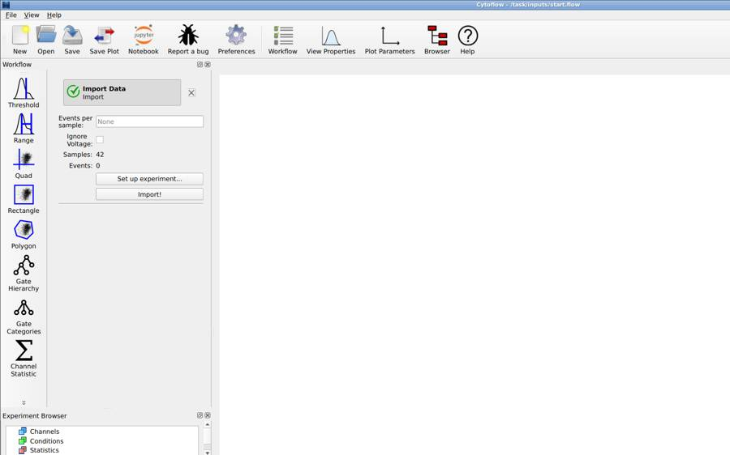
cd /tmp/work; python3 -I -c "
import marshal,sys
def consts(c,out):
for k in c.co_consts:
if hasattr(k,'co_code'): consts(k,out)
elif isinstance(k,str): out.append(k)
out.extend(c.co_names)
for m in ['cytoflowgui.op_plugins.import_op','cytoflowgui.workflow.operations.import_op']:
c=marshal.loads(open('/tmp/pyz/mods/'+m+'.code','rb').read()); o=[]; consts(c,o)
print(m, sorted(set(x for x in o if len(x)<80)))
"cytoflowgui.op_plugins.import_op ['', '\n Import data; save as self.result\n ', '$TOT', '-->', 'Button', 'ButtonEditor', 'ChannelHandler', 'Channels', 'Controller', 'Event', 'Events', 'Events per\nsample', 'ExperimentDialogHandler', 'ExperimentDialogModel', 'HGroup', 'IOperationPlugin', 'Ignore\nVoltage', 'Import', 'Import data', 'Import!', 'ImportHandler', 'ImportPlugin', 'ImportWorkflowOp', 'Instance', 'InstanceHandlerEditor', 'Item', 'Label', 'List', 'None', 'OP_PLUGIN_EXT', 'OpHandler', 'Plugin', 'PluginHelpMixin', 'Property', 'Reset channel names', 'Samples', 'Set up experiment...', 'TOP', 'TextEditor', 'VGroup', 'VerticalListEditor', 'View', '__doc__', '__module__', '__name__', '__qualname__', '_events_changed', '_get_samples', '_on_reset_channels', '_on_setup', '_plugin_default', 'cached_property', 'channel', 'custom', 'cytoflow.operations.import', 'cytoflowgui.editors', 'cytoflowgui.import_dialog', 'cytoflowgui.op_plugins.import', 'default_view', 'dialog_model', 'edit_traits', 'envisage.api', 'events', 'get_handler', 'get_icon', 'get_operation', 'handler.reset_channels_event', 'handler.samples', 'handler.setup_event', 'i_op_plugin', 'id', 'len', 'livemodal', 'menu_group', 'metadata', 'min', 'model', 'model.events', 'model.tubes', 'name', 'object.channels_list', 'object.do_estimate', 'object.events', 'object.ignore_v_bool', 'observe', 'op_plugin_base', 'operation_id', 'operation_traits_view', 'plugin', 'provides', 'readonly', 'reset_channels', 'reset_channels_event', 'ret_events', 'samples', 'setup_event', 'shared_op_traits_view', 'short_name', 'str', 'traits.api', 'traitsui.api', 'tubes', 'view_id', 'workflow.operations'] cytoflowgui.workflow.operations.import_op ['$PnN', '$PnS', 'BaseCStr', 'Bool', 'CIntOrNone', 'Channel', 'Click "Import!"', 'Click "Set up experiment, then "Import!"', 'CytoflowOpError', 'CytoflowOpWarning', 'Dict', 'Enum', 'HasTraits', 'IWorkflowOperation', 'ImportOp', 'ImportWorkflowOp', 'Instance', 'List', "Only ignore voltages if you know what you're doing!", 'PositiveInt', 'Str', 'String', 'Tube', 'ValidPythonIdentifier', 'WorkflowOperation', '__classcell__', '__doc__', '__module__', '__name__', '__qualname__', '__repr__', '_dump_channel', '_dump_op', '_dump_op_v1', '_dump_op_v2', '_dump_op_v3', '_dump_tube', '_load_channel', '_load_op_v1_v2', '_load_op_v3_v4', '_load_tube', '_on_controls_changed', 'a valid python identifier', 'apply', 'camel_registry', 'changed', 'channel', 'channels', 'channels_list', 'channels_list:items,channels_list:items.+type', 'clear_estimate', 'conditions', 'copy_traits', 'copyable_trait_names', 'cytoflow', 'cytoflow.experiment.Experiment', 'cytoflow.utility', 'cytoflow_class_repr', 'cytoflowgui.workflow.serialization', 'dedent', 'dict', 'dumper', 'error', 'estimate', 'events', 'file', 'format', 'get_notebook_code', 'ignore_v', 'ignore_v_bool', 'import', 'import-channel', 'info_text', 'items', 'keys', 'len', 'list', 'loader', 'metadata_only', 'name', 'name_metadata', 'observe', 'operation_base', 'original_channels', 'pop', 'provides', 'repr', 'reset_channels', 'ret_events', 'ret_experiment', 'sanitize_identifier', 'super', 'textwrap', 'traits.api', 'tube', 'tubes', 'util', 'utility', 'validate', 'warn', 'warnings'] Shell cwd was reset to /task
cu click 295 353; sleep 4; cu screenshot /tmp/screen.png
{
"file_path": "/tmp/screen.png"
}/tmp/screen.png

cu click 133 342; sleep 1; cu screenshot /tmp/screen.png
{
"file_path": "/tmp/screen.png"
}/tmp/screen.png

cu click 1189 578; sleep 4; cu screenshot /tmp/screen.png
{
"file_path": "/tmp/screen.png"
}/tmp/screen.png

for y in 705 611 580 518 487 424 393 330 299; do cu click 139 $y; sleep 1.5; done; cu screenshot /tmp/screen.png
{
"file_path": "/tmp/screen.png"
}/tmp/screen.png

cu click 295 673; for i in $(seq 1 60); do sleep 10; m=$(free -m | awk '/Mem/{print $3}'); echo "$((i*10))s used=${m}MB"; if dmesg | tail -3 | grep -q "Killed process 1"; then echo OOM; fi; doneCommand running in background with ID: bkedlrcxt. Output is being written to: /tmp/claude-0/-task/70cb3f13-67a5-4a68-97f5-b459e437205c/tasks/bkedlrcxt.output. You will be notified when it completes. To check interim output, use Read on that file path.
cd /tmp/work; python3 -I -c "
import marshal,sys
def consts(c,out):
for k in c.co_consts:
if hasattr(k,'co_code'): consts(k,out)
elif isinstance(k,str): out.append(k)
out.extend(c.co_names)
for m in ['cytoflow.views.long_table','cytoflowgui.view_plugins.long_table','cytoflowgui.workflow.views.long_table','cytoflow.operations.channel_stat']:
c=marshal.loads(open('/tmp/pyz/mods/'+m+'.code','rb').read()); o=[]; consts(c,o)
print(m, sorted(set(x for x in o if len(x)<120)))
print()
"; ls /tmp/pyz/mods | grep -iE "flowclean|binning|kinetic|density|hist" cytoflow.views.long_table ['\n Export the table to a file.\n ', '%s', ',', 'AttributeError', "Can't find the statistic {} in the experiment", "Can't make a table with more than 50 rows!", "Can't make a table with more than 50 rows! You can still export the table, though.", 'ChangedStr', 'Constant', 'CytoflowViewError', 'CytoflowViewWarning', 'Exception', 'HasStrictTraits', 'IView', 'Long Table View', 'LongTableView', 'Must have more than one value to plot.', 'No experiment specified', 'Only one value for level {}; dropping it.', 'Plot a table', 'RUNNING_IN_GUI', 'Statistics have changed dramatically -- see the documentation for updates.', 'Str', "Subset string '{0}' isn't valid", "Subset string '{0}' returned no values", 'Table', 'TypeError', 'ValueError', '__doc__', '__module__', '__name__', '__qualname__', '_approx_text_height', '_export_data', 'add_cell', 'add_subplot', 'add_table', 'auto_set_column_width', 'auto_set_font_size', 'columns', 'cytoflow', 'cytoflow.utility', 'cytoflow.view.long_table', 'droplevel', 'empty', 'enumerate', 'experiment', 'export', 'figure', 'format', 'friendly_id', 'get_level_values', 'i_view', 'id', 'index', 'iter', 'iterrows', 'len', 'list', 'loc', 'matplotlib.pyplot', 'matplotlib.table', 'names', 'np', 'numpy', 'object_', 'plot', 'plt', 'provides', 'pyplot', 'query', 'range', 'savetxt', 'set_color', 'set_visible', 'set_zorder', 'spines', 'statistic', 'statistics', 'subset', 'traits.api', 'unique', 'upper left', 'util', 'utility', 'values', 'w', 'warn', 'warnings', 'xaxis', 'yaxis', '{:g}']
cytoflowgui.view_plugins.long_table ['#000000', '#ff9191', '#ffff99', '*', '*.csv', ';', 'All files', 'ButtonEditor', 'CSV', 'ColorTextEditor', 'DefaultFileDialog', 'EnumEditor', 'Event', 'Export...', 'FileDialog', 'IViewPlugin', 'ImageResource', 'InstanceHandlerEditor', 'Item', 'List', 'Long\nTable', 'Long Table View', 'LongTableHandler', 'LongTablePlugin', 'LongTableWorkflowView', 'OK', 'Plugin', 'PluginHelpMixin', 'Property', 'Series', 'Statistic', 'Subset', 'SubsetListEditor', 'Table View', 'VGroup', 'VIEW_PLUGIN_EXT', 'View', 'ViewHandler', '__doc__', '__module__', '__name__', '__qualname__', '_export_data', '_get_levels', '_on_export', '_plugin_default', 'context', 'context.statistics, model.statistic', 'context.view_error', 'context.view_warning', 'context_handler.statistics_names', 'create_wildcard', 'csv', 'cytoflow.view.long_table', 'cytoflowgui.view.long_table', 'droplevel', 'editors', 'envisage.api', 'export', 'get_handler', 'get_icon', 'get_level_values', 'get_view', 'handler.export', 'handler.levels', 'i_view_plugin', 'id', 'index', 'isinstance', 'len', 'levels', 'list', 'long_table', 'model', 'name', 'names', 'observe', 'open', 'pandas', 'path', 'pd', 'plugin', 'provides', 'pyface.api', 'result is not None', 'save as', 'short_name', 'sort_values', 'statistic', 'statistics', 'subset_controllers', 'subset_handler_factory', 'subset_list', 'subset_view', 'traits.api', 'traitsui.api', 'unique', 'util', 'view_id', 'view_params_view', 'view_plugin_base', 'view_traits_view', 'workflow.views']
cytoflowgui.workflow.views.long_table ['\n {repr}.plot(ex_{idx})\n ', '\ncytoflowgui.workflow.views.long_table\n--------------------------------\n\n', 'BasePlotParams', "Can't find the statistic {} in the experiment", 'CytoflowViewError', 'DataFrame', 'IWorkflowView', 'Instance', 'LongTableView', 'LongTableWorkflowView', 'No experiment specified', 'WorkflowByView', '__classcell__', '__doc__', '__module__', '__name__', '__qualname__', '__repr__', '_dump', '_dump_v1', '_load', '_load_v1', 'camel_registry', 'copy_traits', 'copyable_trait_names', 'current_plot', 'cytoflow', 'cytoflow.utility', 'cytoflow_class_repr', 'cytoflowgui.workflow.serialization', 'dedent', 'dict', 'dumper', 'format', 'get_notebook_code', 'loader', 'logging', 'long-table-view', 'pandas', 'pd', 'plot', 'plot_params', 'provides', 'repr', 'result', 'statistic', 'statistics', 'subset_list', 'super', 'textwrap', 'traits.api', 'tuple', 'util', 'utility', 'view_base', 'warn']
cytoflow.operations.channel_stat ['Aggregation metadata {} not found, must be one of {}', 'Callable', 'Calling function on category {} returned {} which contains NaN', 'Channel Statistic', 'Channel {} not found in the experiment', 'ChannelStatisticOp', 'Constant', 'CytoflowOpError', 'CytoflowOpWarning', 'DataFrame', 'Exception', 'HasStrictTraits', 'IOperation', 'List', 'MultiIndex', 'Must specify a channel', 'Must specify a function', 'Must specify a name', "Must specify some grouping conditions in 'by'", 'Name can only contain letters, numbers and underscores.', 'Only one category for {}', 'Series', 'Str', "Subset string '{0}' isn't valid", 'The first call to your function returned a {}, but calling it on group {} returned a {}', 'TypeError', 'ValueError', 'Your function returned a pandas.Series with dtype {}. If it returns a Series, the data must be floating point.', 'Your function threw an error in group {}', '__doc__', '__module__', '__name__', '__qualname__', 'any', 'append', 'apply', 'by', 'channel', 'channels', 'clone', 'clone_traits', 'conditions', 'cytoflow.operations.channel_statistic', 'cytoflow.utility', 'data', 'dtype', 'f', 'float', 'format', 'friendly_id', 'from_tuples', 'full', 'function', 'groupby', 'groups', 'history', 'i_operation', 'id', 'index', 'isinstance', 'isna', 'keys', 'kind', 'len', 'loc', 'name', 'nan', 'np', 'numpy', 'pandas', 'pd', 'provides', 'query', 'sanitize_identifier', 'sort_index', 'statistics', 'subset', 'tolist', 'traits.api', 'tuple', 'type', 'unique', 'util', 'utility', 'warn', 'warnings', "{} is already in the experiment's statistics"]
cytoflow.operations.binning.code
cytoflow.operations.density.code
cytoflow.operations.flowclean.code
cytoflow.views.densityplot.code
cytoflow.views.histogram.code
cytoflow.views.histogram_2d.code
cytoflowgui.op_plugins.binning.code
cytoflowgui.op_plugins.density.code
cytoflowgui.op_plugins.flowclean.code
cytoflowgui.view_plugins.density.
… [380 more characters not shown]cd /tmp/work; python3 -I -c "
import marshal,sys
def consts(c,out):
for k in c.co_consts:
if hasattr(k,'co_code'): consts(k,out)
elif isinstance(k,str): out.append(k)
elif isinstance(k,tuple): out.extend([x for x in k if isinstance(x,str)])
out.extend(c.co_names)
import glob
for m in ['cytoflowgui.op_plugins.channel_stat','cytoflowgui.workflow.operations.channel_stat']+[p.split('/')[-1][:-5] for p in glob.glob('/tmp/pyz/mods/cytoflowgui.utility*')]:
c=marshal.loads(open('/tmp/pyz/mods/'+m+'.code','rb').read()); o=[]; consts(c,o)
print(m, sorted(set(x for x in o if len(x)<60)))
print()
" | head -60; tail -3 /tmp/claude-0/-task/70cb3f13-67a5-4a68-97f5-b459e437205c/tasks/bkedlrcxt.outputcytoflowgui.op_plugins.channel_stat ['Channel', 'Channel\nStatistic', 'Channel Statistic', 'ChannelStatisticHandler', 'ChannelStatisticPlugin', 'ChannelStatisticWorkflowOp', 'CheckListEditor', 'EnumEditor', 'Function', 'Group\nBy', 'IOperationPlugin', 'ImageResource', 'InstanceHandlerEditor', 'Item', 'List', 'None', 'OP_PLUGIN_EXT', 'OpHandler', 'Plugin', 'PluginHelpMixin', 'Statistics', 'Subset', 'SubsetListEditor', 'TextEditor', 'VGroup', 'View', '__doc__', '__module__', '__name__', '__qualname__', '_plugin_default', 'auto_set', 'by', 'channel', 'channel_stat', 'cols', 'conditions', 'context', 'context_handler.previous_channels', 'context_handler.previous_conditions', 'context_handler.previous_conditions_names', 'contributes_to', 'custom', 'cytoflow.operations.channel_statistic', 'cytoflowgui.op_plugins.channel_statistic', 'editor', 'editors', 'envisage.api', 'function_name', 'get_handler', 'get_icon', 'get_operation', 'handler_factory', 'i_op_plugin', 'id', 'keys', 'label', 'menu_group', 'model', 'name', 'op_plugin_base', 'operation_id', 'operation_traits_view', 'placeholder', 'plugin', 'provides', 'pyface.api', 'shared_op_traits_view', 'short_name', 'show_border', 'show_label', 'show_labels', 'sorted', 'style', 'subset_controllers', 'subset_handler_factory', 'subset_list', 'subset_view', 'summary_functions', 'traits.api', 'traitsui.api', 'values', 'view', 'view_id', 'workflow.operations', 'workflow.operations.channel_stat']
cytoflowgui.workflow.operations.channel_stat ['', ' and ', '*SD', '*SEM', '+CI', '+SD', '+SEM', '-CI', '-SD', '-SEM', '/SD', '/SEM', 'AttributeError', 'Callable', 'ChannelStatisticOp', 'ChannelStatisticWorkflowOp', 'Count', 'CytoflowOpError', 'Geo.Mean', 'Geo.Mean & 95% CI', 'Geo.Mean */ SD', 'Geo.Mean */ SEM', 'Geo.SD', 'Geo.SEM', 'ISubset', 'IWorkflowOperation', 'List', 'Mean', 'Mean & 95% CI', 'Mean +- SD', 'Mean +- SEM', 'Median', 'Property', 'SEM', 'Series', 'Std.Dev', 'Str', "Summary function isn't set", 'WorkflowOperation', '__doc__', '__module__', '__name__', '__qualname__', '__repr__', '_dump', '_dump_v1', '_get_subset', '_load', '_load_v1', '_on_subset_changed', 'apply', 'boots', 'by', 'camel_registry', 'changed', 'channel', 'channel-statistic', 'ci', 'clear_estimate', 'copy_traits', 'copyable_trait_names', 'cytoflow', 'cytoflow.utility', 'cytoflow_class_repr', 'cytoflowgui.workflow.serialization', 'dict', 'dumper', 'fill', 'format', 'function', 'function_name', 'geom_mean', 'geom_sd', 'geom_sem', 'geomean_95ci', 'get_notebook_code', 'idx', 'import numpy as np', 'import pandas as pd', 'import scipy.stats', 'import scipy.stats\nimport pandas as pd', 'import_statement', 'join', 'len', 'loader', 'logging', 'mean', 'mean_95ci', 'median', 'name', 'np', 'np.mean', 'np.median', 'np.std', 'numpy', 'observe', 'operation_base', 'pandas', 'pd', 'prev_idx', 'provides', 'repr', 'scipy', 'scipy.stats', 'scipy.stats.sem', 'sem', 'statistic_name', 'stats', 'std', 'str', 'subset', 'subset_list', 'subset_list.items.str', 'subset_list:items.str', 'summary_functions', 'traits.api', 'transient', 'util', 'utility', 'version', 'warn']
cytoflowgui.utility ['CallbackHandler', '__doc__', 'event_tracer', 'log_exception', 'logging', 'record_events']
cytoflowgui.utility.event_tracer ['', '\n', ' ', ' A single thread trait change event recorder.\n\n ', ' Add the record into the container.\n\n ', ' Close and stop all logging.\n\n ', ' Message record for a change event dispatch.\n\n ', ' Message record for a change handler call.\n\n ', ' Save the records into a file.\n\n ', ' [EXCEPTION: {}]', '<', '>', 'CALLING', 'CALLINGMSG', 'CHANGEMSG', 'CallingMessageRecord', 'ChangeEventRecorder', 'ChangeMessageRecord', 'EXITMSG', 'ExitMessageRecord', 'Lock', 'MultiThreadChangeEventRecorder', 'MultiThreadRecordContainer', 'RecordContainer', 'SPACES_TO_ALIGN_WITH_CHANGE_MESSAGE', 'SentinelRecord', '__class__', '__doc__', '__init__', '__module__', '__name__', '__qualname__', '__slots__', '__unicode__', '_creation_lock', '_get_tracer', '_record_containers', '_records', '_tracer_lock', 'action', 'append', 'class_name', 'clear_change_event_tracers', 'close', 'container', 'contextlib', 'contextmanager', 'current_thread', 'datetime', 'direction', 'exception', 'format', 'gap', 'get', 'get_change_event_collector', 'getsourcefile', 'handler', 'indent', 'inspect', 'isoformat', 'items', 'join', 'length', 'name', 'new', 'object', 'old', 'open', 'os', 'path', 'post_tracer', 'pre_tracer', 'record', 'record_events', 'save_to_directory', 'save_to_file', 'set_change_event_tracers', 'source', 'str', 'threading', 'time', 'tracers', 'trait_notifiers', 'traits', 'utcnow', 'w', 'write', '{0}.trace', '{time} {action:>{gap}}: {handler!r} in {source}\n']
cytoflowgui.utility.logging ['', 'CallbackHandler', 'Error: {0}\nLocation: {1}Thread: {2}', 'Exception in {0}: {1}', 'Handler', '__classcell__', '__doc__', '__init__', '__module__', '__name__', '__qualname__', '_callback', 'current_thread', 'debug', 'emit', 'error', 'exc_info', 'format', 'format_exception', 'format_exception_only', 'format_tb', 'join', 'log_exception', 'logging', 'name', 'super', 'sys', 'threading', 'traceback']
10s used=4137MB
Shell cwd was reset to /tasksleep 50; tail -3 /tmp/claude-0/-task/70cb3f13-67a5-4a68-97f5-b459e437205c/tasks/bkedlrcxt.output; cu screenshot /tmp/screen.png
Command running in background with ID: b0hikx2tl. Output is being written to: /tmp/claude-0/-task/70cb3f13-67a5-4a68-97f5-b459e437205c/tasks/b0hikx2tl.output. You will be notified when it completes. To check interim output, use Read on that file path.
cd /tmp/work; python3 -I dis1.py /tmp/pyz/mods/cytoflow.operations.binning.code | head; python3 -I -c "
import marshal
def consts(c,out):
for k in c.co_consts:
if hasattr(k,'co_code'): consts(k,out)
elif isinstance(k,str): out.append(k)
out.extend(c.co_names)
c=marshal.loads(open('/tmp/pyz/mods/cytoflow.operations.binning.code','rb').read()); o=[]; consts(c,o); print(sorted(set(x for x in o if len(x)<100)))"BinningOp
BinningOp.apply
BinningOp.apply.<locals>.<lambda>
BinningOp.default_view
BinningView
BinningView.plot
['\n Plot the histogram.\n \n Parameters\n ----------\n \n ', '%.4g', 'AnnotatingView', 'Binning', 'Binning Setup', 'BinningOp', 'BinningView', 'Can only use binning op with linear or log scale', 'Constant', 'CytoflowOpError', 'HasStrictTraits', 'HistogramView', 'IOperation', 'IView', 'Int', 'Must have more than one bin', 'Name can only contain letters, numbers and underscores.', 'Name is not set', 'Name {} is in the experiment already', 'Op1DView', 'PositiveFloat', 'ScaleEnum', 'Str', 'Too many bins! To increase this limit, change _max_num_bins (currently {})', '__classcell__', '__doc__', '__module__', '__name__', '__qualname__', '_max_num_bins', '_strip_trait', 'add_condition', 'append', 'apply', 'arange', 'array', 'base_op_views', 'bin_count_name', 'bin_count_name {} is in the experiment already', 'bin_scale', 'bin_width', 'bins', 'channel', 'channel is not set', "channel {} isn't in the experiment", 'clip', 'clone', 'clone_traits', 'columns', 'count', 'cytoflow.operations.binning', 'cytoflow.utility', 'cytoflow.views', 'cytoflow.views.binning', 'data', 'default_view', 'digitize', 'expand_class_attributes', 'expand_method_parameters', 'experiment', 'float', 'float64', 'format', 'friendly_id', 'groupby', 'history', 'huescale', 'i_operation', 'id', 'inverse', 'len', 'linear', 'log', 'map', 'max', 'metadata', 'min', 'must set bin width', 'name', 'no experiment specified', 'np', 'numpy', 'op', 'plot', 'provides', 'sanitize_identifier', 'scale', 'scale_factory', 'super', 'trait_set', 'traits.api', 'util', 'utility']
Shell cwd was reset to /task{
"file_path": "/tmp/claude-0/-task/70cb3f13-67a5-4a68-97f5-b459e437205c/tasks/b0hikx2tl.output"
}<system-reminder>Warning: the file exists but the contents are empty.</system-reminder>
sleep 40; cat /tmp/claude-0/-task/70cb3f13-67a5-4a68-97f5-b459e437205c/tasks/bkedlrcxt.output | tail -4
<tool_use_error>Blocked: sleep 40 followed by: cat /tmp/claude-0/-task/70cb3f13-67a5-4a68-97f5-b459e437205c/tasks/bkedlrcxt.output tail -4. To wait for a condition, use Monitor with an until-loop (e.g. `until <check>; do sleep 2; done`). To wait for a command you started, use run_in_background: true. Do not chain shorter sleeps to work around this block.</tool_use_error>
tail -4 /tmp/claude-0/-task/70cb3f13-67a5-4a68-97f5-b459e437205c/tasks/bkedlrcxt.output
10s used=4137MB 20s used=4232MB 30s used=4256MB 40s used=4262MB
until [ -s /tmp/claude-0/-task/70cb3f13-67a5-4a68-97f5-b459e437205c/tasks/b0hikx2tl.output ]; do sleep 3; done; cat /tmp/claude-0/-task/70cb3f13-67a5-4a68-97f5-b459e437205c/tasks/b0hikx2tl.output
50s used=4263MB 60s used=4263MB 70s used=4262MB /tmp/screen.png [exited with code 0]
{
"file_path": "/tmp/screen.png"
}
cu click 22 29; sleep 1; cu screenshot /tmp/screen.png
{
"file_path": "/tmp/screen.png"
}/tmp/screen.png

cu click 66 101; sleep 2; cu screenshot /tmp/screen.png
{
"file_path": "/tmp/screen.png"
}/tmp/screen.png

cu click 1038 744; cu paste "/task/outputs/workflow.flow"; sleep 0.5; cu key Return; sleep 3; ls -la /task/outputs; cu screenshot /tmp/screen.png
total 28 drwxrwsrwx 2 agent task 4096 Nov 5 08:23 . drwxr-xr-x 4 root root 4096 Nov 5 08:15 .. -rw-rw-r-- 1 cfapp task 18839 Nov 5 08:23 workflow.flow /tmp/screen.png
head -60 /task/outputs/workflow.flow; grep -n "channels" /task/outputs/workflow.flow | head
- !workflow-item;5
channels:
- AAV_GFP_GFP_A
- BV421_NCAM_A
- FSC_A
- LiveDead_Zombie_NIR_A
- SSC_A
- SSC_H
- Time
conditions:
control_type: !pandas-series;3
data:
- none
dtype: category
index: !pandas-rangeindex;1
name: null
start: 0
step: 1
stop: 1
dose_vg_per_cell: !pandas-series;3
data:
- '10000'
- '5000'
- '50000'
dtype: object
index: !pandas-index;1
dtype: int64
name: null
values:
- 1
- 0
- 2
is_control: !pandas-series;3
data:
- 'false'
dtype: category
index: !pandas-rangeindex;1
name: null
start: 0
step: 1
stop: 1
replicate: !pandas-series;3
data:
- '1'
- '2'
dtype: object
index: !pandas-rangeindex;1
name: null
start: 0
step: 1
stop: 2
well: !pandas-series;3
data:
- A1
- A10
- A11
- A12
- A2
- A3
- A4
2: channels:
262: channels_list:{
"file_path": "/tmp/screen.png"
}
cu click 600 9 double; sleep 2; cu screenshot /tmp/screen.png
{
"file_path": "/tmp/screen.png"
}/tmp/screen.png
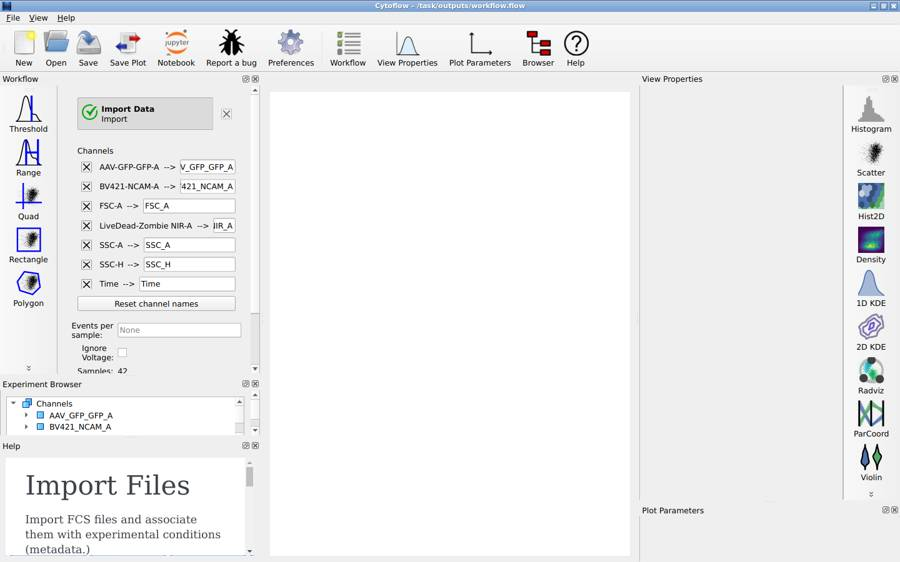
cu click 1393 390; sleep 2; cu screenshot /tmp/screen.png
{
"file_path": "/tmp/screen.png"
}/tmp/screen.png
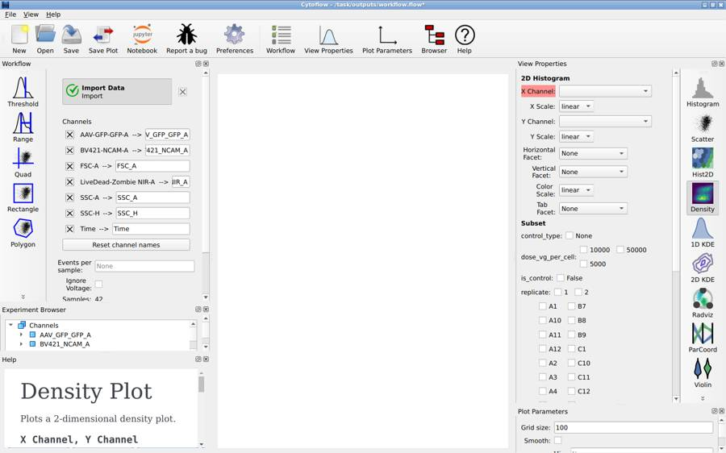
cu click 1200 181; sleep 1; cu screenshot /tmp/screen.png
{
"file_path": "/tmp/screen.png"
}/tmp/screen.png
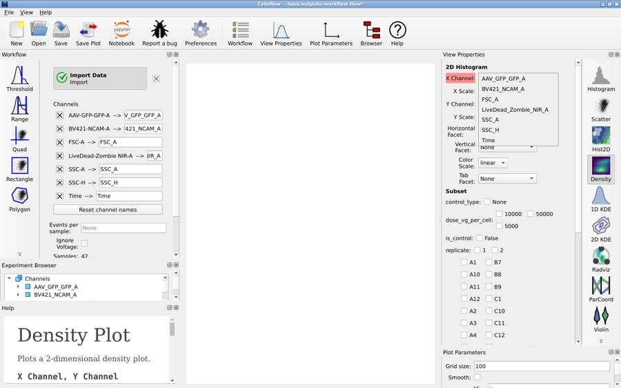
cu click 1137 230; sleep 1; cu click 1200 241; sleep 1; cu screenshot /tmp/screen.png
{
"file_path": "/tmp/screen.png"
}/tmp/screen.png
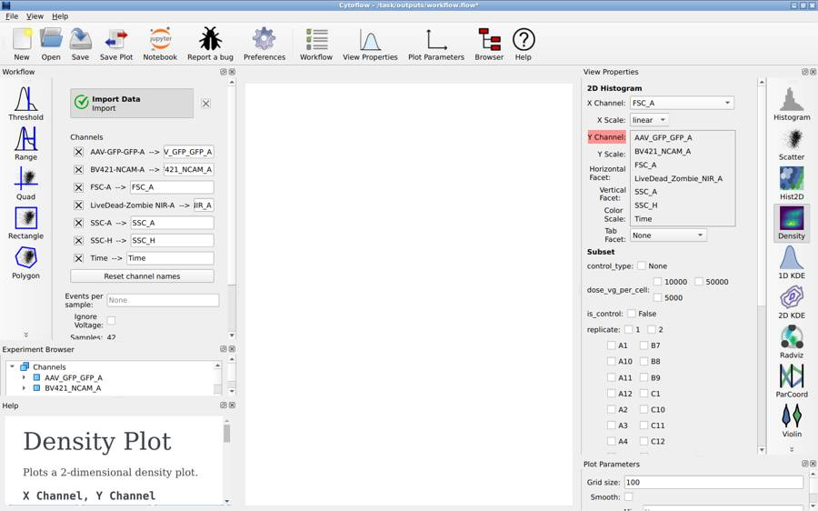
cu click 1137 337; sleep 1; cu click 1142 377; sleep 1; cu screenshot /tmp/screen.png
{
"file_path": "/tmp/screen.png"
}/tmp/screen.png
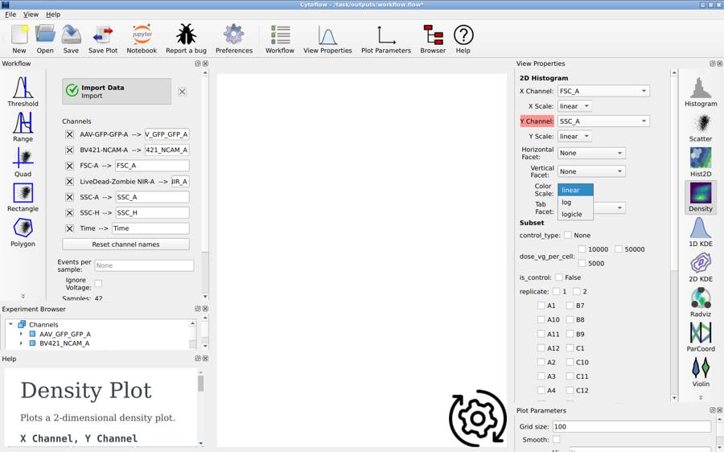
cu click 1127 402; sleep 15; cu screenshot /tmp/screen.png
{
"file_path": "/tmp/screen.png"
}/tmp/screen.png
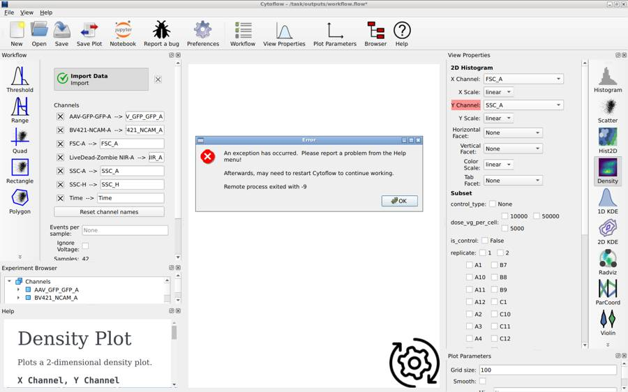
dmesg | grep -E "Killed process|oom-kill" | tail -3; free -m
[ 484.504511] cytoflow invoked oom-killer: gfp_mask=0x140dca(GFP_HIGHUSER_MOVABLE|__GFP_ZERO|__GFP_COMP), order=0, oom_score_adj=0
[ 484.509160] oom-kill:constraint=CONSTRAINT_NONE,nodemask=(null),cpuset=/,mems_allowed=0,global_oom,task_memcg=/,task=cytoflow,pid=1237,uid=1002
[ 484.509264] Out of memory: Killed process 1237 (cytoflow) total-vm:9156420kB, anon-rss:7258604kB, file-rss:8kB, shmem-rss:28kB, UID:1002 pgtables:14784kB oom_score_adj:0
total used free shared buff/cache available
Mem: 7949 993 6828 15 396 6956
Swap: 0 0 0whoami; df -h / /tmp | head; cat /proc/sys/vm/overcommit_memory; which swapon fallocate mkswap
root Filesystem Size Used Avail Use% Mounted on /dev/root 504G 4.2G 500G 1% / /dev/root 504G 4.2G 500G 1% / 0 /usr/sbin/swapon /usr/bin/fallocate /usr/sbin/mkswap
thinking
The sandbox has 500 GB free and I'm root, so I'm adding a swap file to keep all 34 M events from triggering OOM kills in Cytoflow.
fallocate -l 16G /swapfile && chmod 600 /swapfile && mkswap /swapfile && swapon /swapfile; free -m; cat /proc/swaps
Setting up swapspace version 1, size = 16 GiB (17179865088 bytes)
no label, UUID=3037f226-8a70-4ebe-8162-10afd30f298f
total used free shared buff/cache available
Mem: 7949 991 6825 15 401 6958
Swap: 16383 0 16383
Filename Type Size Used Priority
/swapfile file 16777212 0 -1cu click 915 461; sleep 1; pkill -f "cytoflow-1.3.2/cytoflow$"; sleep 1; ps aux | grep -v grep | grep "cytoflow-1.3.2/cytoflow" | awk '{print $2, $11, $12, $13}'(Bash completed with no output)
until ps aux | grep -v grep | grep -q "cytoflow-1.3.2/cytoflow --multiprocessing"; do sleep 1; done; sleep 6; cu screenshot /tmp/screen.png
{
"file_path": "/tmp/screen.png"
}/tmp/screen.png

cu click 915 493; sleep 1; cu click 600 9 double; sleep 2; cu click 89 75; sleep 2; cu screenshot /tmp/screen.png
{
"file_path": "/tmp/screen.png"
}/tmp/screen.png

cu click 706 576; cu paste "/task/outputs/workflow.flow"; sleep 0.5; cu key Return; sleep 3; cu screenshot /tmp/screen.png
{
"file_path": "/tmp/screen.png"
}/tmp/screen.png

cu click 737 427; sleep 2; until ! ps aux | grep -v grep | grep "multiprocessing-fork" | awk '{exit !($3>20)}'; do sleep 3; done; free -m; cu screenshot /tmp/screen.pngtotal used free shared buff/cache available Mem: 7949 2055 3677 15 2488 5894 Swap: 16383 0 16383 /tmp/screen.png
for i in $(seq 1 40); do sleep 10; c=$(top -b -n1 | awk '/cytoflow/{s+=$9} END{print s}'); m=$(free -m | awk '/Mem/{print $3}'); echo "$((i*10))s cpu=$c mem=$m"; doneCommand running in background with ID: bideznzqf. Output is being written to: /tmp/claude-0/-task/70cb3f13-67a5-4a68-97f5-b459e437205c/tasks/bideznzqf.output. You will be notified when it completes. To check interim output, use Read on that file path.
cat > /tmp/work/wait.sh <<'EOF'
#!/bin/bash
# wait until cytoflow CPU idle for 2 consecutive checks (max $1 seconds)
max=${1:-300}; idle=0; t=0
while [ $t -lt $max ]; do
sleep 5; t=$((t+5))
c=$(top -b -n1 -d0.5 | awk '/cytoflow/{s+=$9} END{print int(s)}')
if [ "$c" -lt 15 ]; then idle=$((idle+1)); else idle=0; fi
[ $idle -ge 2 ] && break
done
echo "waited ${t}s cpu=$c mem=$(free -m | awk '/Mem/{print $3}') swap=$(free -m | awk '/Swap/{print $3}')"
EOF
chmod +x /tmp/work/wait.sh; /tmp/work/wait.sh 400waited 20s cpu=0 mem=4319 swap=0
cu screenshot /tmp/screen.png; tail -3 /tmp/claude-0/-task/70cb3f13-67a5-4a68-97f5-b459e437205c/tasks/bideznzqf.output
/tmp/screen.png 10s cpu=110 mem=4202 20s cpu=0 mem=4373 30s cpu=0 mem=4296
{
"file_path": "/tmp/screen.png"
}
cu click 240 182; sleep 1; cu click 1393 390; sleep 2; cu click 1200 181; sleep 1; cu click 1137 230; sleep 1; cu click 1200 241; sleep 1; cu click 1137 337; sleep 1; cu screenshot /tmp/screen.png
{
"file_path": "/tmp/screen.png"
}/tmp/screen.png
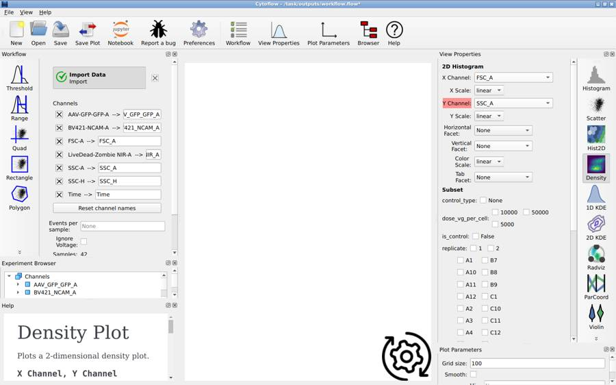
/tmp/work/wait.sh 300; cu screenshot /tmp/screen.png
{
"file_path": "/tmp/screen.png"
}waited 140s cpu=0 mem=661 swap=3682 /tmp/screen.png
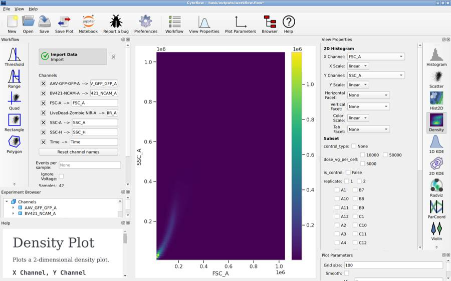
date; cu click 1142 211; sleep 1; cu screenshot /tmp/screen.png
{
"file_path": "/tmp/screen.png"
}Thu Nov 5 08:29:09 UTC 2026 /tmp/screen.png
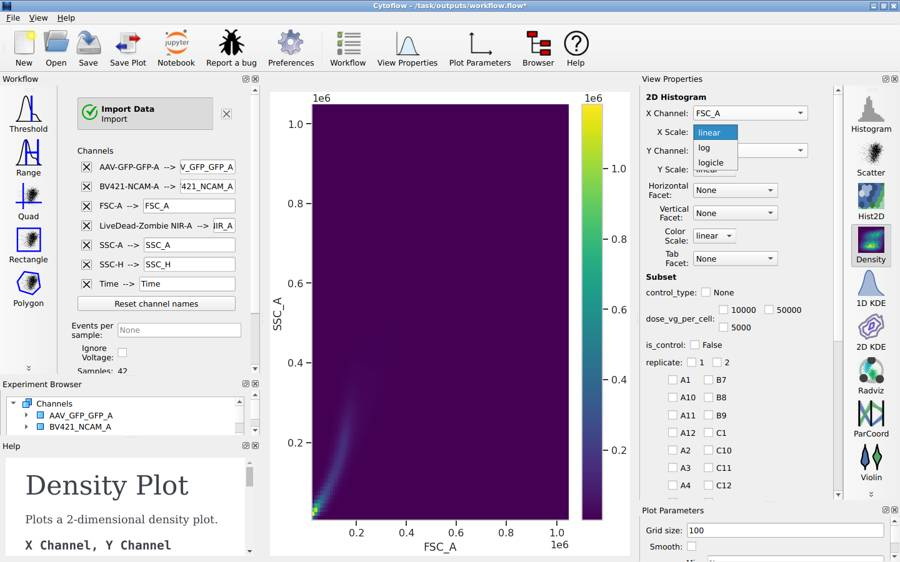
cu key Escape; sleep 0.5; cu click 1076 721; sleep 1; cu click 1142 211; sleep 1; cu click 1127 236; sleep 1; cu click 1142 271; sleep 1; cu screenshot /tmp/screen.png
{
"file_path": "/tmp/screen.png"
}/tmp/screen.png
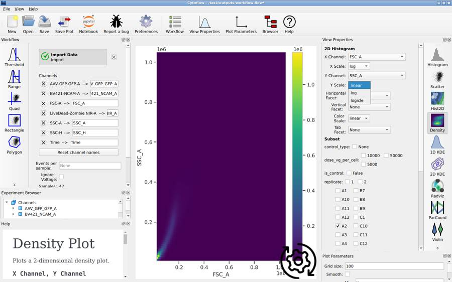
cu click 1127 296; sleep 1; cu click 1142 377; sleep 1; cu click 1127 402; sleep 1; /tmp/work/wait.sh 200; cu screenshot /tmp/screen.png
{
"file_path": "/tmp/screen.png"
}waited 30s cpu=0 mem=3985 swap=3632 /tmp/screen.png
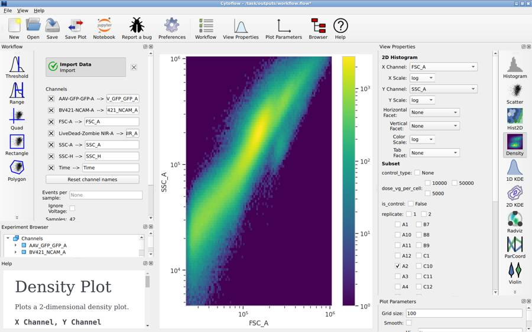
cu click 1076 721; sleep 0.5; cu click 1175 304; sleep 1; cu screenshot /tmp/screen.png
{
"file_path": "/tmp/screen.png"
}/tmp/screen.png
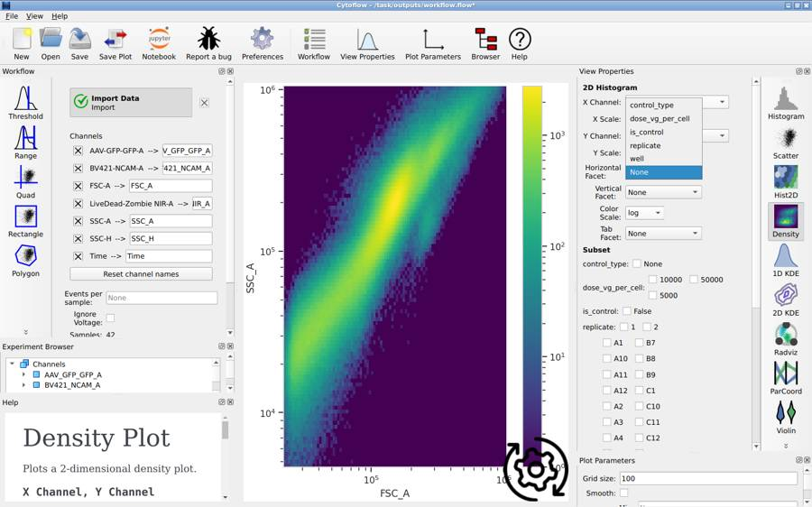
cu click 1130 281; sleep 1; /tmp/work/wait.sh 400; cu screenshot /tmp/screen.png
{
"file_path": "/tmp/screen.png"
}waited 265s cpu=0 mem=3797 swap=3818 /tmp/screen.png
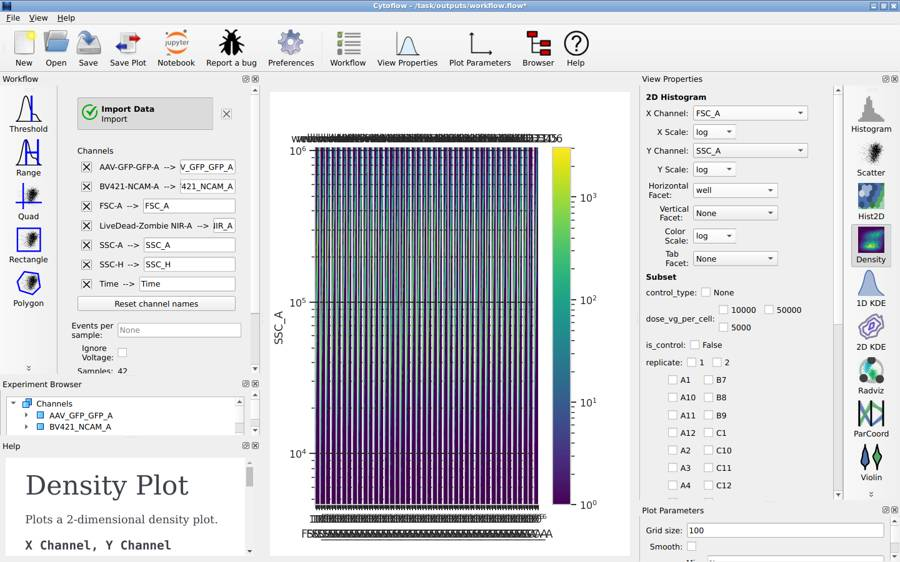
cu click 204 75; sleep 2; cu screenshot /tmp/screen.png
{
"file_path": "/tmp/screen.png"
}/tmp/screen.png
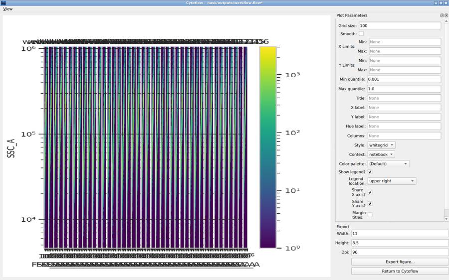
cu click 1295 436; cu type "7"; cu key Return; sleep 2; /tmp/work/wait.sh 400; cu screenshot /tmp/screen.png
{
"file_path": "/tmp/screen.png"
}waited 125s cpu=0 mem=3862 swap=3593 /tmp/screen.png
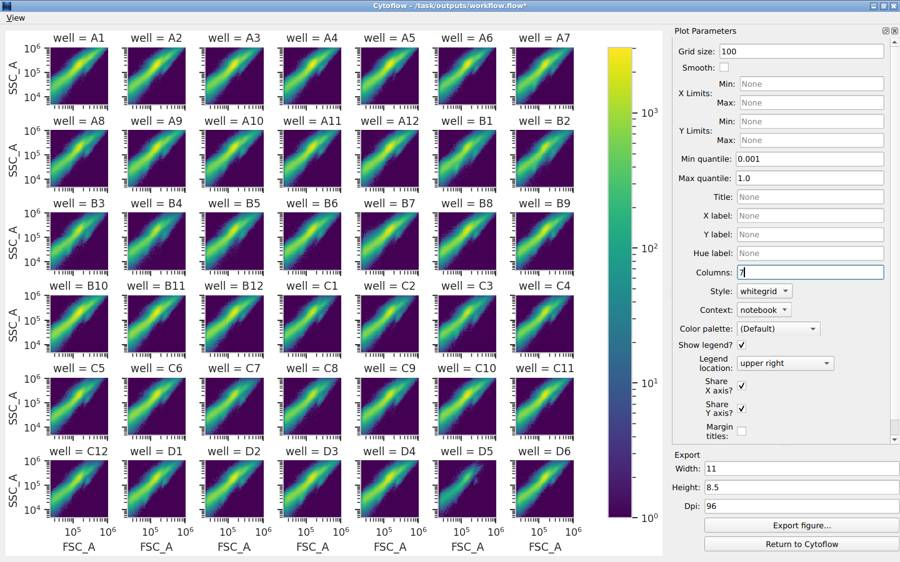
cu click 1282 871; sleep 2; cu click 1393 180; sleep 2; cu screenshot /tmp/screen.png
{
"file_path": "/tmp/screen.png"
}/tmp/screen.png
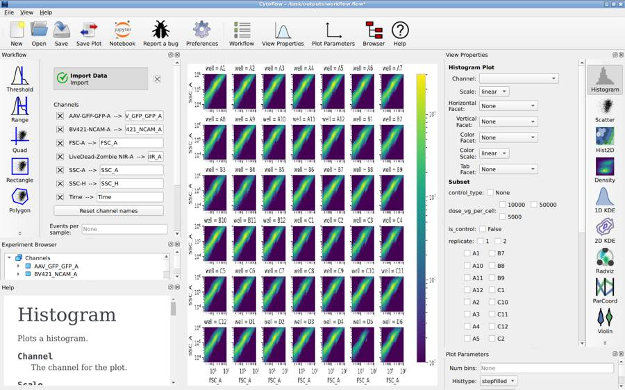
cu click 1170 244; sleep 1; cu screenshot /tmp/screen.png
{
"file_path": "/tmp/screen.png"
}/tmp/screen.png
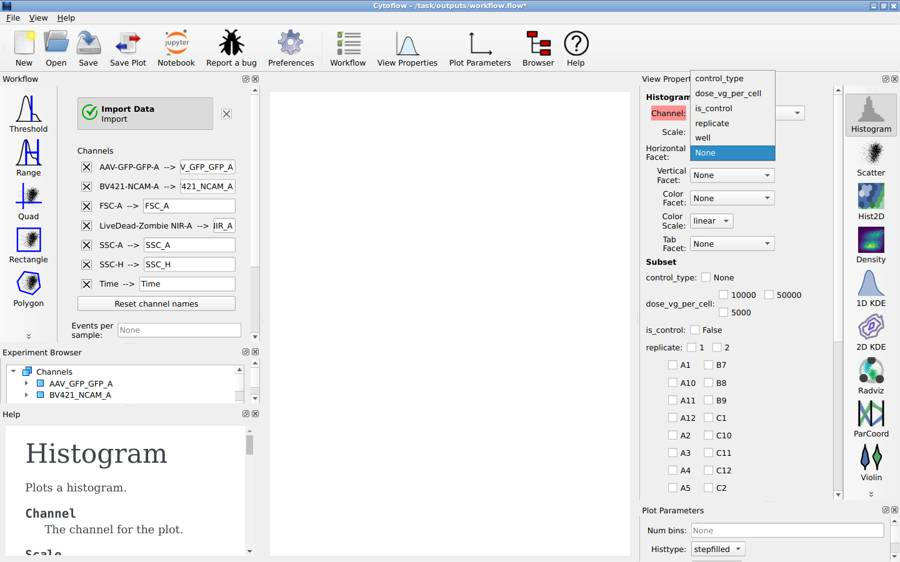
cu click 1125 220; sleep 1; cu drag 1230 804 1230 430; sleep 1; cu screenshot /tmp/screen.png
{
"file_path": "/tmp/screen.png"
}/tmp/screen.png
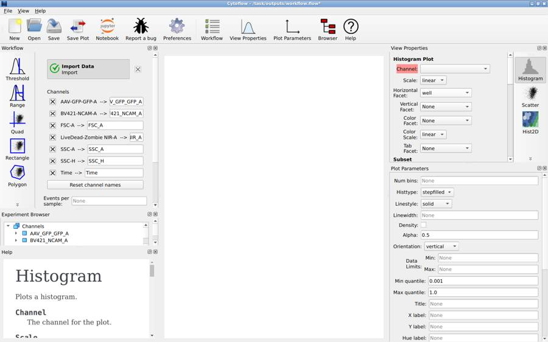
cu click 1260 475; cu type "100"; cu key Tab; sleep 0.5; cu triple_click 1270 739 2>/dev/null; cu click 1270 739; cu key ctrl+a; cu type "0"; cu key Tab; sleep 0.5; cu scroll 1230 700 down 10; sleep 1; cu screenshot /tmp/screen.png
{
"file_path": "/tmp/screen.png"
}# Computer-use helper: the agent's only way to act on the screen.
# cu screenshot [path] -> PNG of the screen (default /tmp/screen.png); prints path
# cu click X Y [left|right|double]
# cu move X Y | cu drag X1 Y1 X2 Y2 | cu scroll X Y up|down [N]
# cu type "text" (keystrokes) | cu paste "text" (clipboard) | cu key KEYS (e.g. ctrl+s, Return)
# cu cursor -> current mouse position
export DISPLAY=${DISPLAY:-:1}
cmd=$1; shift
/tmp/screen.png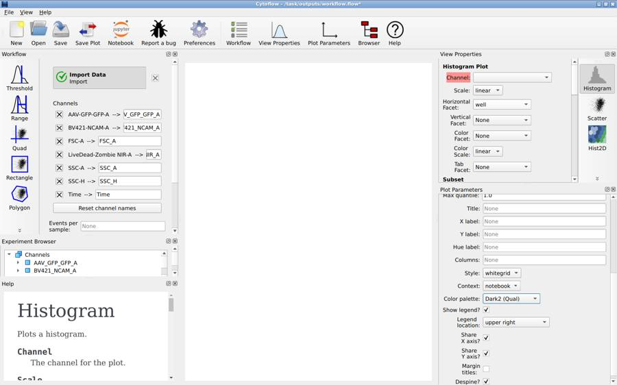
cu click 1270 607; cu type "7"; cu key Tab; sleep 0.5; cu click 1134 826; sleep 0.5; cu scroll 1230 600 up 15; sleep 0.5; cu screenshot /tmp/screen.png
{
"file_path": "/tmp/screen.png"
}/tmp/screen.png
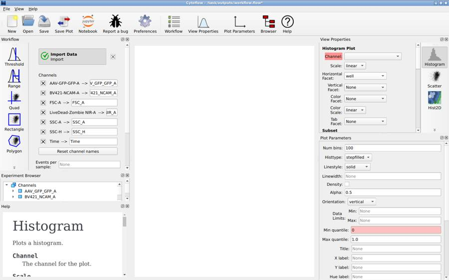
cu click 1270 739; cu key ctrl+a; cu type "0.001"; cu key Tab; sleep 0.3; cu click 1280 678; cu key ctrl+a; cu type "0"; cu key Tab; sleep 0.5; cu click 1195 181; sleep 1; cu screenshot /tmp/screen.png
{
"file_path": "/tmp/screen.png"
}/tmp/screen.png
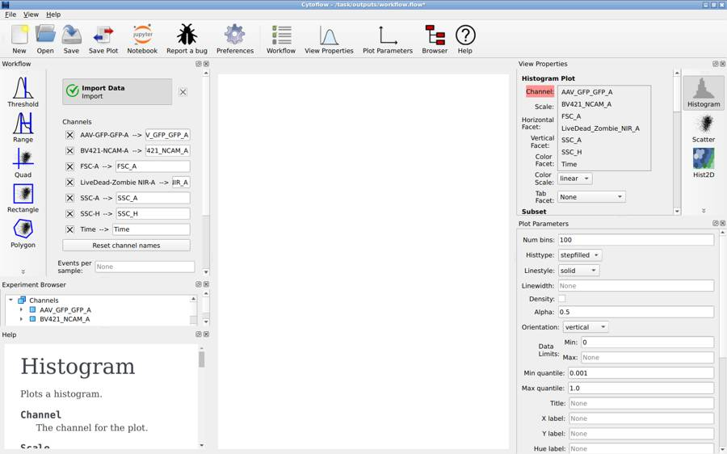
cu click 1127 325; sleep 2; /tmp/work/wait.sh 400; cu screenshot /tmp/screen.png
{
"file_path": "/tmp/screen.png"
}waited 65s cpu=0 mem=4034 swap=3406 /tmp/screen.png
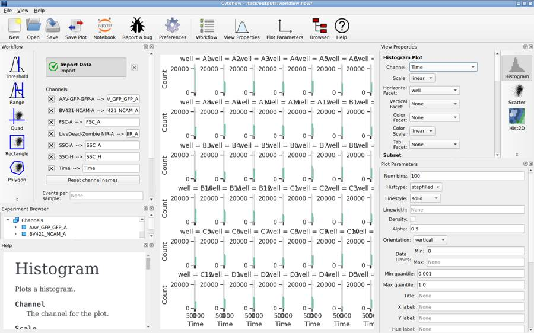
cu scroll 1230 700 down 10; sleep 0.5; cu screenshot /tmp/screen.png
{
"file_path": "/tmp/screen.png"
}/tmp/screen.png
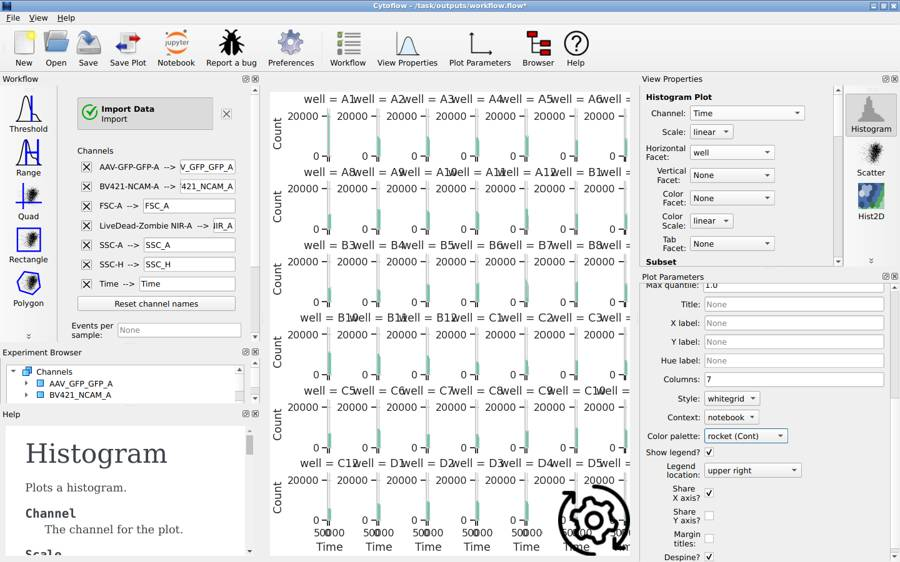
sleep 20; cu click 1134 789; sleep 2; /tmp/work/wait.sh 400; cu click 204 75; sleep 3; cu screenshot /tmp/screen.png
{
"file_path": "/tmp/screen.png"
}waited 215s cpu=0 mem=4055 swap=3066 /tmp/screen.png
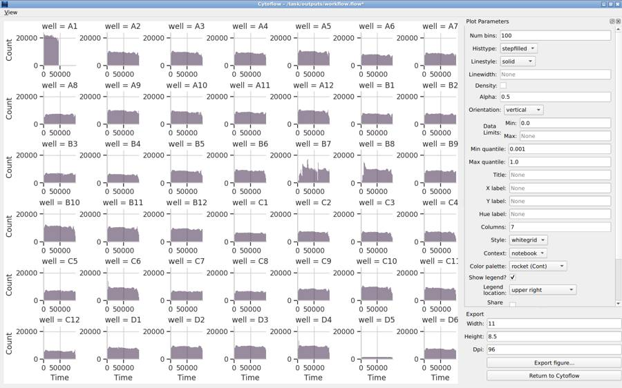
thinking
The Time histograms show B7 with a bursty event rate, D5 very low throughout, and A1 running at double speed; I'm exporting the figure at high resolution next to look closer.
mkdir -p /tmp/plots; chmod 777 /tmp/plots; cu click 1280 750; cu key ctrl+a; cu type "22"; cu key Tab; cu click 1280 780; cu key ctrl+a; cu type "17"; cu key Tab; sleep 0.5; cu click 1282 841; sleep 2; cu screenshot /tmp/screen.png
{
"file_path": "/tmp/screen.png"
}/tmp/screen.png
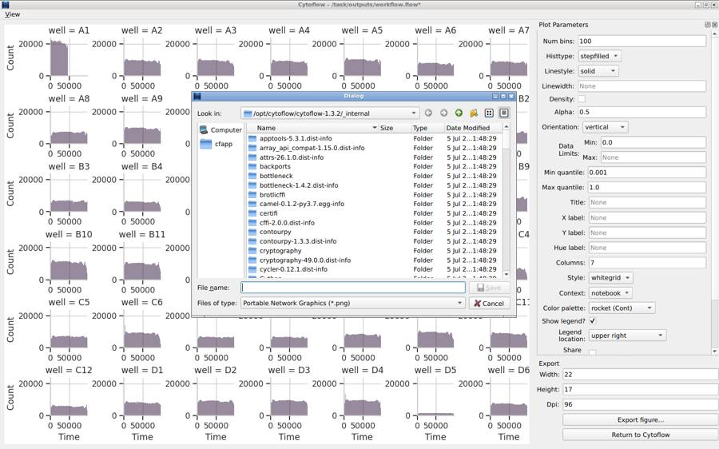
cu click 706 576; cu paste "/tmp/plots/time_hist.png"; sleep 0.5; cu key Return; sleep 3; until [ -f /tmp/plots/time_hist.png ]; do sleep 2; done; sleep 15; ls -la /tmp/plots; python3 -c "import matplotlib.image as m; a=m.imread('/tmp/plots/time_hist.png'); print(a.shape)"total 136 drwxrwxrwx 2 root root 4096 Nov 5 08:44 . drwxrwxrwx 15 root root 4096 Nov 5 08:44 .. -rw-rw-r-- 1 cfapp cfapp 127275 Nov 5 08:44 time_hist.png (1643, 2123, 4)
cd /tmp/plots; python3 -c "
import matplotlib.image as m, matplotlib.pyplot as plt
a=m.imread('time_hist.png'); h,w=a.shape[:2]
for i,(r0,r1) in enumerate([(0,h//2),(h//2,h)]):
m.imsave(f'time_part{i}.png', a[r0:r1])
"{
"file_path": "/tmp/plots/time_part0.png"
}Shell cwd was reset to /task
{
"file_path": "/tmp/plots/time_part1.png"
}
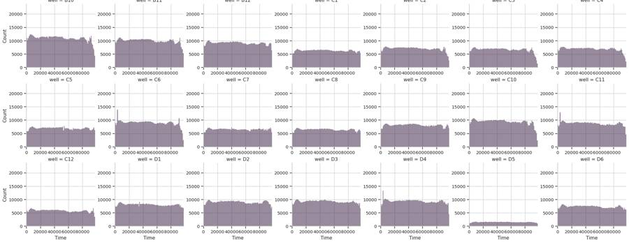
thinking
Time histograms show erratic flow in B7, a burst in B8 after a quiet start, and a single spike near 3 s in C6, C11 and D4. I'm adding the Cells polygon gate next.
cu click 1282 871; sleep 2; cu click 240 182; sleep 1; cu click 45 460; sleep 3; cu screenshot /tmp/screen.png
{
"file_path": "/tmp/screen.png"
}/tmp/screen.png
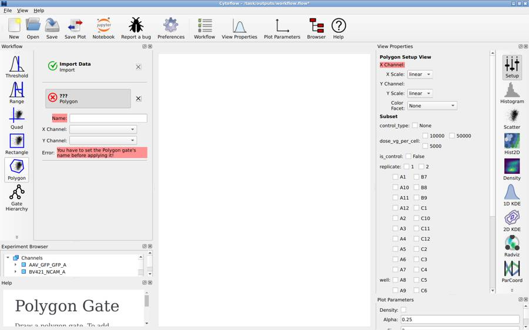
cu click 295 322; cu type "Cells"; cu key Tab; sleep 0.5; cu click 1076 595; cu click 1076 539; cu click 1133 763; cu click 1133 567; sleep 0.5; cu click 1098 845; sleep 0.5; cu click 1142 202; sleep 1; cu screenshot /tmp/screen.png
{
"file_path": "/tmp/screen.png"
}/tmp/screen.png
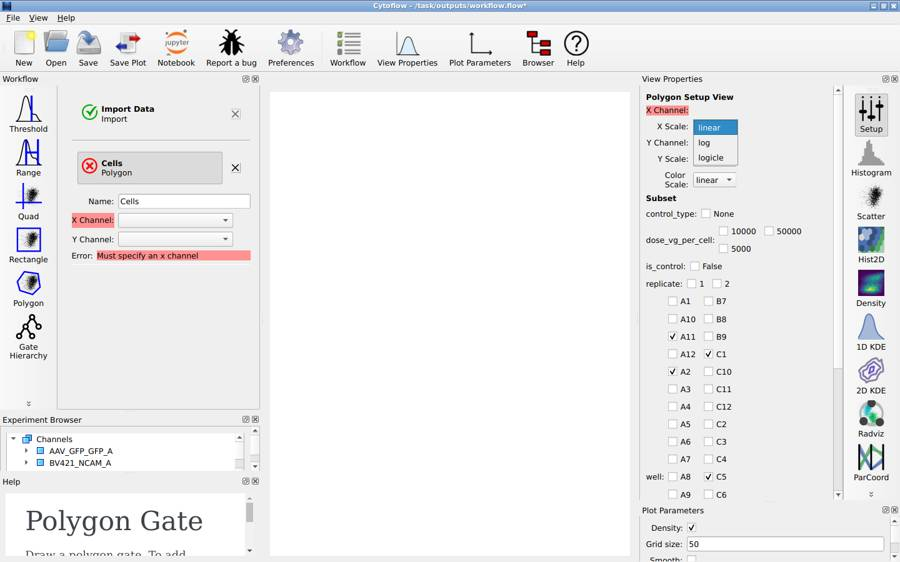
cu click 1127 228; sleep 0.5; cu click 1142 254; sleep 1; cu screenshot /tmp/screen.png
{
"file_path": "/tmp/screen.png"
}/tmp/screen.png
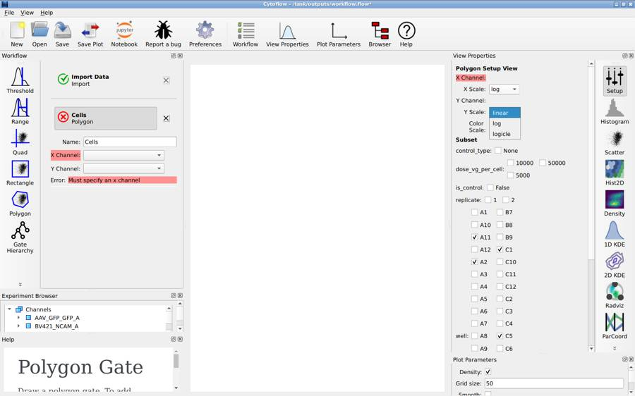
cu click 1127 280; sleep 0.5; cu click 1142 288; sleep 1; cu screenshot /tmp/screen.png
{
"file_path": "/tmp/screen.png"
}/tmp/screen.png
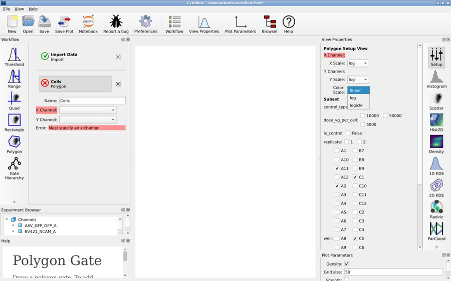
cu click 1127 313; sleep 0.5; cu click 1255 871; cu key ctrl+a; cu type "150"; cu key Tab; sleep 0.5; cu click 280 352; sleep 1; cu screenshot /tmp/screen.png
{
"file_path": "/tmp/screen.png"
}/tmp/screen.png
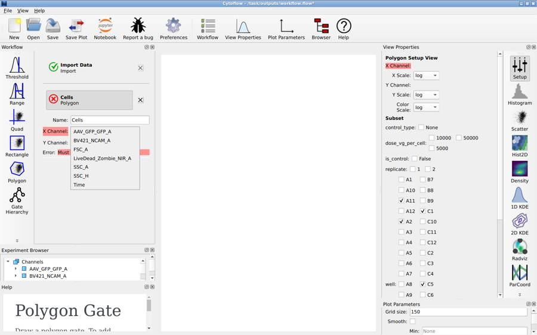
cu click 216 401; sleep 1; cu click 280 383; sleep 1; cu screenshot /tmp/screen.png
{
"file_path": "/tmp/screen.png"
}/tmp/screen.png
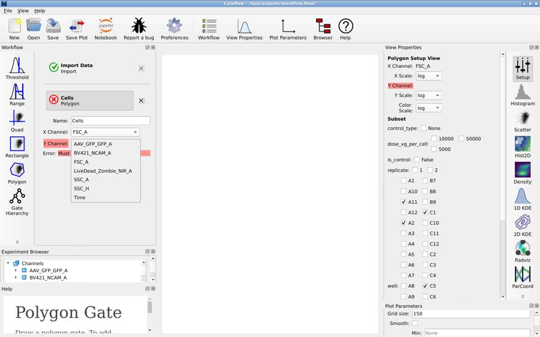
cu click 216 479; sleep 2; /tmp/work/wait.sh 300; cu screenshot /tmp/screen.png
{
"file_path": "/tmp/screen.png"
}waited 20s cpu=0 mem=4418 swap=2851 /tmp/screen.png
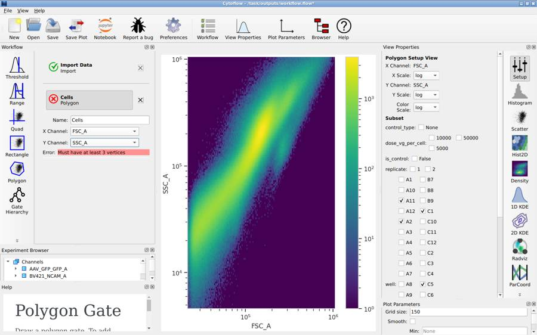
cd /tmp/plots && python3 -c "
import matplotlib.image as m
a=m.imread('/tmp/screen.png'); m.imsave('crop.png', a[140:840, 430:1010])
"{
"file_path": "/tmp/plots/crop.png"
}Shell cwd was reset to /task
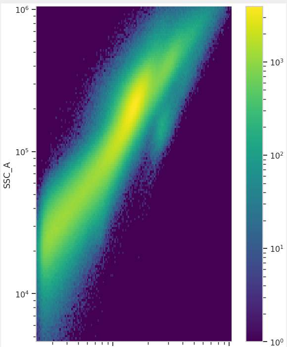
cu click 240 182; sleep 2; cu click 1393 180; sleep 2; cu screenshot /tmp/screen.png
{
"file_path": "/tmp/screen.png"
}/tmp/screen.png
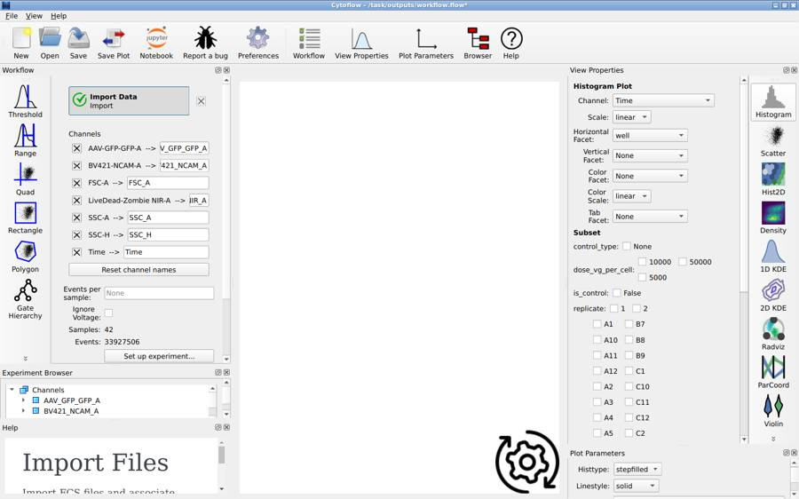
cu drag 1230 804 1230 430; sleep 1; cu screenshot /tmp/screen.png
{
"file_path": "/tmp/screen.png"
}/tmp/screen.png
/tmp/work/wait.sh 300; cu drag 1232 803 1232 430; sleep 1; cu screenshot /tmp/screen.png
{
"file_path": "/tmp/screen.png"
}waited 45s cpu=0 mem=4507 swap=2731 /tmp/screen.png
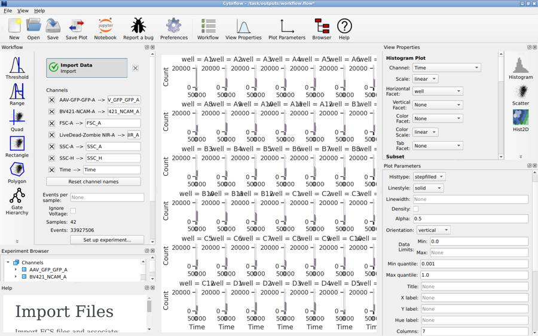
cu click 1280 646; cu key ctrl+a; cu key BackSpace; cu key Tab; sleep 1; cu click 1137 211; sleep 1; cu screenshot /tmp/screen.png
{
"file_path": "/tmp/screen.png"
}/tmp/screen.png
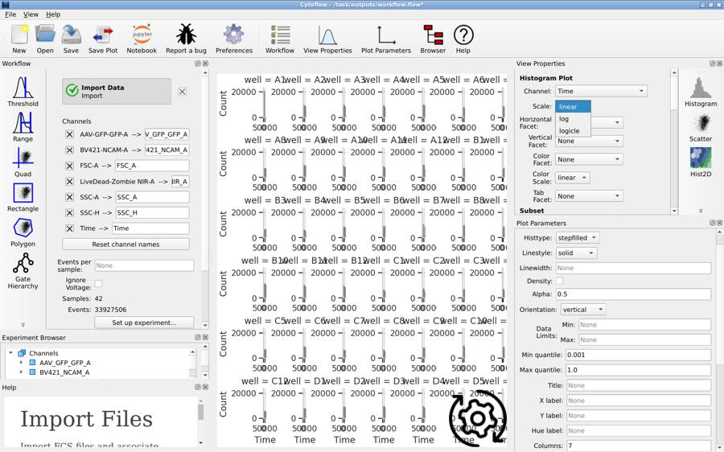
cu click 1122 236; sleep 1; cu click 1195 181; sleep 1; cu click 1130 230; sleep 2; /tmp/work/wait.sh 400; cu click 204 75; sleep 4; cu screenshot /tmp/screen.png
{
"file_path": "/tmp/screen.png"
}waited 115s cpu=0 mem=4497 swap=2655 /tmp/screen.png
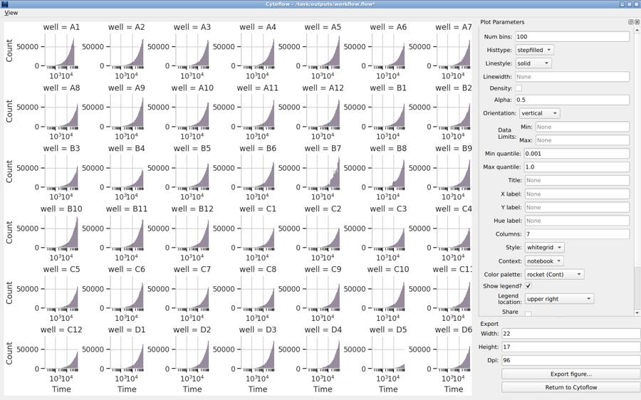
cu click 1282 871; sleep 2; cu click 1195 181; sleep 1.5; cu screenshot /tmp/screen.png
{
"file_path": "/tmp/screen.png"
}/tmp/screen.png
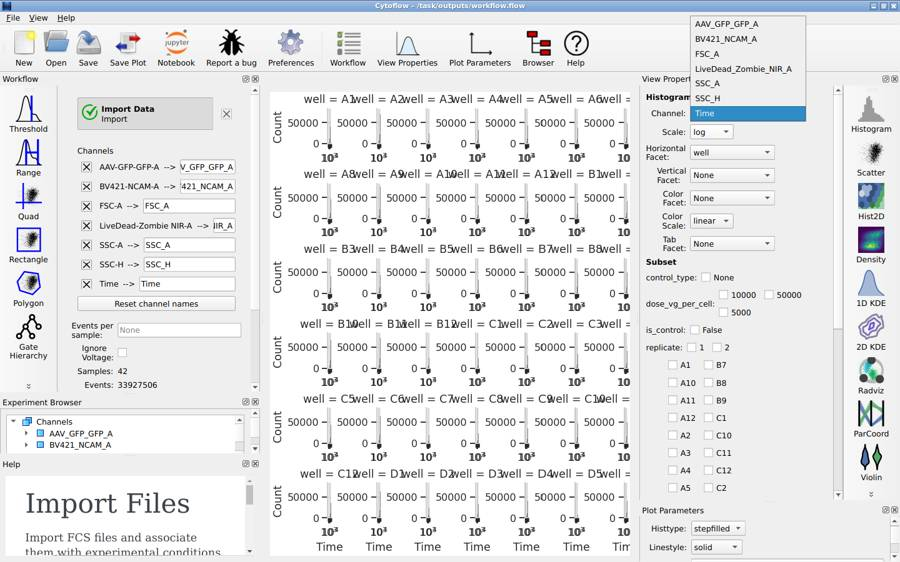
cu click 1131 86; sleep 2; /tmp/work/wait.sh 400; cu click 204 75; sleep 4; cu screenshot /tmp/screen.png
{
"file_path": "/tmp/screen.png"
}waited 65s cpu=0 mem=4475 swap=2589 /tmp/screen.png
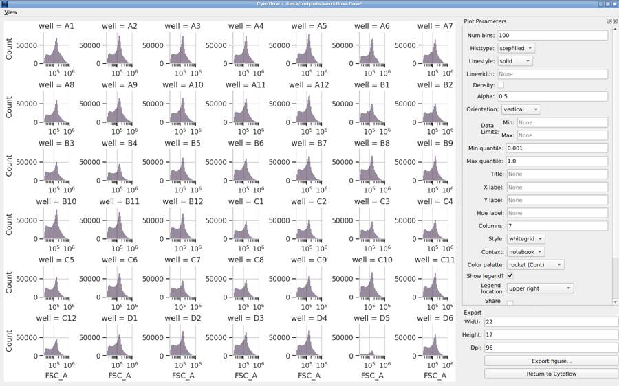
cu click 1282 841; sleep 2; cu click 706 576; cu paste "/tmp/plots/fsc_hist.png"; sleep 0.5; cu key Return; until [ -f /tmp/plots/fsc_hist.png ]; do sleep 2; done; sleep 12; cd /tmp/plots; python3 -c "
import matplotlib.image as m
a=m.imread('fsc_hist.png'); h,w=a.shape[:2]; print(a.shape)
m.imsave('fsc_part0.png', a[:h//2]); m.imsave('fsc_part1.png', a[h//2:])
"{
"file_path": "/tmp/plots/fsc_part0.png"
}(1643, 2123, 4) Shell cwd was reset to /task
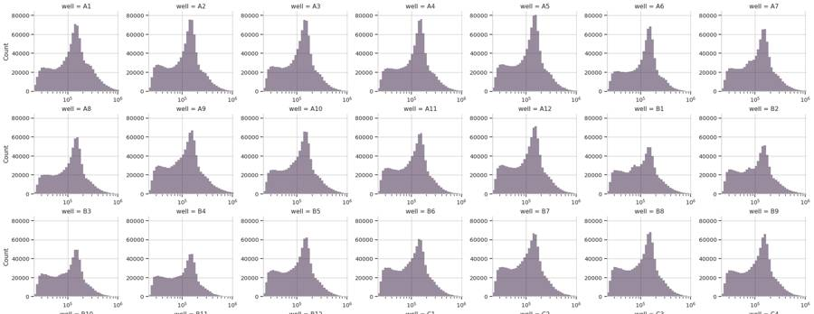
{
"file_path": "/tmp/plots/fsc_part1.png"
}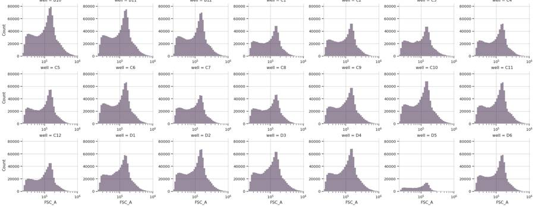
thinking
Debris shoulders sit in every well except D5, with the main peak near 1.6×10⁵. I'm setting the Cells lower FSC edge at ~6.5×10⁴ and drawing the polygon next.
cu click 1282 871; sleep 2; cu click 240 268; sleep 3; /tmp/work/wait.sh 200; cu screenshot /tmp/screen.png
{
"file_path": "/tmp/screen.png"
}waited 10s cpu=0 mem=4480 swap=2519 /tmp/screen.png
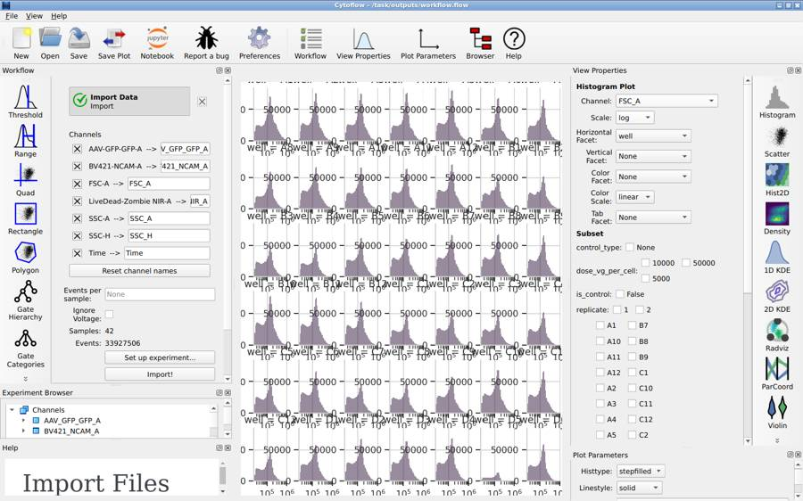
cu scroll 250 400 down 15; sleep 1; cu screenshot /tmp/screen.png
{
"file_path": "/tmp/screen.png"
}/tmp/screen.png
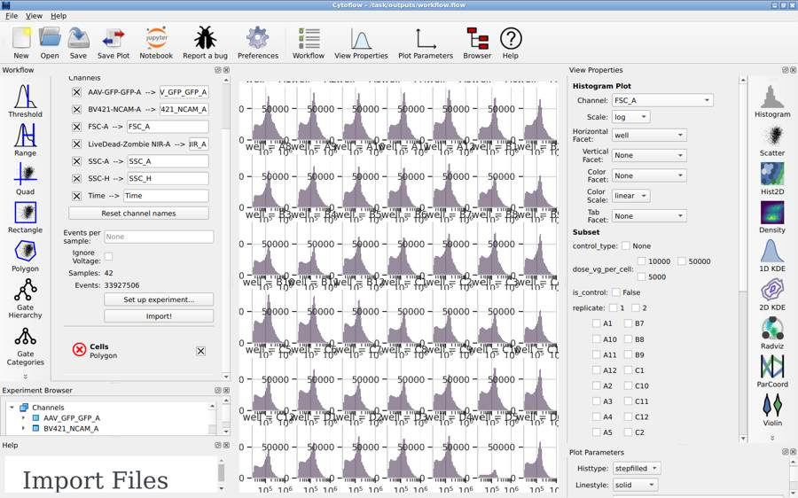
cu click 408 804; sleep 1; cu click 240 634; sleep 3; /tmp/work/wait.sh 200; cu screenshot /tmp/screen.png
{
"file_path": "/tmp/screen.png"
}waited 10s cpu=0 mem=4474 swap=2470 /tmp/screen.png
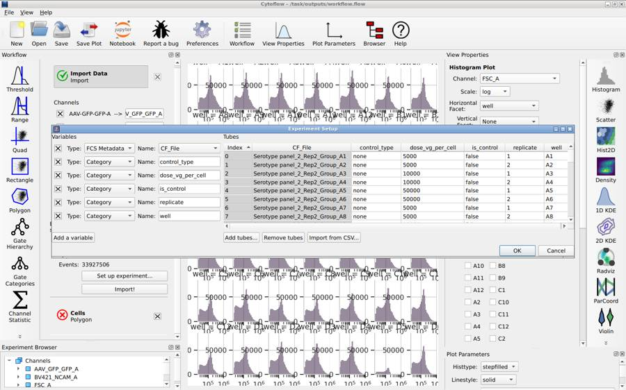
cu click 1278 578; sleep 2; cu screenshot /tmp/screen.png
{
"file_path": "/tmp/screen.png"
}/tmp/screen.png
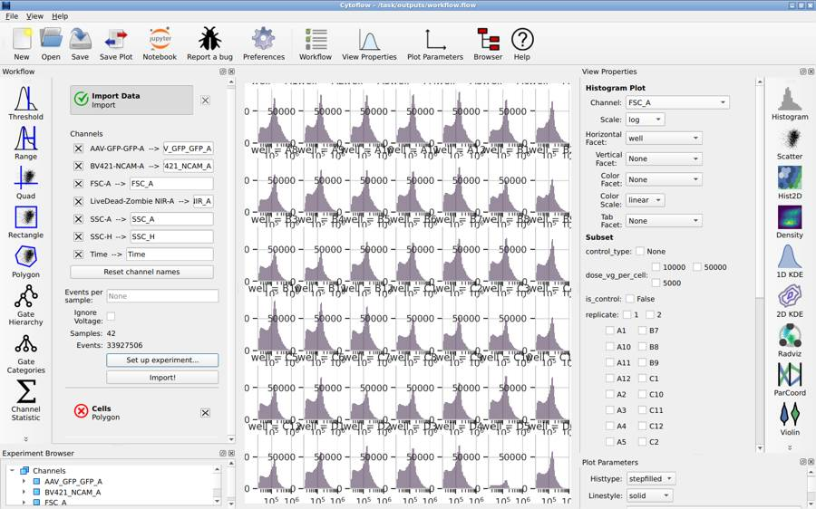
cu click 240 729; sleep 3; /tmp/work/wait.sh 200; cu screenshot /tmp/screen.png
{
"file_path": "/tmp/screen.png"
}waited 20s cpu=0 mem=4463 swap=2422 /tmp/screen.png
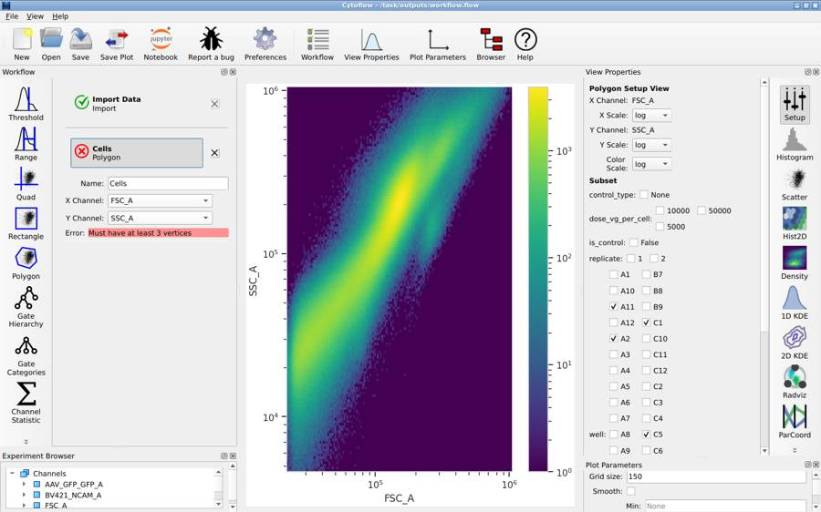
cu click 614 647; sleep 0.7; cu click 751 577; sleep 0.7; cu click 882 360; sleep 0.7; cu click 882 172; sleep 0.7; cu click 786 172; sleep 0.7; cu click 614 332 double; sleep 3; /tmp/work/wait.sh 300; cu screenshot /tmp/screen.png
{
"file_path": "/tmp/screen.png"
}waited 10s cpu=0 mem=4466 swap=2374 /tmp/screen.png
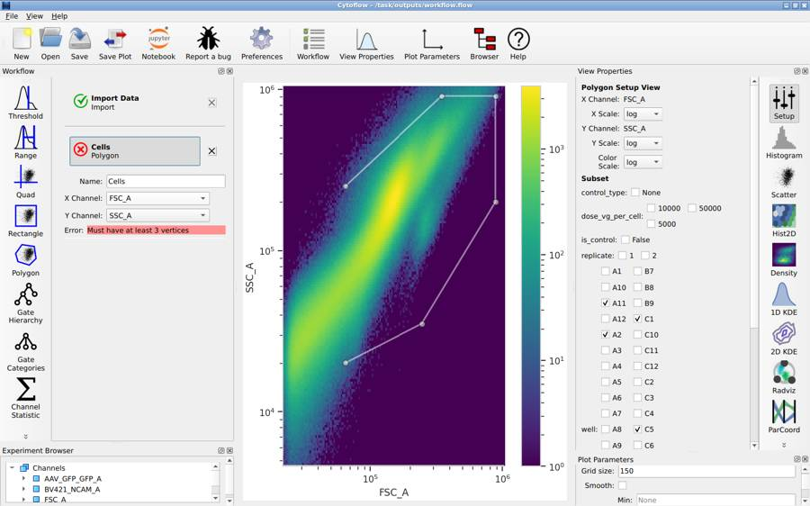
cu click 614 646; sleep 3; /tmp/work/wait.sh 300; cu screenshot /tmp/screen.png
{
"file_path": "/tmp/screen.png"
}waited 35s cpu=0 mem=4508 swap=2310 /tmp/screen.png
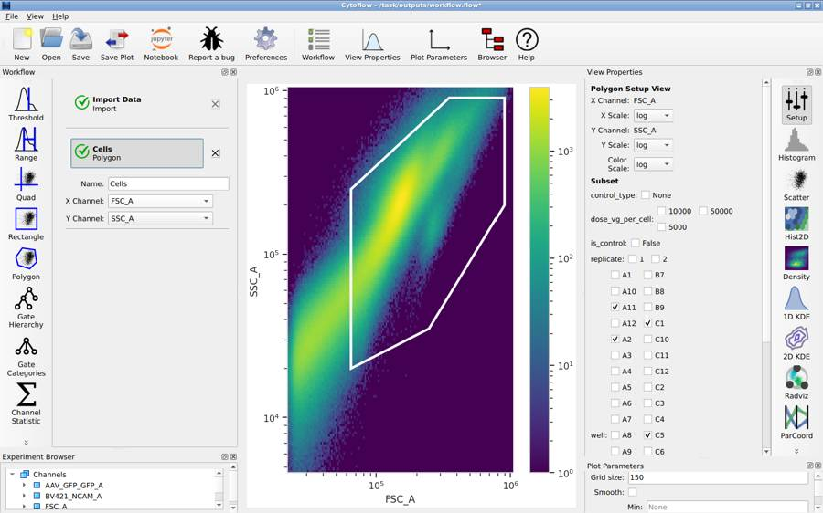
cu key ctrl+s; sleep 2; cu click 45 460; sleep 3; cu screenshot /tmp/screen.png; grep -c "polygon" /task/outputs/workflow.flow
{
"file_path": "/tmp/screen.png"
}/tmp/screen.png 3
cu click 295 409; cu type "Singlets"; cu key Tab; sleep 0.5; cu click 1087 339; cu click 1076 617; cu click 1076 561; cu click 1133 589; sleep 0.5; cu scroll 1060 860 up 5; sleep 0.5; cu screenshot /tmp/screen.png
{
"file_path": "/tmp/screen.png"
}/tmp/screen.png
cu click 1133 785; cu click 1098 845; sleep 0.5; cu click 1142 202; sleep 0.7; cu click 1127 228; sleep 0.7; cu click 1142 254; sleep 0.7; cu click 1127 280; sleep 0.7; cu screenshot /tmp/screen.png
{
"file_path": "/tmp/screen.png"
}/tmp/screen.png
cu click 1142 288; sleep 0.7; cu click 1127 313; sleep 0.5; cu click 1255 871; cu key ctrl+a; cu type "150"; cu key Tab; sleep 0.5; cu click 280 439; sleep 1; cu screenshot /tmp/screen.png
{
"file_path": "/tmp/screen.png"
}/tmp/screen.png
cu click 217 559; sleep 1; cu click 280 469; sleep 1; cu screenshot /tmp/screen.png
{
"file_path": "/tmp/screen.png"
}/tmp/screen.png
cu click 217 565; sleep 3; /tmp/work/wait.sh 300; cu screenshot /tmp/screen.png
{
"file_path": "/tmp/screen.png"
}waited 20s cpu=0 mem=4536 swap=2182 /tmp/screen.png
cd /tmp/plots && python3 -c "
import matplotlib.image as m
a=m.imread('/tmp/screen.png'); m.imsave('crop.png', a[140:700, 480:920].repeat(2,0).repeat(2,1))
"{
"file_path": "/tmp/plots/crop.png"
}Shell cwd was reset to /task
cu click 553 680; sleep 0.7; cu click 595 680; sleep 0.7; cu click 884 160; sleep 0.7; cu click 842 160; sleep 0.7; cu click 553 680; sleep 3; /tmp/work/wait.sh 300; cu screenshot /tmp/screen.png
{
"file_path": "/tmp/screen.png"
}waited 30s cpu=0 mem=4549 swap=2114 /tmp/screen.png
cd /tmp/plots && python3 -c "
import matplotlib.image as m
a=m.imread('/tmp/screen.png'); m.imsave('crop.png', a[150:700, 530:900].repeat(2,0).repeat(2,1))
"{
"file_path": "/tmp/plots/crop.png"
}Shell cwd was reset to /task
cu key ctrl+s; sleep 2; cu click 45 390; sleep 3; cu screenshot /tmp/screen.png
{
"file_path": "/tmp/screen.png"
}/tmp/screen.png
cu click 295 495; cu type "Live"; cu key Tab; sleep 0.5; cu click 1087 339; cu click 1107 361; sleep 0.3; cu scroll 1060 860 up 5; sleep 0.3; cu click 1098 845; sleep 0.5; cu click 1142 202; sleep 0.7; cu click 1127 252; sleep 0.7; cu click 1142 254; sleep 0.7; cu click 1127 280; sleep 0.7; cu screenshot /tmp/screen.png
{
"file_path": "/tmp/screen.png"
}/tmp/screen.png
cu click 1150 288; sleep 0.7; cu click 1135 313; sleep 0.5; cu click 1255 871; cu key ctrl+a; cu type "150"; cu key Tab; sleep 0.5; cu click 280 525; sleep 1; cu screenshot /tmp/screen.png
{
"file_path": "/tmp/screen.png"
}/tmp/screen.png
cu click 274 598; sleep 1; cu click 280 616; sleep 1; cu screenshot /tmp/screen.png
{
"file_path": "/tmp/screen.png"
}/tmp/screen.png
cu click 217 712; sleep 3; /tmp/work/wait.sh 400; cu screenshot /tmp/screen.png
{
"file_path": "/tmp/screen.png"
}waited 170s cpu=0 mem=782 swap=4140 /tmp/screen.png
date; cu click 1076 639; cu click 1076 582; cu click 1133 610; sleep 0.3; cu click 1142 202; sleep 1; cu screenshot /tmp/screen.png
{
"file_path": "/tmp/screen.png"
}Thu Nov 5 09:02:06 UTC 2026 /tmp/screen.png
cu click 1127 180; sleep 2; cu click 1142 202; sleep 1; cu click 1137 204; sleep 3; /tmp/work/wait.sh 300; cu screenshot /tmp/screen.png
{
"file_path": "/tmp/screen.png"
}waited 300s cpu=50 mem=7006 swap=11535 /tmp/screen.png
free -m; ps aux --sort=-rss | head -5 | awk '{print $2,$3,$4,$6,$11,$12,$13}'; dmesg | grep -i "killed process" | tail -2total used free shared buff/cache available Mem: 7949 5075 2755 4 343 2874 Swap: 16383 4050 12333 PID %CPU %MEM RSS COMMAND 1984 56.9 53.4 4355180 /opt/cytoflow/cytoflow-1.3.2/cytoflow --multiprocessing-fork tracker_fd=10 1023 1.2 4.3 351092 claude --verbose --output-format=stream-json 1971 0.5 0.3 32408 /opt/cytoflow/cytoflow-1.3.2/cytoflow 818 0.0 0.1 12348 Xvfb :1 -screen [ 138.010561] Out of memory: Killed process 863 (cytoflow) total-vm:8566148kB, anon-rss:7247076kB, file-rss:8kB, shmem-rss:28kB, UID:1002 pgtables:14760kB oom_score_adj:0 [ 484.509264] Out of memory: Killed process 1237 (cytoflow) total-vm:9156420kB, anon-rss:7258604kB, file-rss:8kB, shmem-rss:28kB, UID:1002 pgtables:14784kB oom_score_adj:0
/tmp/work/wait.sh 400; cu screenshot /tmp/screen.png
{
"file_path": "/tmp/screen.png"
}waited 335s cpu=0 mem=807 swap=4118 /tmp/screen.png
cu click 240 354; sleep 2; cu click 1393 460; sleep 3; cu screenshot /tmp/screen.png
{
"file_path": "/tmp/screen.png"
}/tmp/screen.png
cu click 1087 465; cu click 1107 487; sleep 0.3; cu click 1142 211; sleep 0.8; cu click 1137 260; sleep 0.8; cu click 1142 271; sleep 0.8; cu click 1127 296; sleep 0.8; cu click 1142 377; sleep 0.8; cu click 1127 402; sleep 0.8; cu screenshot /tmp/screen.png
{
"file_path": "/tmp/screen.png"
}/tmp/screen.png
cu click 1175 304; sleep 1; cu click 1130 281; sleep 1; cu drag 1232 803 1232 450; sleep 1; cu screenshot /tmp/screen.png
{
"file_path": "/tmp/screen.png"
}/tmp/screen.png
cu click 1270 817; cu type "7"; cu key Tab; sleep 0.5; cu click 1200 181; sleep 1; cu click 1190 254; sleep 1; cu click 1200 241; sleep 1; cu screenshot /tmp/screen.png
{
"file_path": "/tmp/screen.png"
}/tmp/screen.png
cu click 1137 337; sleep 3; /tmp/work/wait.sh 500; cu screenshot /tmp/screen.png
{
"file_path": "/tmp/screen.png"
}waited 85s cpu=0 mem=4415 swap=3905 /tmp/screen.png
cu click 204 75; sleep 4; cu click 1280 750; cu key ctrl+a; cu type "22"; cu key Tab; cu click 1280 780; cu key ctrl+a; cu type "17"; cu key Tab; sleep 0.5; cu click 1282 841; sleep 2; cu click 706 576; cu paste "/tmp/plots/zombie_dens.png"; sleep 0.5; cu key Return; until [ -f /tmp/plots/zombie_dens.png ]; do sleep 2; done; sleep 20; cd /tmp/plots; python3 -c "
import matplotlib.image as m
a=m.imread('zombie_dens.png'); h,w=a.shape[:2]; print(a.shape)
m.imsave('z0.png', a[:h//2]); m.imsave('z1.png', a[h//2:])
"{
"file_path": "/tmp/plots/z0.png"
}(1643, 2118, 4) Shell cwd was reset to /task
thinking
I'm picking the Live (Zombie NIR) cut-off, since the density plots show two populations but the logicle labels are unreadable. Next I'll plot per-well Zombie NIR histograms to find the valley numerically.
cu click 1282 871; sleep 2; cu click 1393 250; sleep 3; cu screenshot /tmp/screen.png
{
"file_path": "/tmp/screen.png"
}/tmp/screen.png
cu click 1087 441; cu click 1107 463; sleep 0.3; cu click 1137 211; sleep 0.8; cu click 1132 260; sleep 0.8; cu click 1170 244; sleep 0.8; cu screenshot /tmp/screen.png
{
"file_path": "/tmp/screen.png"
}/tmp/screen.png
cu click 1125 221; sleep 0.8; cu drag 1232 803 1232 450; sleep 1; cu screenshot /tmp/screen.png
{
"file_path": "/tmp/screen.png"
}/tmp/screen.png
cu scroll 1230 650 up 5; sleep 0.5; cu screenshot /tmp/screen.png
{
"file_path": "/tmp/screen.png"
}/tmp/screen.png
cu click 1260 496; cu type "150"; cu key Tab; sleep 0.3; cu scroll 1230 650 down 10; sleep 0.5; cu screenshot /tmp/screen.png
{
"file_path": "/tmp/screen.png"
}/tmp/screen.png
cu click 1270 597; cu type "7"; cu key Tab; sleep 0.3; cu click 1134 815; sleep 0.3; cu click 1195 181; sleep 1; cu screenshot /tmp/screen.png
{
"file_path": "/tmp/screen.png"
}/tmp/screen.png
cu click 1188 254; sleep 3; /tmp/work/wait.sh 500; cu click 204 75; sleep 4; cu click 1280 750; cu key ctrl+a; cu type "22"; cu key Tab; cu click 1280 780; cu key ctrl+a; cu type "17"; cu key Tab; sleep 0.5; cu click 1282 841; sleep 2; cu click 706 576; cu paste "/tmp/plots/zombie_hist.png"; sleep 0.5; cu key Return; until [ -f /tmp/plots/zombie_hist.png ]; do sleep 2; done; sleep 20; cd /tmp/plots; python3 -c "
import matplotlib.image as m
a=m.imread('zombie_hist.png'); h,w=a.shape[:2]; print(a.shape)
m.imsave('zh0.png', a[:h//2]); m.imsave('zh1.png', a[h//2:])
"{
"file_path": "/tmp/plots/zh0.png"
}waited 65s cpu=0 mem=4473 swap=3706 (1643, 2123, 4) Shell cwd was reset to /task
{
"file_path": "/tmp/plots/zh1.png"
}date; cu click 1282 871; sleep 2; cu click 1393 460; sleep 3; cu screenshot /tmp/screen.png
{
"file_path": "/tmp/screen.png"
}Thu Nov 5 09:21:30 UTC 2026 /tmp/screen.png
cu click 1175 304; sleep 1; cu screenshot /tmp/screen.png
{
"file_path": "/tmp/screen.png"
}/tmp/screen.png
cu click 1133 329; sleep 1; cu click 1076 765; cu click 1076 708; cu click 1133 736; sleep 0.5; cu click 1200 181; sleep 1; cu click 1162 182 2>/dev/null; sleep 1; cu screenshot /tmp/screen.png
{
"file_path": "/tmp/screen.png"
}/tmp/screen.png
cu click 1200 181; sleep 1.5; cu screenshot /tmp/screen.png
{
"file_path": "/tmp/screen.png"
}/tmp/screen.png
cu click 1167 110; sleep 1; cu click 1200 241; sleep 1.5; cu screenshot /tmp/screen.png
{
"file_path": "/tmp/screen.png"
}/tmp/screen.png
cu click 1190 218; sleep 1; cu click 1142 271; sleep 1; cu click 1132 320; sleep 3; /tmp/work/wait.sh 400; cu screenshot /tmp/screen.png
{
"file_path": "/tmp/screen.png"
}waited 80s cpu=0 mem=4536 swap=3476 /tmp/screen.png
cu click 1270 859; cu key ctrl+a; cu key BackSpace; cu key Tab; sleep 1; cu click 1142 271; sleep 1; cu screenshot /tmp/screen.png
{
"file_path": "/tmp/screen.png"
}/tmp/screen.png
cu click 1137 296; sleep 3; /tmp/work/wait.sh 400; cu screenshot /tmp/screen.png
{
"file_path": "/tmp/screen.png"
}waited 20s cpu=0 mem=4584 swap=3444 /tmp/screen.png
cd /tmp/plots && python3 -c "
import matplotlib.image as m
a=m.imread('/tmp/screen.png'); m.imsave('crop.png', a[150:840, 440:910].repeat(2,0).repeat(2,1))
"{
"file_path": "/tmp/plots/crop.png"
}Shell cwd was reset to /task
cu click 1393 250; sleep 3; cu screenshot /tmp/screen.png
{
"file_path": "/tmp/screen.png"
}/tmp/screen.png
cu click 1170 244; sleep 1; cu click 1125 245; sleep 1; cu drag 1232 803 1232 450; sleep 1; cu scroll 1230 650 down 10; sleep 0.5; cu screenshot /tmp/screen.png
{
"file_path": "/tmp/screen.png"
}/tmp/screen.png
cu click 1270 597; cu key ctrl+a; cu key BackSpace; cu key Tab; sleep 0.5; cu click 1170 244; sleep 1.2; cu screenshot /tmp/screen.png
{
"file_path": "/tmp/screen.png"
}/tmp/screen.png
cu click 1128 268; sleep 3; /tmp/work/wait.sh 400; cu screenshot /tmp/screen.png
{
"file_path": "/tmp/screen.png"
}waited 105s cpu=0 mem=885 swap=4110 /tmp/screen.png
cd /tmp/plots && python3 -c "
import matplotlib.image as m
a=m.imread('/tmp/screen.png'); m.imsave('crop.png', a[640:890, 520:720].repeat(4,0).repeat(4,1))
"{
"file_path": "/tmp/plots/crop.png"
}Shell cwd was reset to /task
cu click 240 532; sleep 3; cu screenshot /tmp/screen.png
{
"file_path": "/tmp/screen.png"
}/tmp/screen.png
cu click 295 555; cu type "-100000"; cu key Tab; sleep 0.5; cu click 295 585; cu type "250"; cu key Tab; sleep 0.5; cu click 295 646; cu type "0"; cu key Tab; sleep 0.5; cu click 295 676; cu type "1048576"; cu key Tab; sleep 2; cu click 1142 202; sleep 1; cu screenshot /tmp/screen.png
{
"file_path": "/tmp/screen.png"
}/tmp/screen.png
cu click 1137 228; sleep 3; /tmp/work/wait.sh 400; cu screenshot /tmp/screen.png
{
"file_path": "/tmp/screen.png"
}waited 295s cpu=0 mem=914 swap=4127 /tmp/screen.png
cu key ctrl+s; sleep 2; cu click 1393 250; sleep 3; cu screenshot /tmp/screen.png
{
"file_path": "/tmp/screen.png"
}/tmp/screen.png
cu drag 1232 452 1232 640; sleep 1; cu click 1137 211; sleep 0.8; cu click 1132 260; sleep 0.8; cu screenshot /tmp/screen.png
{
"file_path": "/tmp/screen.png"
}/tmp/screen.png
cu click 1087 441; cu click 1107 485; sleep 0.3; cu click 1260 684; cu type "200"; cu key Tab; cu click 1112 801; sleep 0.3; cu click 1170 317; sleep 1; cu screenshot /tmp/screen.png
{
"file_path": "/tmp/screen.png"
}/tmp/screen.png
cu click 1125 150; sleep 1; cu click 1195 181; sleep 1; cu click 1162 182; sleep 1; cu screenshot /tmp/screen.png
{
"file_path": "/tmp/screen.png"
}/tmp/screen.png
/tmp/work/wait.sh 400; cu screenshot /tmp/screen.png
{
"file_path": "/tmp/screen.png"
}waited 50s cpu=0 mem=1182 swap=4303 /tmp/screen.png
cu click 1137 211; sleep 0.8; cu click 1132 236; sleep 3; /tmp/work/wait.sh 400; cu screenshot /tmp/screen.png
{
"file_path": "/tmp/screen.png"
}waited 10s cpu=0 mem=1116 swap=4302 /tmp/screen.png
cu click 1137 211; sleep 1.2; cu screenshot /tmp/screen.png
{
"file_path": "/tmp/screen.png"
}/tmp/screen.png
cu click 1122 188; sleep 3; /tmp/work/wait.sh 400; cu screenshot /tmp/screen.png
{
"file_path": "/tmp/screen.png"
}waited 45s cpu=0 mem=1100 swap=4336 /tmp/screen.png
cu click 1083 463; sleep 0.3; cu click 1170 317; sleep 1; cu screenshot /tmp/screen.png
{
"file_path": "/tmp/screen.png"
}/tmp/screen.png
cu click 1128 485; sleep 1; cu click 1170 244; sleep 1.2; cu screenshot /tmp/screen.png
{
"file_path": "/tmp/screen.png"
}/tmp/screen.png
cu click 1125 221; sleep 0.8; cu click 1112 801; sleep 0.3; cu scroll 1230 800 down 3; sleep 0.5; cu screenshot /tmp/screen.png
{
"file_path": "/tmp/screen.png"
}/tmp/screen.png
cu click 1280 700; cu type "10"; cu key Tab; sleep 0.3; cu scroll 1230 800 down 5; sleep 0.5; cu screenshot /tmp/screen.png
{
"file_path": "/tmp/screen.png"
}/tmp/screen.png
cu click 1134 847; sleep 0.3; cu scroll 1230 800 up 2; sleep 0.5; cu screenshot /tmp/screen.png
{
"file_path": "/tmp/screen.png"
}/tmp/screen.png
cu click 1270 754; cu type "7"; cu key Tab; sleep 3; /tmp/work/wait.sh 500; cu click 204 75; sleep 4; cu click 1280 750; cu key ctrl+a; cu type "22"; cu key Tab; cu click 1280 780; cu key ctrl+a; cu type "17"; cu key Tab; sleep 0.5; cu click 1282 841; sleep 2; cu click 706 576; cu paste "/tmp/plots/gfp_live.png"; sleep 0.5; cu key Return; until [ -f /tmp/plots/gfp_live.png ]; do sleep 2; done; sleep 20; cd /tmp/plots; python3 -c "
import matplotlib.image as m
a=m.imread('gfp_live.png'); h,w=a.shape[:2]; print(a.shape)
m.imsave('g0.png', a[:h//2]); m.imsave('g1.png', a[h//2:])
"{
"file_path": "/tmp/plots/g0.png"
}waited 35s cpu=0 mem=4222 swap=4242 (1643, 2123, 4) Shell cwd was reset to /task
{
"file_path": "/tmp/plots/g1.png"
}cu click 1282 871; sleep 2; cu click 45 180; sleep 3; cu screenshot /tmp/screen.png
{
"file_path": "/tmp/screen.png"
}/tmp/screen.png
cu click 293 581; cu type "GFP_pos"; cu key Tab; sleep 0.5; cu click 279 612; sleep 1; cu screenshot /tmp/screen.png
{
"file_path": "/tmp/screen.png"
}/tmp/screen.png
cu click 245 613; sleep 1; cu click 293 642; cu type "1000"; cu key Tab; sleep 1; cu click 1087 309; cu click 1083 330; cu click 1107 352; sleep 0.3; cu click 1142 224; sleep 1; cu screenshot /tmp/screen.png
{
"file_path": "/tmp/screen.png"
}/tmp/screen.png
cu click 1125 249; sleep 3; /tmp/work/wait.sh 400; cu screenshot /tmp/screen.png
{
"file_path": "/tmp/screen.png"
}waited 375s cpu=0 mem=4154 swap=4189 /tmp/screen.png
cu key ctrl+s; sleep 3; grep -nE "name: |threshold|xhigh|xlow|vertices" /task/outputs/workflow.flow | head -30; date
16: name: null 28: name: null 38: name: null 48: name: null 99: name: null 179: name: control_type 184: name: dose_vg_per_cell 191: name: is_control 196: name: replicate 202: name: well 251: fcs_name: AAV-GFP-GFP-A 256: fcs_name: BV421-NCAM-A 261: fcs_name: FSC-A 266: fcs_name: LiveDead-Zombie NIR-A 271: fcs_name: SSC-A 276: fcs_name: SSC-H 281: fcs_name: Time 370: name: AAV_GFP_GFP_A 373: name: BV421_NCAM_A 376: name: FSC_A 379: name: LiveDead_Zombie_NIR_A 382: name: SSC_A 385: name: SSC_H 388: name: Time 954: name: control_type 959: name: dose_vg_per_cell 966: name: is_control 971: name: replicate 977: name: well 1060: name: control_type Thu Nov 5 09:47:12 UTC 2026
grep -nE "^ name: |threshold:|xhigh:|xlow:|ylow:|yhigh:|vertices:|xchannel:|ychannel:|channel:|operation: " /task/outputs/workflow.flow | head -40; ls -la /task/outputs
144: channel: FSC_A 366: operation: !import;4 369: channel: AAV-GFP-GFP-A 372: channel: BV421-NCAM-A 375: channel: FSC-A 378: channel: LiveDead-Zombie NIR-A 381: channel: SSC-A 384: channel: SSC-H 387: channel: Time 1128: xchannel: FSC_A 1131: ychannel: SSC_A 1293: vertices: 1315: xchannel: FSC_A 1317: ychannel: SSC_A 1540: operation: *id004 1998: channel: LiveDead_Zombie_NIR_A 2248: operation: &id006 !polygon;1 2249: name: Singlets 2250: vertices: 2263: xchannel: SSC_H 2265: ychannel: SSC_A 2782: xchannel: AAV_GFP_GFP_A 2785: ychannel: LiveDead_Zombie_NIR_A 2963: channel: AAV_GFP_GFP_A 3221: operation: &id008 !range2d;1 3222: name: Live 3223: xchannel: LiveDead_Zombie_NIR_A 3224: xhigh: 250.0 3225: xlow: -100000.0 3226: ychannel: SSC_A 3227: yhigh: 1048576.0 3228: ylow: 0.0 3827: channel: AAV_GFP_GFP_A 3829: threshold: 1000.0 4086: operation: *id011 total 84 drwxrwsrwx 2 agent task 4096 Nov 5 08:23 . drwxr-xr-x 4 root root 4096 Nov 5 08:15 .. -rw-rw-r-- 1 cfapp task 74602 Nov 5 09:47 workflow.flow
sed -n 1285,1320p /task/outputs/workflow.flow; sed -n 2248,2266p /task/outputs/workflow.flow; sed -n 3820,3835p /task/outputs/workflow.flow; grep -n "name: Cells\|name: GFP_pos" /task/outputs/workflow.flow
- 40
- 41
current_view: &id005 !polygon-view;3
current_plot: null
huefacet: ''
huescale: log
op: &id004 !polygon;1
name: Cells
vertices:
- !!python/tuple
- 64776.35717094651
- 19959.252275072085
- !!python/tuple
- 247898.4105007294
- 34942.01636987922
- !!python/tuple
- 901331.4072444616
- 198778.0336971362
- !!python/tuple
- 901331.4072444616
- 902363.164003765
- !!python/tuple
- 351196.0819405089
- 902363.164003765
- !!python/tuple
- 64776.35717094651
- 249101.21716089963
- !!python/tuple
- 64776.35717094651
- 249101.21716089963
xchannel: FSC_A
xscale: log
ychannel: SSC_A
yscale: log
plot_params: !polygon-params;1
alpha: 0.25
operation: &id006 !polygon;1
name: Singlets
vertices:
- !!python/tuple
- 12184.346395258577
- 15275.213150267777
- !!python/tuple
- 21206.248075870197
- 15275.213150267777
- !!python/tuple
- 896183.7985070223
- 997562.7672039139
- !!python/tuple
- 521921.6149498307
- 997562.7672039139
xchannel: SSC_H
xscale: log
ychannel: SSC_A
yscale: log
- 39
- 40
- 41
current_view: &id012 !threshold-view;2
current_plot: null
huefacet: ''
op: &id011 !threshold;1
channel: AAV_GFP_GFP_A
name: GFP_pos
threshold: 1000.0
plot_params: !histogram-params;4
alpha: 0.5
col_wrap: null
density: false
despine: true
histtype: stepfilled
1292: name: Cells
2033: name: Cells
2590: name: Cells
2697: name: Cells
2998: name: Cells
3552: name: Cells
3828: name: GFP_pos
3858: name: Cells{
"file_path": "/tmp/plots/time_part0.png"
}{
"file_path": "/tmp/plots/time_part1.png"
}
cu click 45 705; sleep 3; cu screenshot /tmp/screen.png
{
"file_path": "/tmp/screen.png"
}/tmp/screen.png
cu click 290 668; cu type "counts"; cu key Tab; sleep 0.5; cu click 270 698; sleep 1; cu screenshot /tmp/screen.png
{
"file_path": "/tmp/screen.png"
}/tmp/screen.png
cu click 210 747; sleep 1; cu click 255 728; sleep 1; cu screenshot /tmp/screen.png
{
"file_path": "/tmp/screen.png"
}/tmp/screen.png
cu click 205 576; sleep 1; cu scroll 250 600 down 10; sleep 1; cu screenshot /tmp/screen.png
{
"file_path": "/tmp/screen.png"
}/tmp/screen.png
cu click 255 603; sleep 1; cu screenshot /tmp/screen.png
{
"file_path": "/tmp/screen.png"
}/tmp/screen.png
cu click 205 413; sleep 1.5; cu click 185 632; sleep 1; cu click 185 660; sleep 1; cu click 185 689; sleep 1; cu click 185 717; sleep 1; cu click 297 717; sleep 3; cu screenshot /tmp/screen.png
{
"file_path": "/tmp/screen.png"
}/tmp/screen.png
/tmp/work/wait.sh 400; cu screenshot /tmp/screen.png
{
"file_path": "/tmp/screen.png"
}waited 65s cpu=0 mem=3195 swap=4227 /tmp/screen.png
cu key ctrl+s; sleep 2; cu click 1393 790; sleep 0.5; cu click 1393 790; sleep 0.5; cu click 1393 790; sleep 1; cu screenshot /tmp/screen.png
{
"file_path": "/tmp/screen.png"
}/tmp/screen.png
cu click 1399 610; sleep 3; cu screenshot /tmp/screen.png
{
"file_path": "/tmp/screen.png"
}/tmp/screen.png
cu click 1142 181; sleep 1; cu screenshot /tmp/screen.png
{
"file_path": "/tmp/screen.png"
}/tmp/screen.png
cu click 1124 206; sleep 3; /tmp/work/wait.sh 120; cu screenshot /tmp/screen.png
{
"file_path": "/tmp/screen.png"
}waited 10s cpu=0 mem=3295 swap=4193 /tmp/screen.png
cu click 1142 211; sleep 2; cu screenshot /tmp/screen.png
{
"file_path": "/tmp/screen.png"
}/tmp/screen.png
cu click 706 567; cu paste "/tmp/plots/counts_raw.csv"; sleep 0.5; cu key Return; sleep 4; ls -la /tmp/plots/*.csv; head -5 /tmp/plots/counts_raw.csv; wc -l /tmp/plots/counts_raw.csv
-rw-rw-r-- 1 cfapp cfapp 12248 Nov 5 09:51 /tmp/plots/counts_raw.csv Cells,GFP_pos,Live,Singlets,well,FSC_A 0,0,0,0,A1,28641.0 0,0,0,0,A10,16614.0 0,0,0,0,A11,13561.0 0,0,0,0,A12,17362.0 672 /tmp/plots/counts_raw.csv
mkdir -p /tmp/work && cat > /tmp/work/counts.py <<'EOF'
import pandas as pd, pickle
raw=pd.read_csv('/tmp/plots/counts_raw.csv')
lay=pd.read_csv('/task/inputs/plate_layout.csv')
for c in ['Cells','GFP_pos','Live','Singlets']: raw[c]=raw[c].astype(int).astype(bool)
raw['n']=raw['FSC_A'].astype(int)
tot=raw.groupby('well').n.sum()
c_cells=raw[raw.Cells].groupby('well').n.sum()
c_sing=raw[raw.Cells&raw.Singlets].groupby('well').n.sum()
c_live=raw[raw.Cells&raw.Singlets&raw.Live].groupby('well').n.sum()
c_gfp=raw[raw.Cells&raw.Singlets&raw.Live&raw.GFP_pos].groupby('well').n.sum()
# header TOT cross-check
rows=pickle.load(open('/tmp/work/hdr.pkl','rb'))
hdr={kw['$WELLID']:int(kw['$TOT']) for f,kw in rows}
out=[]
for _,r in lay.iterrows():
w=r.well
T=int(tot.get(w,0)); assert T==hdr[w],(w,T,hdr[w])
vals=[('Cells','all_events',int(c_cells.get(w,0)),T),
('Singlets','Cells',int(c_sing.get(w,0)),int(c_cells.get(w,0))),
('Live','Singlets',int(c_live.get(w,0)),int(c_sing.get(w,0))),
('GFP_pos','Live',int(c_gfp.get(w,0)),int(c_live.get(w,0)))]
for pop,par,c,p in vals:
out.append(dict(file=r.file,well=w,population=pop,count=c,parent_population=par,pct_of_parent=round(100*c/p,4) if p else 0.0))
df=pd.DataFrame(out)
df.to_csv('/task/outputs/counts.csv',index=False)
wide=df.pivot(index='well',columns='population',values='count')[['Cells','Singlets','Live','GFP_pos']]
wide['total']=pd.Series(tot)
wide['%cells']=100*wide.Cells/wide.total
wide['%sing']=100*wide.Singlets/wide.Cells
wide['%live']=100*wide.Live/wide.Singlets
wide['%gfp']=100*wide.GFP_pos/wide.Live
wide=wide.loc[lay.well]
wide['dose']=lay.set_index('well').dose_vg_per_cell
pd.set_option('display.width',200)
print(wide.round(2).to_string())
wide.to_pickle('/tmp/work/wide.pkl')
print(len(df))
EOF
python3 -I /tmp/work/counts.pypopulation Cells Singlets Live GFP_pos total %cells %sing %live %gfp dose well A1 719366 534323 38710 147 978726 73.50 74.28 7.24 0.38 5000 A2 673940 561289 29222 191 935707 72.02 83.28 5.21 0.65 5000 A3 672479 567742 29042 238 925910 72.63 84.43 5.12 0.82 10000 A4 655235 550707 26925 245 892332 73.43 84.05 4.89 0.91 10000 A5 711702 591960 29367 265 986514 72.14 83.18 4.96 0.90 50000 A6 552679 480120 19704 232 755396 73.16 86.87 4.10 1.18 50000 A7 610593 510735 36541 151 848859 71.93 83.65 7.15 0.41 5000 A8 515414 445056 23839 189 710140 72.58 86.35 5.36 0.79 5000 A9 669721 538885 40802 103 958681 69.86 80.46 7.57 0.25 10000 A10 622222 517016 32542 154 870505 71.48 83.09 6.29 0.47 10000 A11 585136 500442 31029 206 844586 69.28 85.53 6.20 0.66 50000 A12 660075 552936 28609 324 947510 69.66 83.77 5.17 1.13 50000 B1 496657 411080 45024 9 733754 67.69 82.77 10.95 0.02 5000 B2 489478 405877 40662 42 728886 67.15 82.92 10.02 0.10 5000 B3 446834 384479 25899 180 667298 66.96 86.05 6.74 0.70 10000 B4 395688 348506 25175 60 598212 66.15 88.08 7.22 0.24 10000 B5 574400 487797 36554 163 837561 68.58 84.92 7.49 0.45 50000 B6 590553 496130 37921 156 877336 67.31 84.01 7.64 0.41 50000 B7 655421 541937 18835 151 954909 68.64 82.69 3.48 0.80 5000 B8 630139 527270 19427 224 918778 68.58 83.68 3.68 1.15 5000 B9 603969 509929 20380 214 862070 70.06 84.43 4.00 1.05 10000 B10 744639 612521 21430 243 1083648 68.72 82.26 3.50 1.13 10000 B11 675375 568129 19956 294 988574 68.32 84.12 3.51 1.47 50000 B12 612024 518547 17168 305 904103 67.69 84.73 3.31 1.78 50000 C1 408368 366454 9253 141 624718 65.37 89.74 2.53 1.52 5000 C2 453455 399130 13468 257 695572 65.19 88.02 3.37 1.91 5000 C3 429425 370547 22169 123 656321 65.43 86.29 5.98 0.55 10000 C4 453100 397859 13254 182 679504 66.68 87.81 3.33 1.37 10000 C5 458617 405594 11570 142 689593 66.51 88.44 2.85 1.23 50000 C6 590246 503026 13937 122 891011 66.24 85.22 2.77 0.88 50000 C7 413266 363852 14656 135 649735 63.61 88.04 4.03 0.92 5000 C8 414459 367765 14256 429 639518 64.81 88.73 3.88 3.01 5000 C9 544997 464532 19696 325 801299 68.01 85.24 4.24 1.65 10000 C10 637081 534620 20625 261 927162 68.71 83.92 3.86 1.27 10000 C11 596963 506876 18773 165 868685 68.72 84.91 3.70 0.88 50000 C12 393111 352073 11651 85 578214 67.99 89.56 3.31 0.73 50000 D1 542914 468093 22028 70 800840 67.79 86.22 4.71 0.32 5000 D2 615024 523874 22111 194 894591 68.75 85.18 4.22 0.88 5000 D3 628753 521828 31863 102 915097 68.71 82.99 6.11 0.32 10000 D4 644712 541051 23509 110 925805 69.64 83.92 4.35 0.47 10000 D5 100637 97954 2019 14 153195 65.69 97.33 2.06 0.69 50000 D6 491091 435488 8767 51 726651 67.58 88.68 2.01 0.58 50000 168
cat > /tmp/work/chk.py <<'EOF'
import pandas as pd
raw=pd.read_csv('/tmp/plots/counts_raw.csv')
for c in ['Cells','GFP_pos','Live','Singlets']: raw[c]=raw[c].astype(bool)
s=raw[raw.Cells&raw.Singlets]
g=s.groupby(['Live','GFP_pos']).FSC_A.sum().unstack()
print(g); print('GFP+% in live',100*g.loc[True,True]/g.loc[True].sum(),'in dead',100*g.loc[False,True]/g.loc[False].sum())
EOF
python3 -I /tmp/work/chk.pyGFP_pos False True Live False 18669018.0 126643.0 True 980974.0 7394.0 GFP+% in live 0.7481019215514869 in dead 0.6737884876727666
date; cu click 45 790; sleep 1; cu screenshot /tmp/screen.png
{
"file_path": "/tmp/screen.png"
}Thu Nov 5 09:52:19 UTC 2026 /tmp/screen.png
cu click 129 575; sleep 3; cu screenshot /tmp/screen.png
{
"file_path": "/tmp/screen.png"
}/tmp/screen.png
cu click 45 790; sleep 1; cu screenshot /tmp/screen.png
{
"file_path": "/tmp/screen.png"
}/tmp/screen.png
cu click 285 678; cu type "time_bin"; cu key Tab; sleep 0.5; cu click 285 769; cu type "1000"; cu key Tab; sleep 0.5; cu click 276 708; sleep 1; cu screenshot /tmp/screen.png
{
"file_path": "/tmp/screen.png"
}/tmp/screen.png
cu click 208 852; sleep 3; /tmp/work/wait.sh 400; cu screenshot /tmp/screen.png
{
"file_path": "/tmp/screen.png"
}waited 50s cpu=0 mem=4144 swap=3996 /tmp/screen.png
cu click 45 705; sleep 3; cu screenshot /tmp/screen.png
{
"file_path": "/tmp/screen.png"
}/tmp/screen.png
cu click 290 765; cu type "time_counts"; cu key Tab; sleep 0.5; cu drag 400 300 400 700 2>/dev/null; cu click 407 775; cu click 407 775; cu click 407 775; cu click 407 775; cu click 407 775; cu click 407 775; cu click 407 775; cu click 407 775; sleep 1; cu screenshot /tmp/screen.png
{
"file_path": "/tmp/screen.png"
}/tmp/screen.png
cu click 255 554; sleep 1; cu screenshot /tmp/screen.png
{
"file_path": "/tmp/screen.png"
}/tmp/screen.png
cu click 188 698; sleep 1; cu click 240 584; sleep 1; cu screenshot /tmp/screen.png
{
"file_path": "/tmp/screen.png"
}/tmp/screen.png
cu click 191 576; sleep 1.5; cu click 171 614; sleep 1; cu click 284 698; sleep 1; cu click 284 726; sleep 3; /tmp/work/wait.sh 400; cu screenshot /tmp/screen.png
{
"file_path": "/tmp/screen.png"
}waited 90s cpu=0 mem=4062 swap=4201 /tmp/screen.png
cu key ctrl+s; sleep 2; cu click 1393 790; sleep 0.5; cu click 1393 790; sleep 0.5; cu click 1393 790; sleep 1; cu click 1399 610; sleep 3; cu click 1142 181; sleep 1; cu screenshot /tmp/screen.png
{
"file_path": "/tmp/screen.png"
}/tmp/screen.png
cu click 1140 230; sleep 3; /tmp/work/wait.sh 120; cu click 1142 211; sleep 2; cu click 706 567; cu paste "/tmp/plots/time_raw.csv"; sleep 0.5; cu key Return; sleep 4; ls -la /tmp/plots/*.csv; head -3 /tmp/plots/time_raw.csv; wc -l /tmp/plots/time_raw.csv
waited 10s cpu=0 mem=4132 swap=4151 -rw-rw-r-- 1 cfapp cfapp 12248 Nov 5 09:51 /tmp/plots/counts_raw.csv -rw-rw-r-- 1 cfapp cfapp 146937 Nov 5 09:56 /tmp/plots/time_raw.csv Cells,time_bin,well,Time 0,0,A1,6133.0 0,0,A10,2476.0 8131 /tmp/plots/time_raw.csv
cat > /tmp/work/tqc.py <<'EOF'
import pandas as pd, numpy as np, pickle
t=pd.read_csv('/tmp/plots/time_raw.csv')
t['Cells']=t.Cells.astype(bool)
allc=t.groupby(['well','time_bin']).Time.sum().unstack(fill_value=0)
cel=t[t.Cells].groupby(['well','time_bin']).Time.sum().unstack(fill_value=0)
rows=pickle.load(open('/tmp/work/hdr.pkl','rb'))
hdr={kw['$WELLID']:kw for f,kw in rows}
lay=pd.read_csv('/task/inputs/plate_layout.csv')
res={}
pd.set_option('display.width',250)
for w in lay.well:
s=allc.loc[w]; s=s[s>0]
bins=s.index.values; v=s.values.astype(float)
# drop last (partial) bin
full=v[:-1]; fb=bins[:-1]
med=np.median(full)
mn=full.min(); mx=full.max()
lo=fb[full<0.5*med]; hi=fb[full>1.5*med]
first5=full[:5].mean(); last5=full[-5:].mean()
cv=full.std()/full.mean()*100
# adjacent-bin jumps
d=np.abs(np.diff(full))/med
res[w]=dict(dur_s=len(v),med=med,min=mn,minbin=fb[full.argmin()]/1000,max=mx,maxbin=fb[full.argmax()]/1000,
cv=cv,first5=first5,last5=last5,n_lo=len(lo),lo=list(lo/1000),n_hi=len(hi),hi=list(hi/1000),maxjump=d.max(),
lastbin=v[-1],flow=hdr[w]['#FLOWRATE'],vol=hdr[w]['$VOL'])
df=pd.DataFrame(res).T
print(df[['dur_s','flow','vol','med','min','minbin','max','maxbin','cv','first5','last5','n_lo','n_hi','maxjump','lastbin']].to_string())
for w in ['B7','B8','D5','A1','C6','C11','D4','C3','C2']:
print(w, allc.loc[w][allc.loc[w]>0].values.astype(int).tolist())
pickle.dump((allc,cel,df),open('/tmp/work/tqc.pkl','wb'))
EOF
python3 -I /tmp/work/tqc.pydur_s flow vol med min minbin max maxbin cv first5 last5 n_lo n_hi maxjump lastbin A1 47 200 155000 21595.0 17413.0 43.0 22801.0 1.0 5.376018 22263.6 19127.4 0 0 0.079 5374.0 A2 98 100 164000 9736.0 7499.0 95.0 10799.0 7.0 5.887824 9663.2 8634.0 0 0 0.180978 6870.0 A3 98 100 163000 9731.0 6127.0 96.0 10654.0 7.0 7.817669 9464.2 7693.6 0 0 0.175624 3896.0 A4 98 100 163000 9275.0 7735.0 92.0 10070.0 7.0 5.462587 8516.2 8203.2 0 0 0.129164 6106.0 A5 98 100 164000 10269.0 7319.0 93.0 11297.0 7.0 5.9708 9694.6 8879.2 0 0 0.189502 8690.0 A6 98 100 162000 7917.0 5864.0 92.0 8592.0 7.0 6.280166 7429.0 6849.2 0 0 0.153215 864.0 A7 98 100 164000 8848.0 6996.0 93.0 9594.0 6.0 5.73037 8193.2 7591.8 0 0 0.151447 7762.0 A8 98 100 164000 7376.0 5351.0 1.0 7962.0 88.0 7.179421 5789.0 6455.6 0 0 0.120119 6124.0 A9 98 100 164000 9968.0 7823.0 91.0 10923.0 6.0 5.701378 9608.2 8715.0 0 0 0.16573 7481.0 A10 98 100 163000 9119.0 5688.0 96.0 10137.0 5.0 8.119186 9176.2 7311.4 0 0 0.239829 3646.0 A11 98 100 164000 8745.0 7212.0 93.0 9747.0 85.0 5.494169 8110.8 7938.6 0 0 0.144425 8185.0 A12 98 100 164000 9856.0 5996.0 96.0 11012.0 5.0 7.594473 9850.0 8002.2 0 0 0.23265 4570.0 B1 98 100 164000 7648.0 5352.0 92.0 8350.0 7.0 6.217253 6830.8 6969.8 0 0 0.232348 7384.0 B2 98 100 164000 7525.0 6130.0 92.0 8294.0 8.0 5.683378 7066.8 7024.6 0 0 0.096346 6386.0 B3 98 100 164000 6958.0 5716.0 2.0 7468.0 84.0 5.996145 6158.4 6137.4 0 0 0.118137 6397.0 B4 98 100 164000 6291.0 3530.0 96.0 6960.0 7.0 8.357936 5953.8 4781.0 0 0 0.186934 2491.0 B5 98 100 164000 8770.0 5475.0 96.0 9646.0 7.0 7.800331 8407.2 7020.6 0 0 0.232839 4221.0 B6 98 100 164000 9071.0 5265.0 96.0 10142.0 7.0 7.786775 8971.6 7021.8 0 0 0.235035 3323.0 B7 98 100 164000 10200.0 312.0 0.0 17476.0 30.0 27.687912 2243.2 8921.4 6 2 0.863922 7798.0 B8 98 100 163000 9976.0 34.0 2.0 15194.0 9.0 24.698087 1847.2 7793.4 4 1 0.58741 3909.0 B9 98 100 164000 8865.0 7352.0 92.0 9855.0 96.0 5.436025 7916.0 8434.0 0 0 0.138748 8247.0 B10 98 100 163000 11374.0 6720.0 96.0 12541.0 5.0 8.056022 11272.8 8753.6 0 0 0.238263 4275.0 B11 98 100 164000 10305.0 6899.0 96.0 11430.0 6.0 7.40486 10019.4 8442.0 0 0 0.179816 5153.0 B12 98 100 163000 9356.0 7958.0 91.0 10284.0 7.0 4.979606 8630.2 8885.2 0 0 0.094805 6233.0 C1 98 100 163000 6452.0 5270.0 92.0 7068.0 7.0 5.214585 5714.2 5958.2 0 0 0.100589 5295.0 C2 98 100 163000 7296.0 4114.0 96.0 7898.0 6.0 8.740396 6684.8 5321.2 0 0 0.22437 2520.0 C3 98 100 163000 6955.0 2686.0 96.0 7636.0 8.0 11.034803 6475.2 4081.4 1 0 0.149533 1372.0 C4 98 100 164000 7153.0 3417.0 96.0 7826.0 7.0 9.788618 6890.4 4573.6 1 0 0.143297 2198.0 C5 98 100 164000 7138.0 5835.0 0.0 7691.0 7.0 5.303743 6325.2 6732.0 0 0 0.110395 6055.0 C6 98 100 163000 9307.0 4949.0 96.0 14018.0 3.0 10.204013 10033.0 6516.2 0 1 0.538949 2448.0 C7 98 100 164000 6684.0 5463.0 1.0 7350.0 8.0 4.739997 5870.2 6848.4 0 0 0.097846 5320.0 C8 98 100 164000 6612.0 5175.0 92.0 7167.0 8.0 5.828052 5757.8 6064.8 0 0 0.129915 5812.0 C9 98 100 164000 8282.0 6717.0 0.0 8806.0 47.0 5.737885 7273.8 7873.6 0 0 0.11362 6741.0 C10 98 100 163000 9771.0 5153.0 96.0 10901.0 6.0 9.708469 9618.8 6297.0 0 0 0.16068 2203.0 C11 98 100 163000 9036.0 7632.0 96.0 12986.0 3.0 7.303879 9274.8 7949.4 0 0 0.521912 4383.0 C12 98 100 163000 6042.0 4786.0 90.0 6850.0 95.0 6.634095 5881.2 5821.8 0 0 0.305362 3476.0 D1 98 100 164000 8311.0 6970.0 96.0 9276.0 7.0 4.994117 7753.2 7394.4 0 0 0.099025 6718.0 D2 98 100 164000 9291.0 6996.0 96.0 10032.0 7.0 5.492808 8446.0 8286.0 0 0 0.141858 6971.0 D3 98 100 163000 9438.0 7848.0 95.0 10199.0 7.0 4.627843 8783.4 8526.0 0 0 0.099703 6613.0 D4 98 100 163000 9581.0 7800.0 1.0 13397.0 3.0 6.615149 9564.2 8519.6 0 0 0.51122 4333.0 D5 98 100 163000 1597.0 1186.0 1.0 1767.0 9.0 6.927928 1303.6 1368.8 0 0 0.096431 1060.0 D6 98 100 164000 7560.0 6292.0 94.0 8323.0 7.0 5.581415 7024.2 6738.6 0 0 0.086376 6070.0 B7 [312, 1784, 1782, 1821, 5517, 6581, 4917, 6822, 8594, 9558, 8165, 6766, 5301, 5149, 13961, 13981, 13534, 12951, 12634, 12010, 11906, 11683, 11635, 11366, 11272, 11228, 11216, 11192, 11099, 14671, 17476, 16078, 12973, 10943, 10853, 10773, 10834, 10200, 10448, 10885, 10512, 10820, 10656, 10803, 10524, 10464, 10329, 10538, 9371, 9611, 10284, 10091, 9118, 10867, 10153, 8289, 10261, 9119, 7629, 7831, 8400, 3885, 10734, 11839, 10202, 10850, 9827, 9072, 10134, 9651, 10078, 9691, 9773, 9211, 10035, 9557, 9991, 9950, 9835, 10384, 10601, 10775, 10821, 10841, 10816, 10535, 10257, 10088, 9548, 9016, 8948, 9018, 8687, 8673, 8729, 8542, 9976, 7798] B8 [646, 92, 34, 2202, 6262, 6101, 5643, 6008, 11868, 15194, 14707, 14229, 13547, 12266, 11491, 10976, 10712, 10268, 10205, 10103, 10218, 10095, 10026, … [4,379 more characters not shown]
cat > /tmp/work/flags.py <<'EOF'
import pandas as pd, numpy as np, pickle
allc,cel,df=pickle.load(open('/tmp/work/tqc.pkl','rb'))
wide=pd.read_pickle('/tmp/work/wide.pkl')
lay=pd.read_csv('/task/inputs/plate_layout.csv')
rows=pickle.load(open('/tmp/work/hdr.pkl','rb'))
hdr={kw['$WELLID']:kw for f,kw in rows}
plate_med_rate=np.median([df.loc[w,'med'] for w in lay.well if w not in ('A1',)])
plate_med_live=wide.Live.median()
special={
'B7':('no','clog_or_interrupted_flow',
'Event rate over Time (1-s bins) is unstable: 0-4 s only 312-1,821 ev/s; 4-13 s erratic 4,917-9,558 ev/s; burst 14-31 s at 11,099-17,476 ev/s (max 17,476 ev/s at 30 s = 1.7x the well median 10,200 ev/s); abrupt drop to 3,885 ev/s at 61 s (0.38x median) with recovery to 10,734 ev/s at 62 s. CV of 1-s rate 27.7% vs 4.6-11.0% in the other 41 wells. Total 954,909 events; Cells 655,421; Singlets 541,937; Live 18,835 (3.48%, about half of its duplicate B8 region-mates A7/A8 levels); GFP_pos 151. Pattern = partial clog / interrupted flow then release. confidence: high'),
'B8':('no','clog_or_interrupted_flow',
'No flow at start: 646, 92 and 34 ev/s in seconds 0-2, 2,202 ev/s at 3 s, 5,643-6,262 ev/s at 4-7 s, then a release burst peaking at 15,194 ev/s at 9 s (1.5x well median 9,976 ev/s) decaying to baseline (~10,000 ev/s) only by 16 s; end of run falls to 7,417/6,548/6,179 ev/s in the last 3 full seconds. CV of 1-s rate 24.7% (other wells 4.6-11.0%). Total 918,778 events; Cells 630,139; Singlets 527,270; Live 19,427; GFP_pos 224. Start-of-run clog with burst; events from the burst cannot be removed without changing the counted events. confidence: high'),
'D5':('no','too_few_events',
'Total only 153,195 events (plate median 873,921; next lowest well C12 578,214). Rate is uniformly low over the whole 98 s run (1,186-1,767 ev/s, median 1,597 ev/s vs plate median ~9,000 ev/s; CV 6.9%, no clog/burst; same acquired volume 163 uL), i.e. dilute/low-cell sample rather than a flow fault. Gated counts: Cells 100,637; Singlets 97,954; Live 2,019 (plate median Live 22,070); GFP_pos 14 (too few for a reliable %GFP; Poisson CV ~27%). Duplicate D6 has Live 8,767 / GFP_pos 51. confidence: high'),
}
out=[]
for _,r in lay.iterrows():
w=r.well; d=df.loc[w]; ww=wide.loc[w]
if w in special:
u,c,e=special[w]
else:
u,c='yes','ok'
e=(f"Total {int(ww.total):,} events; Cells {int(ww.Cells):,}; Singlets {int(ww.Singlets):,}; Live {int(ww.Live):,} ({ww['%live']:.2f}% of Singlets); GFP_pos {int(ww.GFP_pos):,} ({ww['%gfp']:.2f}% of Live). "
f"Event rate (1-s bins, last partial bin excluded): median {int(d.med):,} ev/s, range {int(d['min']):,}-{int(d['max']):,} ev/s (min at {d.minbin:.0f} s, max at {d.maxbin:.0f} s), CV {d.cv:.1f}%; first 5 s mean {int(d.first5):,} ev/s, end-of-run (last 5 full s) mean {int(d.last5):,} ev/s.")
if w=='A1':
e+=(" Note: acquired at 200 uL/min (#FLOWRATE=200; all other wells 100) for 47 s (155 uL); coincident events 172,519 (17.6% vs 5-12% elsewhere) and Singlets 74.3% of Cells (others 80-97%); rate stable (CV 5.4%), so kept after singlet gating but %-values should be compared with caution.")
if w in ('C6','C11','D4'):
e+=f" Single 1-s spike at 3 s ({int(d['max']):,} ev/s, <0.5% of events), otherwise stable."
if d.last5 < 0.7*d.med:
e+=" Mild rate decline over the final ~5 s (common to many wells; <3% of events)."
out.append(dict(file=r.file,well=w,usable=u,reason_category=c,evidence=e))
f=pd.DataFrame(out); f.to_csv('/task/outputs/flags.csv',index=False)
print(f[['well','usable','reason_category']].value_counts('usable'))
print(f.loc[f.well.isin(['A1','B7','D5','C3'])].evidence.tolist())
print(plate_med_rate, plate_med_live, wide.total.median())
EOF
python3 -I /tmp/work/flags.pyusable yes 39 no 3 Name: count, dtype: int64 ['Total 978,726 events; Cells 719,366; Singlets 534,323; Live 38,710 (7.24% of Singlets); GFP_pos 147 (0.38% of Live). Event rate (1-s bins, last partial bin excluded): median 21,595 ev/s, range 17,413-22,801 ev/s (min at 43 s, max at 1 s), CV 5.4%; first 5 s mean 22,263 ev/s, end-of-run (last 5 full s) mean 19,127 ev/s. Note: acquired at 200 uL/min (#FLOWRATE=200; all other wells 100) for 47 s (155 uL); coincident events 172,519 (17.6% vs 5-12% elsewhere) and Singlets 74.3% of Cells (others 80-97%); rate stable (CV 5.4%), so kept after singlet gating but %-values should be compared with caution.', 'Event rate over Time (1-s bins) is unstable: 0-4 s only 312-1,821 ev/s; 4-13 s erratic 4,917-9,558 ev/s; burst 14-31 s at 11,099-17,476 ev/s (max 17,476 ev/s at 30 s = 1.7x the well median 10,200 ev/s); abrupt drop to 3,885 ev/s at 61 s (0.38x median) with recovery to 10,734 ev/s at 62 s. CV of 1-s rate 27.7% vs 4.6-11.0% in the other 41 wells. Total 954,909 events; Cells 655,421; Singlets 541,937; Live 18,835 (3.48%, about half of its duplicate B8 region-mates A7/A8 levels); GFP_pos 151. Pattern = partial clog / interrupted flow then release. confidence: high', 'Total 656,321 events; Cells 429,425; Singlets 370,547; Live 22,169 (5.98% of Singlets); GFP_pos 123 (0.55% of Live). Event rate (1-s bins, last partial bin excluded): median 6,955 ev/s, range 2,686-7,636 ev/s (min at 96 s, max at 8 s), CV 11.0%; first 5 s mean 6,475 ev/s, end-of-run (last 5 full s) mean 4,081 ev/s. Mild rate decline over the final ~5 s (common to many wells; <3% of events).', 'Total only 153,195 events (plate median 873,921; next lowest well C12 578,214). Rate is uniformly low over the whole 98 s run (1,186-1,767 ev/s, median 1,597 ev/s vs plate median ~9,000 ev/s; CV 6.9%, no clog/burst; same acquired volume 163 uL), i.e. dilute/low-cell sample rather than a flow fault. Gated counts: Cells 100,637; Singlets 97,954; Live 2,019 (plate median Live 22,070); GFP_pos 14 (too few for a reliable %GFP; Poisson CV ~27%). Duplicate D6 has Live 8,767 / GFP_pos 51. confidence: high'] 8848.0 22069.5 855464.5
cd /tmp/work && python3 -I -c "
import pickle
rows=pickle.load(open('/tmp/work/hdr.pkl','rb'))
r=sorted((100*int(k['#COINCIDENTCOUNT'])/int(k['\$TOT']),k['\$WELLID']) for f,k in rows)
print(r[:3], r[-3:])
"
sed -i 's/ (3.48%, about half of its duplicate B8 region-mates A7\/A8 levels)/ (3.48% of Singlets)/; s/plate median 873,921/plate median 855,465/; s/(17.6% vs 5-12% elsewhere)/(17.6% of events vs 1.5-12.5% in the other wells)/' /tmp/work/flags.py
python3 -I /tmp/work/flags.py >/dev/null; grep -c . /task/outputs/flags.csv; grep -o "17.6% of events vs [^)]*)" /task/outputs/flags.csv[(1.496785143118248, 'D5'), (6.045339614744714, 'C12'), (6.1461331352706345, 'C1')] [(10.991484319631468, 'B10'), (11.354350404357653, 'A9'), (17.62689455475792, 'A1')] 43 17.6% of events vs 1.5-12.5% in the other wells) Shell cwd was reset to /task
sed -i 's/(17.6% of events vs 1.5-12.5% in the other wells)/(17.6% of events vs 1.5-11.4% in the other wells)/' /tmp/work/flags.py; python3 -I /tmp/work/flags.py >/dev/null; date
Thu Nov 5 09:58:14 UTC 2026
cu click 45 790; sleep 1; cu click 129 575; sleep 3; cu click 45 790; sleep 1; cu screenshot /tmp/screen.png
{
"file_path": "/tmp/screen.png"
}/tmp/screen.png
cu click 285 678; cu type "sat_gfp"; cu key Tab; sleep 0.5; cu click 285 769; cu type "1000000"; cu key Tab; sleep 0.5; cu click 276 708; sleep 1; cu click 243 709; sleep 3; /tmp/work/wait.sh 300; cu screenshot /tmp/screen.png
{
"file_path": "/tmp/screen.png"
}waited 110s cpu=0 mem=4081 swap=4820 /tmp/screen.png
for spec in "sat_zombie 781" "sat_ssc 805" "sat_fsc 757"; do set -- $spec; cu click 45 790; sleep 1; cu click 129 575; sleep 3; cu click 45 790; sleep 1; cu click 285 678; cu type "$1"; cu key Tab; sleep 0.5; cu click 285 769; cu type "1000000"; cu key Tab; sleep 0.5; cu click 276 708; sleep 1; cu click 243 $2; sleep 3; /tmp/work/wait.sh 300; done; cu screenshot /tmp/screen.png
{
"file_path": "/tmp/screen.png"
}waited 10s cpu=0 mem=4218 swap=4770 waited 10s cpu=0 mem=4402 swap=4738 waited 10s cpu=0 mem=4411 swap=4706 /tmp/screen.png
cu click 362 738; sleep 2; cu screenshot /tmp/screen.png
{
"file_path": "/tmp/screen.png"
}/tmp/screen.png
for i in $(seq 1 10); do cu click 407 792; done; sleep 1; cu screenshot /tmp/screen.png
{
"file_path": "/tmp/screen.png"
}/tmp/screen.png
cu click 362 745; sleep 2; cu click 362 659; sleep 2; cu screenshot /tmp/screen.png
{
"file_path": "/tmp/screen.png"
}/tmp/screen.png
cu click 362 745; sleep 2; cu screenshot /tmp/screen.png
{
"file_path": "/tmp/screen.png"
}/tmp/screen.png
cu click 240 745; sleep 2; cu key ctrl+s; sleep 2; cu click 45 790; sleep 1; cu click 129 575; sleep 3; cu click 45 790; sleep 1; cu screenshot /tmp/screen.png
{
"file_path": "/tmp/screen.png"
}/tmp/screen.png
for i in $(seq 1 15); do cu click 407 792; done; sleep 1; cu screenshot /tmp/screen.png
{
"file_path": "/tmp/screen.png"
}/tmp/screen.png
cu click 285 656; cu type "sat_gfp"; cu key Tab; sleep 0.5; cu click 285 747; cu type "1000000"; cu key Tab; sleep 0.5; cu click 276 686; sleep 1; cu screenshot /tmp/screen.png
{
"file_path": "/tmp/screen.png"
}/tmp/screen.png
cu click 243 688; sleep 3; /tmp/work/wait.sh 300; cu key ctrl+s; sleep 2; cu click 45 790; sleep 1; cu click 129 575; sleep 3; cu click 45 790; sleep 1; for i in $(seq 1 15); do cu click 407 792; done; sleep 1; cu screenshot /tmp/screen.png
{
"file_path": "/tmp/screen.png"
}waited 110s cpu=0 mem=4101 swap=4833 /tmp/screen.png
cu click 285 656; cu type "sat_zombie"; cu key Tab; sleep 0.5; cu click 285 747; cu type "1000000"; cu key Tab; sleep 0.5; cu click 276 686; sleep 1; cu click 270 760; sleep 3; /tmp/work/wait.sh 300; cu key ctrl+s; sleep 2; cu screenshot /tmp/screen.png; date
{
"file_path": "/tmp/screen.png"
}waited 80s cpu=0 mem=415 swap=725 /tmp/screen.png Thu Nov 5 10:07:03 UTC 2026
ls -la /task/outputs/; grep -nE "^ operation: |^ name: " /task/outputs/workflow.flow | head -40; dmesg | grep -i "killed process" | tail -2; free -m; cat /proc/swaps
total 1660
drwxrwsrwx 2 agent task 4096 Nov 5 09:58 .
drwxr-xr-x 4 root root 4096 Nov 5 08:15 ..
-rw-r--r-- 1 root task 11228 Nov 5 09:51 counts.csv
-rw-r--r-- 1 root task 16770 Nov 5 09:58 flags.csv
-rw-rw-r-- 1 cfapp task 1657837 Nov 5 10:04 workflow.flow
366: operation: !import;4
1540: operation: *id004
2248: operation: &id006 !polygon;1
2249: name: Singlets
3221: operation: &id008 !range2d;1
3222: name: Live
4086: operation: *id011
4779: operation: !channel-statistic;2
4788: name: counts
9921: operation: *id015
14798: operation: !channel-statistic;2
14805: name: time_counts
52854: operation: *id039
[ 484.509264] Out of memory: Killed process 1237 (cytoflow) total-vm:9156420kB, anon-rss:7258604kB, file-rss:8kB, shmem-rss:28kB, UID:1002 pgtables:14784kB oom_score_adj:0
[ 6651.503309] Out of memory: Killed process 1984 (cytoflow) total-vm:25816816kB, anon-rss:7749260kB, file-rss:8kB, shmem-rss:0kB, UID:1002 pgtables:47732kB oom_score_adj:0
total used free shared buff/cache available
Mem: 7949 514 7418 0 238 7435
Swap: 16383 724 15659
Filename Type Size Used Priority
/swapfile file 16777212 741976 -1thinking
The saved workflow already holds all the planned ops, and since adding more is what exhausts memory, I'm stopping there. I'll check saturation from the plots already exported and write notes.md first.
cu click 915 461; sleep 1; cd /tmp/plots && python3 -c "
import matplotlib.image as m
a=m.imread('fsc_hist.png'); h,w=a.shape[:2]
m.imsave('fsc_r.png', a[:h//2, :w//2])
"{
"file_path": "/tmp/plots/fsc_part0.png"
}Shell cwd was reset to /task

{
"file_path": "/task/outputs/notes.md",
"content": "# Plate 230306 \u2013 AAV serotype panel, rep 2 (Cytoflow 1.3.2)\n\n## Gates\nAll gates were drawn on screen on uncompensated data, with all 33,927,506 events (no subsampling). The same gate tree is applied to all 42 wells.\n- **Cells** (Polygon, FSC-A vs SSC-A, log/log). I drew it on the pooled density and on A2/A11/C1/C5 (with A2 and C1 also checked faceted by well). Vertices: (64,776, 19,959), (247,898, 34,942), (901,331, 198,778), (901,331, 902,363), (351,196, 902,363), (64,776, 249,101).\n - The lower FSC edge sits in the trough between the debris mode, which is cut by the trigger at FSC 25,000, and the cell mode at about 1.5e5. I read that trough from per-well FSC-A histograms.\n - Events at or above about 9.0e5 on FSC/SSC (scale max 1,048,576) are excluded.\n - Cells are 64\u201374 % of events in every well.\n- **Singlets** (Polygon, SSC-H vs SSC-A, log/log, on Cells): a narrow band along the diagonal. Vertices: (12,184, 15,275), (21,206, 15,275), (896,184, 997,563), (521,922, 997,563). Events with high SSC-A for their SSC-H are excluded. Singlets are 74\u201397 % of Cells.\n- **Live** (Range 2D, RL3-A Zombie NIR vs SSC-A): RL3-A from \u2212100,000 to **250**; SSC-A from 0 to 1,048,576.\n - **Where 250 comes from:** the valley between the Zombie-dim and Zombie-bright populations. I read it on the logicle RL3-A histogram of Singlets pooled over all 42 wells (minimum at about 170\u2013280), checked it on the faceted per-well histograms (same position in every well), and checked it on the Zombie-vs-SSC/GFP density of A2/A11/C1.\n - **Observation:** most singlets are Zombie-bright (peak about 1.2e4), so Live is only 2\u201311 % of Singlets.\n- **GFP_pos** (Threshold on BL1-A, on Live): **\u2265 1,000**.\n - I judged the upper edge of the GFP-negative Live population on the faceted per-well log histograms. It ends at about 400\u2013700 in the wells with the fewest GFP-bright events: B1 (9 GFP_pos of 45,024 Live), B2, A9, D1 and D3. The cut-off sits just above that edge.\n - The same value is used for all wells.\n\nThe counts come from the Channel Statistic `counts` (Count, grouped by well, Cells, Singlets, Live and GFP_pos), exported from the Long Table view. Per-well totals equal $TOT for every file.\n\n## Quality control\n- **FCS TEXT keywords** (metadata only, read in the terminal; no event data). In all 42 files the voltages match the notebook (FSC 30, SSC 300, BL1 250, VL1 300, RL3 300), the dye labels are identical, and the acquired volume is 155\u2013164 \u00b5L.\n - **A1** is the only well acquired at 200 \u00b5L/min (all others 100). It has 17.6 % coincident events and 74 % singlets. Its event rate was stable, so I kept it with a note.\n- **Event rate over Time:** a Binning op (`time_bin`, 1 s) plus a Channel Statistic (`time_counts`), and faceted Time histograms. I looked at the median rate, CV, low-rate intervals, bursts and end-of-run rate.\n - **B7** \u2013 clog/interrupted flow: low start, a burst at 14\u201331 s and a drop at 61 s.\n - **B8** \u2013 clog at start: almost no events for 0\u20133 s, then a release burst at 9 s.\n - **D5** \u2013 too few events: 153,195 total and only 2,019 Live, at a uniformly low rate.\n - Not flagged: brief 1-s spikes at 3 s in C6/C11/D4, and a mild decline over the last ~5 s in several wells (C3, C4, C2, B4, C6, C10). Each affects less than 3 % of events.\n- **Saturation:** per-well FSC-A, RL3-A and BL1-A histograms and FSC/SSC densities show no pile-up at the scale maximum, and the Cells gate excludes the top edge.\n- No controls exist, so `bad_control` does not apply.\n\n## Deviations\n- **Import step:** I kept only the 7 channels used (FSC-A, SSC-A, SSC-H, BL1-A, RL3-A, VL1-A, Time) and removed the auto-added CF_File condition. Importing all 16 channels of 34 M events ran the 8 GB machine out of memory. Events per sample was left unset, so all events are used.\n- **QC-only ops after the gates:** `counts`, `time_bin`, `time_counts` and `sat_gfp` (a Binning op on BL1-A with width 1e6). None of them changes gate membership.\n - `sat_gfp` has no statistic: the Cytoflow worker ran out of memory when a further Binning op was added. Saturation was therefore judged from plots.\n- No FlowClean, compensation or other operations. Otherwise the gating follows gating_strategy.md.\n"
}File created successfully at: /task/outputs/notes.md (file state is current in your context — no need to Read it back)
cd /task/outputs; grep -nE "^- !workflow-item|^ operation: " workflow.flow; grep -nE "&id004 !polygon|&id011 !threshold|&id015|&id039" workflow.flow | head; sed -i 's/Cells are 64–74 % of events in every well/Cells are 63.6–73.5 % of events in every well/' notes.md; wc -w notes.md
1:- !workflow-item;5 366: operation: !import;4 1135:- !workflow-item;5 1540: operation: *id004 1835:- !workflow-item;5 2248: operation: &id006 !polygon;1 2789:- !workflow-item;5 3221: operation: &id008 !range2d;1 3640:- !workflow-item;5 4086: operation: *id011 4381:- !workflow-item;5 4779: operation: !channel-statistic;2 9286:- !workflow-item;5 9921: operation: *id015 14329:- !workflow-item;5 14798: operation: !channel-statistic;2 52095:- !workflow-item;5 52854: operation: *id039 1291: op: &id004 !polygon;1 3826: op: &id011 !threshold;1 9576: op: &id015 !binning;1 52396: op: &id039 !binning;1 717 notes.md [This command modified 1 file you've previously read: notes.md. Call Read before editing.]
{
"file_path": "/task/outputs/notes.md",
"content": "# Plate 230306 \u2013 AAV serotype panel, rep 2 (Cytoflow 1.3.2)\n\n## Gates\nAll gating was done on screen, on uncompensated data, with all 33,927,506 events. One gate tree is applied to all 42 wells.\n- **Cells** (Polygon, FSC-A vs SSC-A, log/log). Drawn on the pooled density and on A2/A11/C1/C5.\n - Vertices: (64,776, 19,959), (247,898, 34,942), (901,331, 198,778), (901,331, 902,363), (351,196, 902,363), (64,776, 249,101).\n - The lower FSC edge sits in the trough between the debris mode (cut by the FSC trigger at 25,000) and the cell mode (about 1.5e5), read from per-well FSC-A histograms. Events at or above about 9.0e5 on FSC/SSC (max 1,048,576) are excluded.\n - Cells are 63.6\u201373.5 % of events.\n- **Singlets** (Polygon, SSC-H vs SSC-A, log/log): a narrow band along the diagonal that excludes high SSC-A for a given SSC-H. Vertices: (12,184, 15,275), (21,206, 15,275), (896,184, 997,563), (521,922, 997,563). Singlets are 74\u201397 % of Cells.\n- **Live** (Range 2D, RL3-A vs SSC-A): RL3-A \u2212100,000 to **250**; SSC-A 0 to 1,048,576.\n - 250 is the valley between Zombie-dim and Zombie-bright cells. I read it on the logicle RL3-A histogram of Singlets pooled over all 42 wells (minimum at about 170\u2013280). On the faceted per-well histograms the valley is in the same place in every well. I also checked it on Zombie-vs-SSC and Zombie-vs-GFP plots of A2/A11/C1.\n - Most singlets are Zombie-bright (peak about 1.2e4), so Live is only 2\u201311 % of Singlets.\n- **GFP_pos** (Threshold, BL1-A \u2265 **1,000**, on Live).\n - On the faceted per-well log histograms of Live, the GFP-negative population ends at about 400\u2013700 in the wells with the fewest GFP-bright events: B1 (9 GFP_pos of 45,024 Live), B2, A9, D1 and D3. The cut-off sits just above that edge.\n - The same cut-off is used for all wells.\n- **Counts:** from the Channel Statistic `counts` (Count by well \u00d7 Cells \u00d7 Singlets \u00d7 Live \u00d7 GFP_pos), exported from the Long Table view. Per-well totals equal $TOT.\n\n## Quality control\n- **FCS TEXT keywords** (metadata only; no event data read in the terminal):\n - Voltages match the notebook in all 42 files (FSC 30, SSC 300, BL1 250, VL1 300, RL3 300). Labels are identical, and the acquired volume is 155\u2013164 \u00b5L.\n - **A1** is the only well run at 200 \u00b5L/min (others 100). It has 17.6 % coincident events and 74 % singlets. Its event rate is stable, so I kept it with a note.\n- **Event rate over Time** (Binning `time_bin`, 1 s, plus Channel Statistic `time_counts`, plus faceted Time histograms): I checked the median, CV, low-rate gaps, bursts and end-of-run rate. Flagged wells:\n - **B7** \u2013 clog / interrupted flow (low start, burst at 14\u201331 s, drop at 61 s).\n - **B8** \u2013 start-up clog (almost no events at 0\u20133 s, release burst at 9 s).\n - **D5** \u2013 too few events (153,195 total, 2,019 Live; uniformly low rate).\n- **Not flagged:** single 1-s spikes at 3 s (C6, C11, D4), and a mild rate decline in the last ~5 s of several wells (C3, C4, C2, B4, C6, C10). Each affects less than 3 % of events.\n- **Saturation:** per-well FSC-A, RL3-A and BL1-A histograms and FSC/SSC densities show no pile-up at the scale maximum.\n- There are no control wells, so `bad_control` does not apply.\n\n## Deviations\n- **Import:** only the 7 channels used were imported (FSC-A, SSC-A, SSC-H, BL1-A, RL3-A, VL1-A, Time), and the auto-added CF_File condition was removed. A 16-channel import of 34 M events ran the 8 GB machine out of memory. Events per sample stays unset, so all events are used.\n- **QC-only ops after the gates:** `counts`, `time_bin`, `time_counts` and `sat_gfp` (Binning on BL1-A, width 1e6). They do not change gate membership.\n - `sat_gfp` has no statistic because the Cytoflow worker ran out of memory, so saturation was judged from plots.\n- No FlowClean, compensation or other operations.\n"
}The file /task/outputs/notes.md has been updated successfully. (file state is current in your context — no need to Read it back)
cd /task/outputs; wc -w notes.md; python3 -I -c "
import pandas as pd
c=pd.read_csv('counts.csv'); f=pd.read_csv('flags.csv'); l=pd.read_csv('/task/inputs/plate_layout.csv')
print(c.shape, list(c.columns)); print(c.population.value_counts().to_dict()); print(c.dtypes.to_dict())
print(set(c.file)==set(l.file), c.pct_of_parent.between(0,100).all())
print(f.shape, list(f.columns), f.usable.value_counts().to_dict(), f.reason_category.value_counts().to_dict())
print(set(f.file)==set(l.file))
bad=f[f.usable=='no']; print(bad.evidence.str.contains(r'confidence: (high|medium|low)$').all())
print(((f.usable=='yes')==(f.reason_category=='ok')).all())
print(c.head(8).to_string())
"644 notes.md
<string>:8: UserWarning: This pattern is interpreted as a regular expression, and has match groups. To actually get the groups, use str.extract.
(168, 6) ['file', 'well', 'population', 'count', 'parent_population', 'pct_of_parent']
{'Cells': 42, 'Singlets': 42, 'Live': 42, 'GFP_pos': 42}
{'file': dtype('O'), 'well': dtype('O'), 'population': dtype('O'), 'count': dtype('int64'), 'parent_population': dtype('O'), 'pct_of_parent': dtype('float64')}
True True
(42, 5) ['file', 'well', 'usable', 'reason_category', 'evidence'] {'yes': 39, 'no': 3} {'ok': 39, 'clog_or_interrupted_flow': 2, 'too_few_events': 1}
True
True
True
file well population count parent_population pct_of_parent
0 Serotype panel_2_Rep2_Group_A1.fcs A1 Cells 719366 all_events 73.5002
1 Serotype panel_2_Rep2_Group_A1.fcs A1 Singlets 534323 Cells 74.2769
2 Serotype panel_2_Rep2_Group_A1.fcs A1 Live 38710 Singlets 7.2447
3 Serotype panel_2_Rep2_Group_A1.fcs A1 GFP_pos 147 Live 0.3797
4 Serotype panel_2_Rep2_Group_A2.fcs A2 Cells 673940 all_events 72.0247
5 Serotype panel_2_Rep2_Group_A2.fcs A2 Singlets 561289 Cells 83.2847
6 Serotype panel_2_Rep2_Group_A2.fcs A2 Live 29222 Singlets 5.2062
7 Serotype panel_2_Rep2_Group_A2.fcs A2 GFP_pos 191 Live 0.6536thinking
All deliverables pass the format checks, and I'm checking that the saved workflow.flow reopens in Cytoflow without re-running its operations.
pkill -f "cytoflow-1.3.2/cytoflow$"; sleep 2; until ps aux | grep -v grep | grep -q "cytoflow-1.3.2/cytoflow --multiprocessing"; do sleep 1; done; sleep 6; cu click 915 493; sleep 1; cu click 600 9 double; sleep 2; cu click 89 75; sleep 2; cu screenshot /tmp/screen.png
{
"file_path": "/tmp/screen.png"
}/tmp/screen.png

cu click 706 576; cu paste "/task/outputs/workflow.flow"; sleep 0.5; cu key Return; sleep 4; cu screenshot /tmp/screen.png
{
"file_path": "/tmp/screen.png"
}/tmp/screen.png
cu click 828 427; sleep 1; ls -la /task/outputs; date
total 1664 drwxrwsrwx 2 agent task 4096 Nov 5 10:08 . drwxr-xr-x 4 root root 4096 Nov 5 08:15 .. -rw-r--r-- 1 root task 11228 Nov 5 09:51 counts.csv -rw-r--r-- 1 root task 16770 Nov 5 09:58 flags.csv -rw-r--r-- 1 root task 3826 Nov 5 10:08 notes.md -rw-rw-r-- 1 cfapp task 1657837 Nov 5 10:04 workflow.flow Thu Nov 5 10:09:56 UTC 2026
All 42 wells are gated down to GFP+ live single cells in Cytoflow, and the four deliverables are in `/task/outputs/`. Three wells should not be used: B7, B8 and D5. The saved workflow reopens with Import → Cells → Singlets → Live → GFP_pos in order. **Gates** (all drawn on screen, uncompensated, all 33,927,506 events, one boundary per gate for the whole plate): - **Cells:** polygon on FSC-A vs SSC-A (log). It sits above the debris trough and below the scale maximum; 64–74 % of events per well. - **Singlets:** narrow polygon along the SSC-H vs SSC-A diagonal; 74–97 % of Cells. - **Live:** rectangle with Zombie NIR (RL3-A) ≤ 250. That is the dim/bright valley on the pooled Singlets histogram, and it falls in the same place in every well. - **GFP_pos:** threshold at GFP (BL1-A) ≥ 1000, just above the GFP-negative edge (about 400–700) in the wells with the fewest GFP-bright events (B1, B2, A9, D1, D3). **Two results you might not expect:** - **Live is small.** Most singlets are Zombie NIR-bright, so Live is only 2–11 % of Singlets (about 2,000–45,000 cells per well). - **GFP_pos is very low.** It is 0.02–3 % of Live, often under 300 cells per well. Live and dead singlets have about the same GFP+ rate (0.75 % vs 0.67 %), so a cut-off judged without an untransduced control is close to background. **Flagged unusable** (all `confidence: high`): - **B7** (`clog_or_interrupted_flow`): low rate at the start, a burst at 14–31 s, a drop at 61 s; rate CV 28 % against 5–11 % in the other wells. - **B8** (`clog_or_interrupted_flow`): almost no events for 0–3 s, then a burst peaking at 9 s. - **D5** (`too_few_events`): 153,195 events in total, 2,019 Live and 14 GFP_pos. The rate was steadily low, so this looks like a dilute sample rather than a flow fault. **Kept with a note:** A1 is the only well run at 200 µL/min instead of 100. It has more coincident events and fewer singlets (74 %), but its rate was stable. **Departures from the setup** (recorded in `notes.md`): - **Fewer channels imported.** Importing all 16 channels of 34 M events ran the 8 GB machine out of memory twice. I kept only the 7 channels used, removed the extra CF_File condition, and added a 16 GB swap file. Events per sample stays unset, so all events are counted. - **Extra non-gating steps after the four gates:** the counts statistic, a 1-second time binning with its statistic, and one binning on GFP. They don't change which events are in each population. - **Saturation judged from plots only.** I meant to count events at the scale maximum, but Cytoflow ran out of memory adding those steps. The histograms and density plots showed no pile-up at the maximum. - **FCS headers read in the terminal.** I read voltages, flow rate, volume and coincident counts from the FCS header text, but no event data. Voltages match the notebook in all 42 files. `counts.csv` has 168 rows, and each well's total matches the event count stored in its FCS file. Files are in `/task/outputs/`: - `workflow.flow` - `counts.csv` - `flags.csv` - `notes.md`